<!DOCTYPE html>
<html lang="ko">
<head>
<meta charset="UTF-8">
<meta name="viewport" content="width=device-width,initial-scale=1,maximum-scale=5">
<meta name="theme-color" content="#1B5E20">
<title>행복 담은 횡성 · 2026년 4월호 (Vol.38)</title>
<style>
*{box-sizing:border-box;margin:0;padding:0;-webkit-tap-highlight-color:transparent}
html,body{width:100%;height:100%;overflow:hidden;background:#1a2e1a;
  font-family:'Apple SD Gothic Neo','Noto Sans KR','Malgun Gothic',sans-serif}

/* 뷰어 컨테이너 */
#vw{position:fixed;inset:0;display:flex;flex-direction:column;}

/* 헤더 */
#hd{background:linear-gradient(135deg,#1B5E20,#0D3B12);
  color:#fff;display:flex;align-items:center;justify-content:space-between;
  padding:10px 14px;flex-shrink:0;gap:6px;
  box-shadow:0 2px 12px rgba(0,0,0,.3);z-index:100;}
#hd .logo{font-size:11px;background:rgba(255,255,255,.15);padding:3px 8px;
  border-radius:4px;font-weight:700;flex-shrink:0;letter-spacing:0.5px;}
#hd .ht{font-size:14px;font-weight:800;flex:1;white-space:nowrap;
  overflow:hidden;text-overflow:ellipsis;}
.hd-btns{display:flex;gap:5px;flex-shrink:0;}
.hd-btn{background:rgba(255,255,255,.18);border:none;color:#fff;
  border-radius:6px;padding:5px 10px;font-size:11px;cursor:pointer;
  white-space:nowrap;font-weight:600;}
.hd-btn:active{background:rgba(255,255,255,.3);}
#pi{font-size:10px;opacity:.75;flex-shrink:0;min-width:40px;text-align:right;}

/* 슬라이드 영역 */
#sw{flex:1;position:relative;overflow:hidden;}
.slide{position:absolute;inset:0;transform:translateX(200%);
  overflow-y:auto;overflow-x:hidden;background:#F5F5F0;
  -webkit-overflow-scrolling:touch;}
.slide-inner{max-width:540px;margin:0 auto;padding-bottom:60px;}

/* 페이지 태그 */
.page-tag{color:#fff;font-size:12px;font-weight:700;padding:8px 16px;
  display:flex;align-items:center;gap:8px;}
.section{flex:1;font-size:13px;font-weight:700;letter-spacing:0.3px;}
.pgnum{font-size:10px;opacity:.7;flex-shrink:0;}

/* 부제목 */
.page-subtitle{padding:0 16px 8px;font-size:16px;font-weight:800;
  color:#212121;line-height:1.4;}

/* 표지 이미지 */
.cover-full{line-height:0;display:flex;align-items:flex-start;}
.cover-full img{width:100%;display:block;cursor:zoom-in;}

/* 사진 */
/* 인라인 사진 (텍스트 사이 교차 배치) */
.inline-photo{margin:8px 0;line-height:0;}
.inline-photo img{width:100%;display:block;cursor:zoom-in;
  border-radius:6px;max-height:480px;object-fit:contain;background:#e8e8e0;}
.img-caption{font-size:11px;color:#777;line-height:1.5;margin:4px 4px 0;
  text-align:left;padding:0;}
.standalone-caption{font-size:11px;color:#888;line-height:1.5;
  margin:2px 18px 4px;padding:0;}

.photo-wrap{display:block;overflow:hidden;line-height:0;}
.photo-full{overflow:hidden;line-height:0;}
.photo-full img{width:100%;display:block;max-height:520px;
  object-fit:contain;cursor:zoom-in;background:#e8e8e0;}
.photo-grid{display:grid;gap:2px;margin-top:2px;overflow:hidden;line-height:0;}
.photo-grid.g1{grid-template-columns:1fr;}
.photo-grid.g2{grid-template-columns:1fr 1fr;}
.photo-grid.g3{grid-template-columns:1fr 1fr 1fr;}
.photo-item{overflow:hidden;line-height:0;}
.photo-item img{width:100%;aspect-ratio:4/3;object-fit:contain;
  background:#e8e8e0;display:block;cursor:zoom-in;}

/* 렌더 프리뷰 */
.render-preview{background:#e8ece8;padding:10px;display:flex;justify-content:center;}
.render-preview img{max-width:100%;object-fit:contain;cursor:zoom-in;
  border-radius:6px;box-shadow:0 3px 12px rgba(0,0,0,.12);}

/* 기사 */
.article{padding:14px 18px 4px;}
/* 대제목 (h1): 원본 기준 큰 검정 굵은체 */
.article .main-title{font-size:20px;font-weight:900;color:#1a1a1a;
  margin:10px 0 10px;line-height:1.35;letter-spacing:-0.3px;}
/* 소제목 (h2): 원본 기준 녹색/파란 굵은체, 좌측 보더 */
.article .sub-title{font-size:16px;font-weight:800;color:#1B5E20;
  margin:18px 0 6px;line-height:1.4;padding:6px 0 4px;
  border-bottom:2px solid #1B5E20;}
.article .sub-title:first-child{margin-top:4px;}
/* 리드/부제 (h3): 원본 기준 중간크기 검정 볼드 */
.article .lead{font-size:14px;font-weight:700;color:#222;
  margin:10px 0 6px;line-height:1.55;}
/* 일반 제목 fallback */
.article h3{font-size:16px;font-weight:800;color:#1B5E20;
  margin:16px 0 8px;line-height:1.45;}
.article h3:first-child{margin-top:2px;}
/* 본문: 원본 기준 검정색 일반 */
.article p{font-size:13.5px;color:#333;line-height:1.85;margin-bottom:8px;
  word-break:keep-all;}
/* 캡션: 원본 기준 작은 회색 */
.article p.caption{font-size:11px;color:#777;margin:2px 0 6px;line-height:1.5;
  padding-left:2px;}
/* 출처/참고 */
.article .source{font-size:10px;color:#999;margin:4px 0;line-height:1.6;}
.article p.caption{font-size:12px;color:#888;margin:4px 0 8px;line-height:1.5;
  padding-left:4px;}
.article blockquote{background:#E8F5E9;
  border-left:4px solid #1B5E20;
  padding:10px 14px;margin:10px 0;font-size:14px;color:#1B3B20;
  border-radius:0 8px 8px 0;line-height:1.7;}

/* 문의 전화 */
.dept{font-size:12px;color:#888;margin-top:10px;padding:8px 0 4px;
  border-top:1px solid #ddd;line-height:1.9;}
/* 링크 스타일 */
a{color:#1B5E20;text-decoration:none;}
a:hover{text-decoration:underline;}
a.tel-link{color:#0d47a1;font-weight:600;}
a.tel-link::before{content:'📞 ';font-size:11px;}

/* 필드 목록 */
.fields{list-style:none;background:#E8F5E9;
  border-radius:10px;padding:12px 14px;margin:12px 0;}
.fields li{font-size:13px;padding:5px 0;border-bottom:1px solid rgba(27,94,32,.08);
  display:flex;gap:10px;align-items:flex-start;}
.fields li:last-child{border-bottom:none;}
.fields li b{color:#1B5E20;font-weight:700;min-width:62px;flex-shrink:0;font-size:12px;}
.fields li span{color:#333;flex:1;line-height:1.65;font-size:13px;}

/* 표 */
.tbl-wrap{overflow-x:auto;margin:12px 0;border-radius:8px;border:1px solid #c8d6c8;}
.info-table{border-collapse:collapse;width:100%;font-size:12px;table-layout:fixed;}
.info-table th{background:#1B5E20;color:#fff;padding:8px 10px;
  text-align:left;font-weight:700;word-break:keep-all;}
.info-table td:first-child{width:28%;padding:7px 8px 7px 10px;word-break:keep-all;
  font-weight:700;color:#1B5E20;background:#E8F5E9 !important;
  vertical-align:top;line-height:1.6;}
.info-table td{padding:7px 10px;border-bottom:1px solid #e0e8e0;
  color:#333;vertical-align:top;line-height:1.65;word-break:break-all;}
.info-table tr:nth-child(even) td:not(:first-child){background:#f6f8f4;}

/* ─── 목차 페이지 (2p) ─── */
.toc-page{padding:0;}
.toc-header{font-size:24px;font-weight:900;color:#0D3B12;
  padding:20px 20px 12px;letter-spacing:-0.5px;
  border-bottom:3px solid #1B5E20;}
.toc-list{padding:8px 12px;}
.toc-entry{display:flex;align-items:center;gap:12px;
  padding:11px 12px;margin:4px 0;border-radius:10px;cursor:pointer;
  background:#fff;border:1px solid #e8ece8;
  transition:all .15s ease;}
.toc-entry:active{transform:scale(.98);background:#E8F5E9;}
.toc-num{width:36px;height:36px;border-radius:8px;color:#fff;
  font-size:14px;font-weight:800;display:flex;align-items:center;
  justify-content:center;flex-shrink:0;letter-spacing:0.5px;}
.toc-info{flex:1;min-width:0;}
.toc-cat{display:block;font-size:11px;font-weight:800;
  letter-spacing:0.3px;line-height:1.3;}
.toc-desc{display:block;font-size:14px;font-weight:600;color:#333;
  line-height:1.4;margin-top:2px;word-break:keep-all;}
.toc-arrow{color:#bbb;font-size:22px;font-weight:300;flex-shrink:0;
  padding-right:4px;}
.toc-footer{padding:16px 20px;text-align:center;border-top:1px solid #e0e8e0;
  margin-top:8px;}
.toc-footer p{font-size:11px;color:#999;line-height:1.7;}

/* 네비게이션 버튼 */
.nb{position:absolute;top:50%;transform:translateY(-50%);width:32px;height:60px;
  background:rgba(27,94,32,.55);color:#fff;border:none;border-radius:4px;font-size:24px;
  cursor:pointer;z-index:50;display:flex;align-items:center;justify-content:center;
  backdrop-filter:blur(4px);transition:background .15s;}
.nb:hover{background:rgba(27,94,32,.8);}
#np{left:0;border-radius:0 4px 4px 0;}
#nn{right:0;border-radius:4px 0 0 4px;}

/* 목차 오버레이 */
#tov{display:none;position:fixed;inset:0;background:rgba(10,30,10,.97);
  z-index:200;overflow-y:auto;}
#tov.on{display:block;}
.tov-hd{display:flex;align-items:center;justify-content:space-between;
  padding:16px 16px 10px;position:sticky;top:0;background:rgba(10,30,10,.98);z-index:10;}
.tov-title{color:#fff;font-size:17px;font-weight:800;}
.tov-close{background:rgba(255,255,255,.15);border:1px solid rgba(255,255,255,.25);
  color:#fff;border-radius:6px;padding:5px 14px;font-size:12px;cursor:pointer;}
.tc-grid{display:grid;grid-template-columns:1fr 1fr 1fr;gap:8px;padding:4px 12px 24px;}
.tc-item{cursor:pointer;border-radius:8px;overflow:hidden;
  background:rgba(255,255,255,.07);border:1px solid rgba(255,255,255,.1);
  transition:transform .15s;}
.tc-item:active{transform:scale(.96);}
.tc-thumb{aspect-ratio:3/4;overflow:hidden;background:#0d1b0d;line-height:0;}
.tc-thumb img{width:100%;height:100%;object-fit:cover;display:block;}
.tc-meta{padding:5px 6px 6px;}
.tc-pg{display:block;font-size:9px;color:rgba(255,255,255,.5);line-height:1.2;}
.tc-label{display:block;font-size:10px;color:#fff;font-weight:700;
  line-height:1.4;word-break:keep-all;}

/* 검색 오버레이 */
#sov{display:none;position:fixed;inset:0;background:rgba(10,30,10,.97);
  z-index:250;overflow-y:auto;}
#sov.on{display:block;}
.sov-hd{display:flex;align-items:center;gap:8px;
  padding:14px 14px 10px;position:sticky;top:0;background:rgba(10,30,10,.98);z-index:10;}
#sinp{flex:1;padding:8px 12px;border-radius:8px;border:1px solid rgba(255,255,255,.2);
  background:rgba(255,255,255,.1);color:#fff;font-size:14px;outline:none;}
#sinp::placeholder{color:rgba(255,255,255,.4);}
#sinp:focus{border-color:#F9A825;}
.sov-close{background:rgba(255,255,255,.15);border:1px solid rgba(255,255,255,.25);
  color:#fff;border-radius:6px;padding:7px 14px;font-size:12px;cursor:pointer;flex-shrink:0;}
#sres{padding:8px 14px 24px;}
.sr-item{background:rgba(255,255,255,.06);border-radius:8px;padding:10px 14px;
  margin-bottom:8px;cursor:pointer;border:1px solid rgba(255,255,255,.08);}
.sr-item:active{background:rgba(255,255,255,.1);}
.sr-pg{font-size:10px;color:#F9A825;font-weight:700;margin-bottom:3px;}
.sr-txt{font-size:13px;color:rgba(255,255,255,.85);line-height:1.6;}
.sr-txt mark{background:#F9A825;color:#000;padding:0 2px;border-radius:2px;}
.sr-empty{color:rgba(255,255,255,.4);font-size:14px;text-align:center;padding:40px 0;}

/* 줌 모달 */
#zm{display:none;position:fixed;inset:0;background:rgba(0,0,0,.97);
  z-index:999;align-items:center;justify-content:center;}
#zm.on{display:flex;}
#zm img{max-width:100vw;max-height:100vh;object-fit:contain;}
#zm-x{position:absolute;top:14px;right:18px;color:#fff;font-size:32px;
  cursor:pointer;line-height:1;background:none;border:none;}

/* 반응형 */
@media(max-width:480px){
  .slide-inner{padding-bottom:40px;}
  .article{padding:12px 14px 4px;}
  .article h3{font-size:16px;}
  .article p{font-size:13px;}
  .tc-grid{grid-template-columns:1fr 1fr 1fr;gap:6px;padding:4px 10px 20px;}
}
</style>
</head>
<body>
<div id="vw">
  <div id="hd">
    <span class="logo" onclick="go(0)">횡성</span>
    <span class="ht">행복 담은 횡성 · 4월호</span>
    <div class="hd-btns">
      <button class="hd-btn" id="btn-font" onclick="toggleFont()">가</button>
      <button class="hd-btn" onclick="openSearch()">검색</button>
      <button class="hd-btn" onclick="tc()">목차</button>
    </div>
    <span id="pi">1 / 32</span>
  </div>
  <div id="sw">
<div class='slide' id='s1'><div class='slide-inner'><div class='page-tag' style='background:#1B5E20'><span class='section'>표지</span><span class='pgnum'>1 / 32</span></div><div class='cover-full'>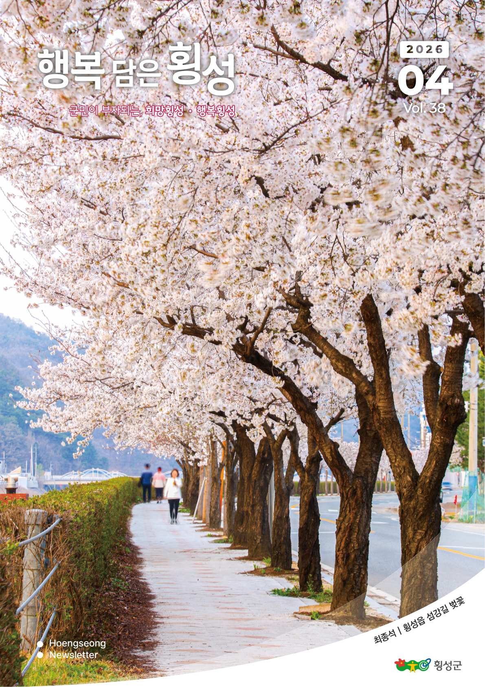</div></div></div><div class='slide' id='s2'><div class='slide-inner'><div class='page-tag' style='background:#1B5E20'><span class='section'>목차</span><span class='pgnum'>2 / 32</span></div><div class='toc-page'>  <div class='toc-header'>Contents</div>  <div class='toc-list'><div class='toc-entry' onclick='go(2)'>  <div class='toc-num' style='background:#6A1B9A'>03</div>  <div class='toc-info'>    <span class='toc-cat' style='color:#6A1B9A'>횡성예술</span>    <span class='toc-desc'>횡성 교향악</span>  </div>  <div class='toc-arrow'>›</div></div><div class='toc-entry' onclick='go(3)'>  <div class='toc-num' style='background:#C62828'>04</div>  <div class='toc-info'>    <span class='toc-cat' style='color:#C62828'>기획1</span>    <span class='toc-desc'>4·1횡성군민 만세운동</span>  </div>  <div class='toc-arrow'>›</div></div><div class='toc-entry' onclick='go(7)'>  <div class='toc-num' style='background:#1565C0'>08</div>  <div class='toc-info'>    <span class='toc-cat' style='color:#1565C0'>기획2</span>    <span class='toc-desc'>제46회 횡성군 장애인의 날</span>  </div>  <div class='toc-arrow'>›</div></div><div class='toc-entry' onclick='go(9)'>  <div class='toc-num' style='background:#00838F'>10</div>  <div class='toc-info'>    <span class='toc-cat' style='color:#00838F'>출동 현장취재</span>    <span class='toc-desc'>횡성군립도서관을 찾아서...</span>  </div>  <div class='toc-arrow'>›</div></div><div class='toc-entry' onclick='go(11)'>  <div class='toc-num' style='background:#2E7D32'>12</div>  <div class='toc-info'>    <span class='toc-cat' style='color:#2E7D32'>횡성이 좋아</span>    <span class='toc-desc'>행복 농자재 청년 귀농 이야기</span>  </div>  <div class='toc-arrow'>›</div></div><div class='toc-entry' onclick='go(13)'>  <div class='toc-num' style='background:#00695C'>14</div>  <div class='toc-info'>    <span class='toc-cat' style='color:#00695C'>횡성어때</span>    <span class='toc-desc'>병지방계곡</span>  </div>  <div class='toc-arrow'>›</div></div><div class='toc-entry' onclick='go(15)'>  <div class='toc-num' style='background:#E65100'>16</div>  <div class='toc-info'>    <span class='toc-cat' style='color:#E65100'>알아두면 힘</span>    <span class='toc-desc'>2026년 횡성군 축제 일정</span>  </div>  <div class='toc-arrow'>›</div></div><div class='toc-entry' onclick='go(17)'>  <div class='toc-num' style='background:#33691E'>18</div>  <div class='toc-info'>    <span class='toc-cat' style='color:#33691E'>탐방</span>    <span class='toc-desc'>횡성군산림조합</span>  </div>  <div class='toc-arrow'>›</div></div><div class='toc-entry' onclick='go(19)'>  <div class='toc-num' style='background:#795548'>20</div>  <div class='toc-info'>    <span class='toc-cat' style='color:#795548'>전문가 기고</span>    <span class='toc-desc'>횡성 기념비</span>  </div>  <div class='toc-arrow'>›</div></div><div class='toc-entry' onclick='go(21)'>  <div class='toc-num' style='background:#1B5E20'>22</div>  <div class='toc-info'>    <span class='toc-cat' style='color:#1B5E20'>횡성소식</span>    <span class='toc-desc'>읍면소식</span>  </div>  <div class='toc-arrow'>›</div></div><div class='toc-entry' onclick='go(24)'>  <div class='toc-num' style='background:#283593'>25</div>  <div class='toc-info'>    <span class='toc-cat' style='color:#283593'>의회소식</span>    <span class='toc-desc'>의정소식</span>  </div>  <div class='toc-arrow'>›</div></div><div class='toc-entry' onclick='go(25)'>  <div class='toc-num' style='background:#5D4037'>26</div>  <div class='toc-info'>    <span class='toc-cat' style='color:#5D4037'>횡성 지킴이</span>    <span class='toc-desc'>이병곤 횡성군노인회장</span>  </div>  <div class='toc-arrow'>›</div></div><div class='toc-entry' onclick='go(26)'>  <div class='toc-num' style='background:#37474F'>27</div>  <div class='toc-info'>    <span class='toc-cat' style='color:#37474F'>일자리정보</span>    <span class='toc-desc'>이달의 일자리 정보</span>  </div>  <div class='toc-arrow'>›</div></div><div class='toc-entry' onclick='go(27)'>  <div class='toc-num' style='background:#455A64'>28</div>  <div class='toc-info'>    <span class='toc-cat' style='color:#455A64'>생활게시판</span>    <span class='toc-desc'>이달의 정보</span>  </div>  <div class='toc-arrow'>›</div></div><div class='toc-entry' onclick='go(29)'>  <div class='toc-num' style='background:#F9A825'>30</div>  <div class='toc-info'>    <span class='toc-cat' style='color:#F9A825'>독자퀴즈</span>    <span class='toc-desc'>이달의 퀴즈 / 횡성이 좋아..</span>  </div>  <div class='toc-arrow'>›</div></div><div class='toc-entry' onclick='go(30)'>  <div class='toc-num' style='background:#6A1B9A'>31</div>  <div class='toc-info'>    <span class='toc-cat' style='color:#6A1B9A'>문화소식</span>    <span class='toc-desc'>문화행사소식 캘린더</span>  </div>  <div class='toc-arrow'>›</div></div></div>  <div class='toc-footer'>    <p>행복 담은 횡성 · 2026년 4월호 (Vol.38)</p>    <p>발행처: 횡성군청 기획예산담당관 홍보팀</p>  </div></div></div></div><div class='slide' id='s3'><div class='slide-inner'><div class='page-tag' style='background:#6A1B9A'><span class='section'>횡성예술</span><span class='pgnum'>3 / 32</span></div><figure class='inline-photo'>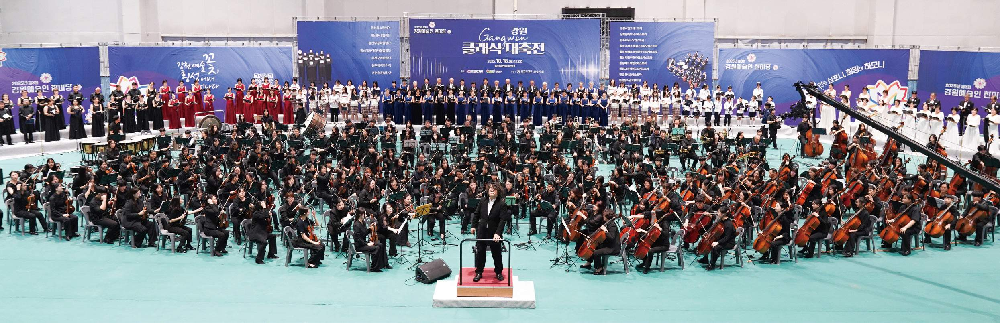</figure><div class='article'><h2 class='main-title'>Orchestra</h2><h2 class='main-title' style="color:#464e9f">횡성교향악,</h2></div><p class='standalone-caption'>▲ 2025년 강원클래식대축전 장면</p><div class='article'><h2 class='main-title'>강원지역 대표 공연예술제로 힘찬 도약!</h2><h3 class='sub-title'>365일 문화와 예술이 흐르는 횡성, 올해 ‘제4회 교향악대축제’ 기대...</h3><p>3년 전 시작된 대규모 클래식 연주회 ‘횡성교향악대축제’가 지역을 대표하는 음악 예술제로 자리 잡으며 강원특별자치도를 대표하는 공연예술제로 힘차게 도약하고 있다. 이 축제는 지난 3년간 규모와 내용을 꾸준히 확대하며 365일 문화와 예술이 흐르는 횡성의 참신한 문화예술 장르로 주목받게 됐다.</p></div><div class='photo-grid g2'><figure class='photo-item'>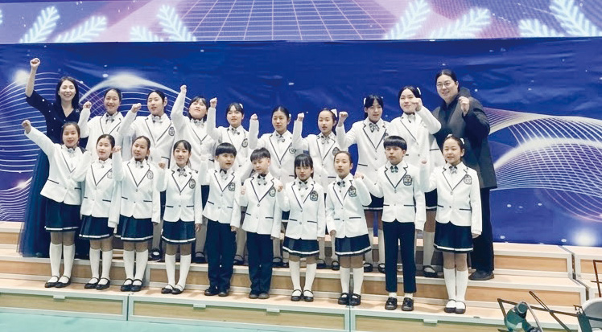</figure><figure class='photo-item'>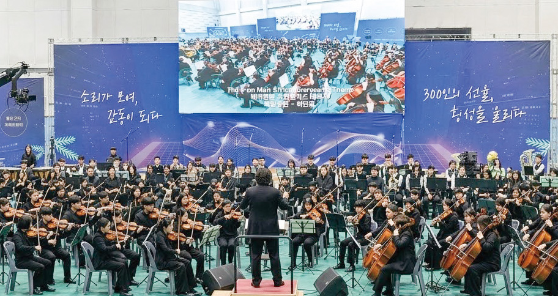<p class='img-caption'>▲ 2025년 300인의 클래식 무대 공연 ▲ 300인의 클래식 협연</p></figure></div><div class='article'><h4 class='lead' style="color:#5460aa">‘횡성교향악대축제’ 학교, 지역 음악단체, 생활예술인 연합 연주!</h4><h4 class='lead' style="color:#5460aa">초등학생, 청소년, 성인 연주자 세대 아우르는 대규모 협연 특징</h4><p>횡성교향악대축제는 학교 오케스트라와 지역 음악단체, 생활예술인들이 함께 참여하는 연합 연주회 형태의 클래식 음악 축제로, 초등학생부터 청소년, 성인 연주자까지 세대를 아우르는 대규모 협연이 특징이다. 지역 예술교육의 결실 이자 공동체 문화의 힘을 보여주는 공연으로 평가받는다. 특히 학교 오케스트라 학생들에게 대규모 공연 경험을 통해 음악 활동에 대한 동기를 높이는 계기가 되며, 지역 주민들 에게는 수준 높은 클래식 공연을 가까이서 즐길 수 있어 문화 향유 기회를 제공한다. 공연 규모도 해마다 확대돼 현재 300명 이상이 참여하는 연합 오케스트라와 합창 공연으로 발전했다. 이 축제의 확장 가능성은 2025년 ‘강원클래식대축전’을 통해 더욱 주목받았다. 당시 춘천, 강릉, 삼척, 원주, 홍천 등 도내 오케스트라와 합창단이 함께 참여해 500인 규모의 연합 연주를 선보이며 강원권 음악 단체 간 협력 가능성을 확인했다. 이러한 흐름을 바탕으로 주최 측은 올해 12월 19일 ‘세대를 넘어, 지역을 넘어, 500인의 심포니, 하나되는 강원 하모니’ 라는 주제로 제4회 횡성교향악대축제를 준비하고 있다.</p><div class='dept'>문의전화: ( 사) 한국예총 횡성지회 사무국 <a href="tel:0333458867" class="tel-link">033-345-8867</a></div></div></div></div><div class='slide' id='s4'><div class='slide-inner'><div class='page-tag' style='background:#C62828'><span class='section'>기획1</span><span class='pgnum'>4 / 32</span></div><figure class='inline-photo'>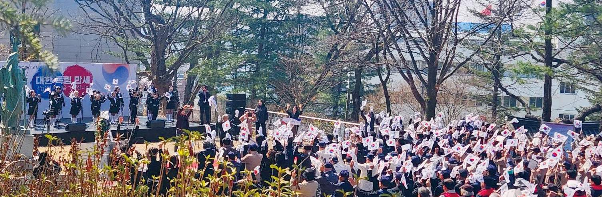</figure><div class='article'><h2 class='main-title' style="color:#164b9f">애국의 고장 횡성!</h2><h2 class='main-title' style="color:#d31b47">4·1 횡성군민 만세운동...</h2><h3 class='sub-title' style="color:#174894">4월 1일 ‘제107주년4·1 횡성군민 만세운동 기념식’ 개최, 횡성군민 자긍심 고취</h3><p>애국의 고장 횡성의 정신문화제인 ‘제107주년 4·1 횡성</p></div><figure class='inline-photo'>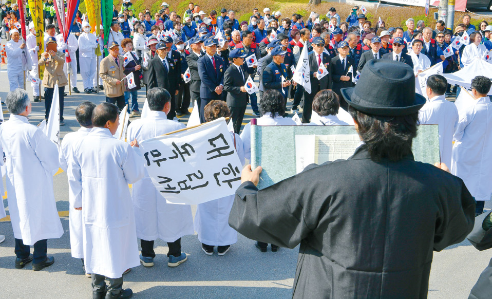</figure><div class='article'><p>군민 만세운동’ 기념식이 4월 1일 횡성 만세공원과 횡성 보훈공원 일원, 횡성문화원 발표회장 등지에서 대대적으로 펼쳐진다. 1919년 횡성에서 불타오른 4·1 횡성군민 만세운동을 기념 하고, 순국선열의 숭고한 얼을 기리며 애국의 고장 횡성의 자긍심을 고취하게 된다.</p></div><p class='standalone-caption'>▲ 2025년 4·1만세운동기념식 장면</p><figure class='inline-photo'>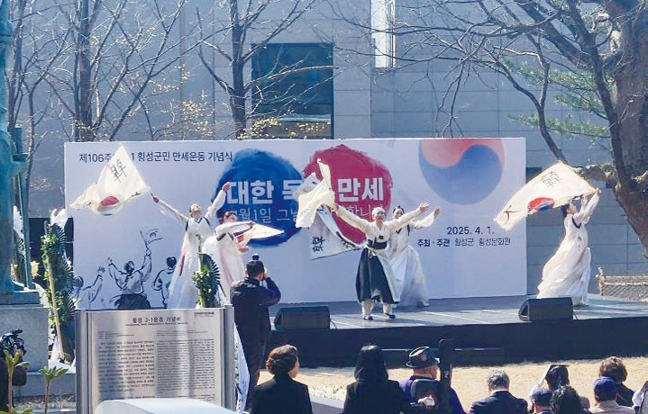</figure><div class='article'><p>기념행사는 횡성 만세공원에서 오전 9시 30분 집결해 시가행진을 펼친 다. 또 이날 보훈공원에서는 진혼무 공연이 진행된다. 김영아 전통예술단이 진행하고, 시가행진은 횡성군 각 보훈단체와 회다지, 사물놀이연합팀 등이 참여한다. 본 행사는 횡성보훈공원에서 10시 00분부터 시작된다. 국민의례에 이어 순국선열과 전몰호국영령에 대한 묵념, 헌화와 분향, 4·1 횡성군민 만세</p></div><p class='standalone-caption'>▲ 4·1만세운동 기념식</p><div class='article'><p>운동 약사 설명, 유가족 대표 고(故) 탁영의 지사의 자(子) 탁연한 님의</p></div><figure class='inline-photo'>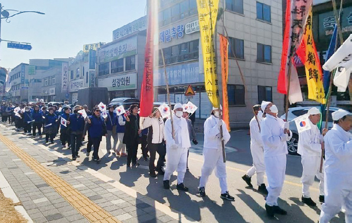</figure><div class='article'><p>선창으로 만세삼창 등 다양하게 진행된다. 아울러 이날 오후 2시부터는 횡성문화원 발표회장에서 대동여중 오겸 역사교사의 진행으로 ‘횡성군민 만세운동과 불굴의 애국지사 최양옥’ 이라는 주제로 토크 콘서트가 열릴 예정이다.</p></div><p class='standalone-caption'>▲ 4·1만세운동 시가행진</p><div class='article'><div class='dept'>문의전화: 횡성문화원 <a href="tel:0333432271" class="tel-link">033-343-2271</a></div></div></div></div><div class='slide' id='s5'><div class='slide-inner'><div class='page-tag' style='background:#C62828'><span class='section'>기획1</span><span class='pgnum'>5 / 32</span></div><figure class='inline-photo'>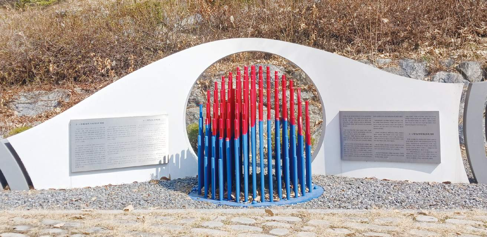</figure><div class='article'><h4 class='lead' style="color:#164b9f">4·1 횡성군민 만세운동 이야기</h4><p>횡성의 만세운동은 당시 횡성보통학교 4학년 6회 졸업생들이 도화선이 됐다. 이들은 1919년 3월 18일로 예정된 졸업식이 끝나면</p></div><p class='standalone-caption'>▲ 보훈공원 태극문양 기념물</p><div class='article'><p>곧바로 횡성군청 뒷산으로 올라가 만세를 부르기로 결의하고 읍내 지도층 어른들에게 자문을 구했으나 어른들은 힘을 결집해 후일을 도모하자고 해 실행에 옮기지는 못했다.</p></div><figure class='inline-photo'>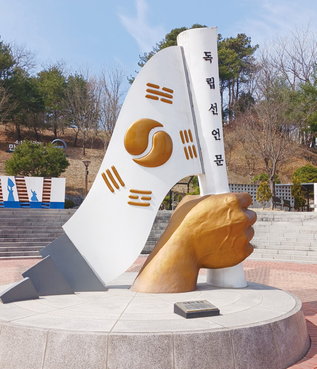</figure><div class='article'><p>그러나 학생들은 이후 몇 차례 비밀회의를 가진 끝에 ‘무언의 저항운동’을 전개하기로 했다. 그해 1월 22일 승하한 고종황제를 애도하는 표시로 3월 16일부터 상장(喪章)을 달고 등교 하기로 하고 전교생에게 연락해 실행에 옮겼다. 일본 헌병은 이로 인해 독립만세운동이 벌어질 것을 우려, 휴교령을 내렸고, 학생들은 예정된 졸업식도 못하고 졸업장을 집에서 받게 되는 일이 발생했다. 이 사건으로 횡성읍에 대한 일본 헌병의 감시가 강화되었고, 횡성시장에서의 분위기는 삼엄해졌다.</p></div><figure class='inline-photo'>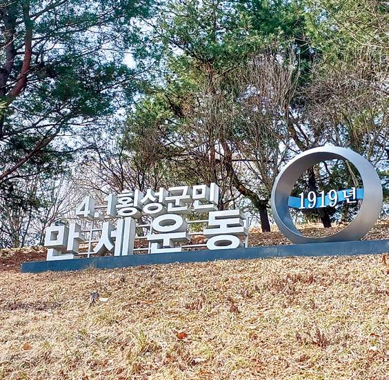</figure><div class='article'><p>이런 분위기 속에서도 천도교인을 중심으로 이미 시작된 만세운동의 기운은 횡성으로 이어지기 시작해 마침내 3월 27일 오후 1시, 횡성장터에서 신재근, 장도훈, 안경춘, 강만형, 윤태환 등의 주도로 300여명의 시위대가 만세운동을 펼쳤다. 선열들이 희생된 위대한 민족자존의 역사이자 횡성군민의 긍지로 남아있다.</p><h4 class='lead' style="color:#164b9f">4·1 횡성군민 만세운동의 의미</h4></div><figure class='inline-photo'>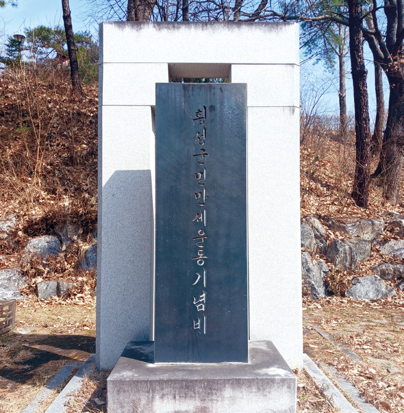</figure><div class='article'><p>횡성은 임진왜란 당시 왜군들로부터 약탈과 노략질 등 심각한 피해를 입으면서 자연스럽게 항일민족정신의 싹을 틔운 곳이다. 항일민족정신은 의병활동으로 시작해 구한말 일제강점기 격렬한 의병투쟁으로 이어졌다. 이러한 뿌리가 1919년 전국적으로 번지기 시작한 3·1 만세운동에 이어 4월 횡성군민 만세운동으로 계승되었다고 하겠다. 4·1 횡성군민 만세운동은 그 규모와 항쟁의 강도가 가장 격렬해 강원도 만세 운동의 중심지가 되었다. 이로써 4·1 횡성군민 만세운동은 횡성군민의</p></div><p class='standalone-caption'>▲ 횡성 보훈공원에 세워진 ‘횡성군민 만세운동 기념비’</p><div class='article'><p>기개를 널리 펼치고, 애국의 고장 횡성의 가치를 드높인 상징이 되었다.</p></div><figure class='inline-photo'>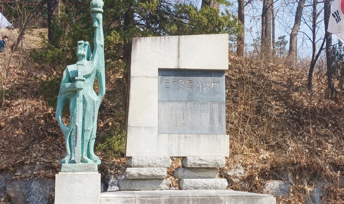</figure><div class='article'><p>1919년 3월 27일 첫 만세운동부터 4월 1일과 4월 2일 3차에 걸쳐 횡성 읍내 장터에서 만세운동이 일어난 것을 4·1 횡성군민 만세운동이라 칭하게 되었으며, 이 독립운동은 강원도내 최초, 최대의 만세운동으로 가장 오랜 기간, 가장 많은 선열들이 희생된 위대한 민족자존의 역사이자 횡성군민의 긍지로 남아있다.</p></div><p class='standalone-caption'>▲ 동아일보가 세운 3·1운동 기념비</p></div></div><div class='slide' id='s6'><div class='slide-inner'><div class='page-tag' style='background:#C62828'><span class='section'>기획1</span><span class='pgnum'>6 / 32</span></div><div class='article'><h3 class='sub-title'>누가 4·1 횡성군민 만세운동 주도했을까?</h3><h4 class='lead' style="color:#3d3d3e">4 · 1 횡성군민 만세운동을 주도한 사람들은 천도교인 16명, 청년회 2명,</h4><h4 class='lead' style="color:#3d3d3e">감리교인 2명, 유학자 3명, 서울 유학생 1명 등 모두 24명이었다.</h4><h2 class='main-title' style="color:#f18c3c">4·1 횡성군민 만세운동 주도한 사람들</h2><p>횡성읍 읍상리 최종하(천도교 교구장), 횡성읍 읍하리 윤태환(청년회원), 횡성읍 읍하리 탁영재 (감리교인), 횡성읍 읍상리 전성수(천도교인), 횡성읍 읍상리 최동수(청년회원), 횡성읍 영영포리 신재근(천도교인. 당시 64세로 주도인물), 횡성군 내지리 정해경(감리교인), 우천면 두곡리 김명기(유학자), 우천면 두곡리 김진대(유학자), 갑천면 매일리 김윤배(천도교인), 안흥면 안흥리 천선재(천도교인. 당시 78세로 최고령), 안흥면 상안리 장도훈(천도교인), 안흥면 상안리 김인경(천도교인), 안흥면 상안리 안경춘(천도교인), 우천면 가좌곡리 김연의(천도교인), 우천면 하산전리 조상렬(천도교인), 우천면 법주리 강성순(천도교인), 우천면 추동리 최양옥(서울유학생), 갑천면 매일리 김치정(유학자), 원주 소초면 둔둔리 강달회(천도교인), 원주 소초면 둔둔리 강만형(천도교인), 원주 소초면 둔둔리 하영현(천도교인), 원주 소초면 교항리 추병학(천도교인), 원주 소초면 교항리 추병윤(천도교인), 횡성읍 읍하리 전한국(수로공부).</p></div><figure class='inline-photo'>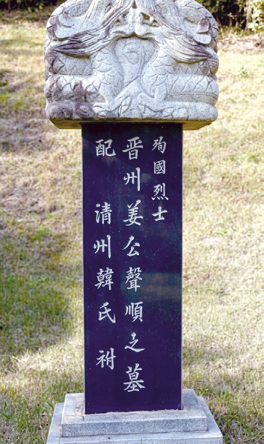</figure><div class='article'><p>이중 강달회, 하영현, 강성순, 김치정, 전한국은 4월 1일 만세운동 때 목숨을 잃었고, 최종하, 신재근, 장도훈 등은 징역 2년, 정해경은 징역 1년 6월, 김인경, 조상렬, 전성수, 김윤배, 김연의, 안경춘, 강만형은 징역 8개월, 윤태환, 추성윤은 징역 6개월 을 살았고, 강만형은 옥사하고 말았다. 그 후 독립운동을 계속 추진한 사람 중에 최양옥</p></div><figure class='inline-photo'>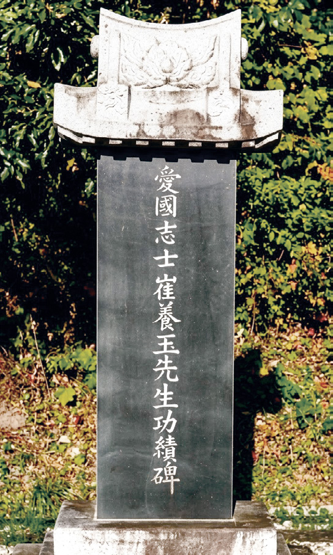</figure><div class='article'><p>지사를 잊을 수 없다. 그는 중국과 우리나라 전역 에서 독립운동을 전개하다가 17년의 긴 옥고를 치루고 광복을 맞이한 불사조같은 사람이었다.</p></div><div class='photo-grid g2'><figure class='photo-item'>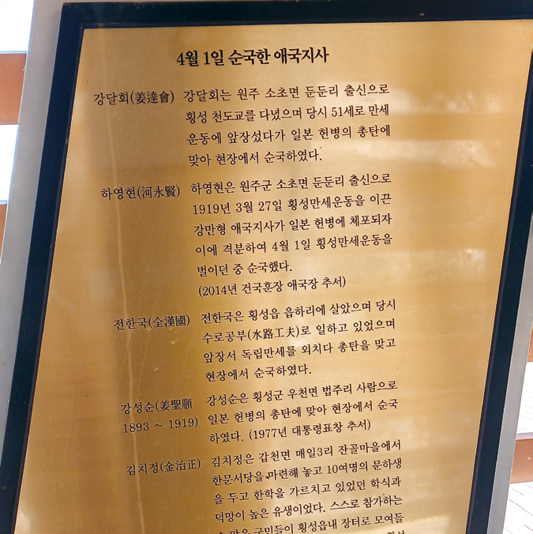<p class='img-caption'>▲ 강성순 애국열사 묘비</p></figure><figure class='photo-item'>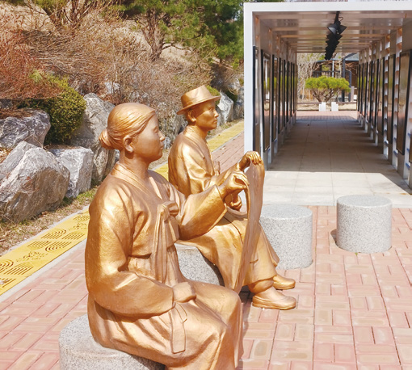<p class='img-caption'>▲ 애국지사 최양옥 선생 공적비(功績碑)</p></figure></div></div></div><div class='slide' id='s7'><div class='slide-inner'><div class='page-tag' style='background:#C62828'><span class='section'>기획1</span><span class='pgnum'>7 / 32</span></div><div class='article'><h2 class='main-title' style="color:#164b9f">횡성군민 만세운동 순국한 애국지사들</h2></div><figure class='inline-photo'>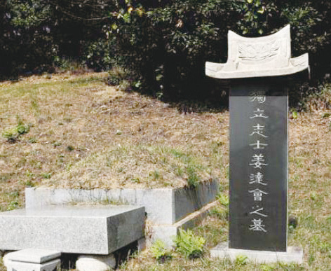<p class='img-caption'>▲ 소초면 둔둔리 진주강씨 선산의 강달회 애국열사 묘역</p></figure><div class='article'><h3 class='sub-title' style="color:#164b9f">강달회(姜達會)</h3><p>원주 소초면 둔둔리 출신으로 횡성 천도교를 다녔으며, 당시 51세로 만세운동에 앞장섰다가 일본 헌병의 총탄에 맞아 현장에서 순국했다.</p><h3 class='sub-title' style="color:#164b9f">하영현(河永賢)</h3><p>원주 소초면 둔둔리 출신으로 1919년 3월 27일 횡성 만세운동을 이끈 강만형 애국지사가 일본 헌병에 체포 되자 이에 격분하여 4월 1일 횡성만세운동을 벌이던 중 순국했다. 이에 2014년 건국훈장 애족장이 추서됐다.</p><h3 class='sub-title' style="color:#164b9f">전한국(全漢國)</h3><p>횡성읍 읍하리에 살았으며, 당시 수로공부(水路工夫)로 일하고 있었으며, 앞장서 독립만세를 외치다 총탄을 맞고 현장에서 순국했다.</p></div><p class='standalone-caption'>출처: 횡성문화원 ‘아 1919 삼일의 불길’ 김성수,</p><p class='standalone-caption'>향토사료 제33집 횡성 3·1만세운동 서사시 2018.12. 참조</p><div class='article'><h3 class='sub-title' style="color:#164b9f">강성순(姜聖順)</h3><p>우천면 법주리 사람으로 일본 헌병의 총탄에 맞아 현장 에서 순국했다. 이에 1977년 대통령표창이 추서됐다.</p><h3 class='sub-title' style="color:#164b9f">김치정(金治正)</h3><p>갑천면 매일3리 잔골마을에서 한문 서당을 마련해놓고 10여 명의 문하생을 두고 한학을 가르치고 있었던 학식과 덕망이 높은 유생이었다. 스스로 참가하는 수많은 군민 들이 횡성읍내 장터로 모여들 때 김치정도 제자 신건수를 대동하고 횡성으로 와서 군중과 함께 독립만세를 외쳤다. 김치정은 무차별 난사하는 일본군의 총탄에 맞아 쓰러지고 말았지만 잡히지 않으려고 그래도 현장에서 기어나와 일본 헌병에 발견되지 않았다. 만세사건 후 잔골마을로 김치정의 사망소식이 전달되어 전골마을 사람들이 횡성까지 나와서 그의 시신을 몰래 운구, 일경의 눈을 피해 장사를 지냈다. 김치정이 만세 운동에 참여하고 또 순국한 사실은 당시 일본 헌병이 두려워 남들에게 숨겨야 했으며, 그 업적이 세상에 알려 지지않고 있다가 제자 신건수의 증언에 의하여 밝혀 졌지만 보훈의 대열에 오르지 못하고 있다. 이렇게 김치정처럼 총상을 입고 몰래 집에가서 죽은 사람이 얼마나 많을지는 당시의 상황으로 미루어 알 수가 없다.</p></div><figure class='inline-photo'><p class='img-caption'>▲ 횡성군민 만세운동 일본 헌병 무차별 진압 퍼포먼스 연출</p></figure></div></div><div class='slide' id='s8'><div class='slide-inner'><div class='page-tag' style='background:#1565C0'><span class='section'>횡성소식</span><span class='pgnum'>8 / 32</span></div><div class='article'></div><figure class='inline-photo'>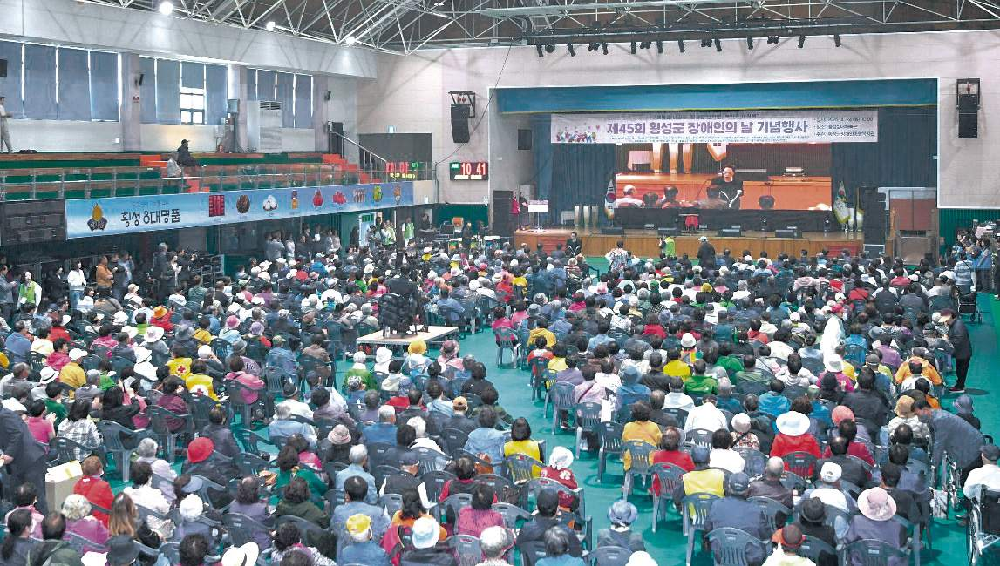</figure><div class='article'><h2 class='main-title' style="color:#03589a">군민과 함께...</h2><h2 class='main-title' style="color:#03589a">장애인과 함께...</h2><h2 class='main-title' style="color:#03589a">행복 횡성!</h2><h3 class='sub-title' style="color:#085490">제46회 횡성군 장애인의 날 기념행사 펼쳐...4월 24일 횡성실내체육관, 인라인스케이트장 일원서 열려!</h3><p>올해 제46회 장애인의 날을 맞아 장애인과 군민이 함께 참여하는 ‘제46회 횡성군장애인의 날 기념행사’가 4월 24일 오전 10시부터 오후 4시까지 횡성읍 횡성실내체육관과 인라인스케이트장 일원에서 대대적으로 펼쳐질 예정이다.</p><h4 class='lead' style="color:#164b9f">장애친화도시 선포 이후, 실천 사례 공유</h4><h4 class='lead' style="color:#164b9f">장애인 권리 존중, 가치 등 일상에 스며들도록...</h4><p>이번 행사는 지난해 장애친화도시 선포 이후 지역사회 장애친화도시 실천 사례를 공유하고, 장애인 당사자와 군민이 함께 참여해 장애인의 권리와 존중의 가치를 일상에서 자연스럽게 실천하는 사회적 분위기를 조성하게 된다. 기념행사는 식전 행사로 비보이팀 장애인 아티스트 공연을 비롯해 장애인복지관 이용자 공연 등으로 분위기를 띄울 예정이다. 특히 비보이팀은 지체장애인 1명과 비장애인 4명으로 구성해 아름다운 동행 문화를 연출한다. 기념식에서는 ‘횡성군 장애친화도시, 함께 만드는 변화’를 주제로 영상을 감상하고, 장애인 인권헌장 낭독과 기념사 및 축사 등이 진행된다. 또 장학금 지급, 유공자 표창 등이 이어진다. 이날 푸짐한 경품추첨의 시간도 마련된다. 뿐만 아니라 흥과 웃음이 넘치는 어울림한마당으로 장애인 장기자랑과 어울림</p></div><figure class='inline-photo'>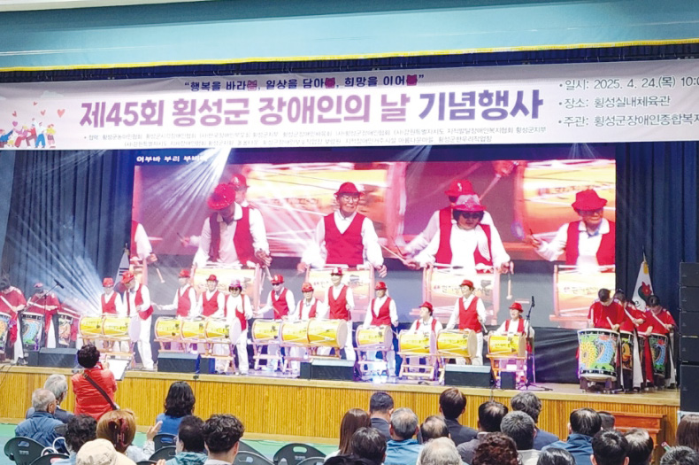</figure><div class='article'><p>문화공연 등이 준비된다. 장애인 장기자랑은 장애인 단체를 비롯해 개인과 가족 등도 함께 참가한다. 물론, 초청가수 축하공연, 즐거운 레크레이션도 예정돼 있다. 아울러 이날 행사장에는 장애복지시설과 단체를 알리는 부스가 마련되고, 장애인과 노인 보조기도 전시돼 직접 체험해 볼수 있다.</p><div class='dept'>문의전화: 복지정책과 장애인복지팀 <a href="tel:0333402166" class="tel-link">033-340-2166</a></div></div></div></div><div class='slide' id='s9'><div class='slide-inner'><div class='page-tag' style='background:#1565C0'><span class='section'>횡성소식</span><span class='pgnum'>9 / 32</span></div><figure class='inline-photo'>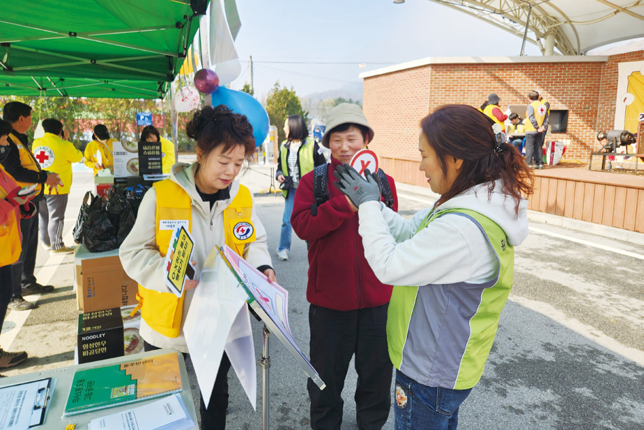</figure><div class='article'><h4 class='lead' style="color:#164b9f">4월 장애인의 달 다양한 행사 기대!</h4><h4 class='lead' style="color:#164b9f">장애 인식개선, 다양한 이벤트 펼친다.</h4><p>횡성군장애인종합복지관은 장애인의 달 장애인식 개선 주간행사로 4월 중에 ‘지역으로 찾아가는 장애인식개선캠페인(in 우천면)을 진행한다. ‘장애에 대한 편견을 뻥! 터트리자’ 뻥튀기 퍼포먼스, 장애친화마을ㆍ장애 친화상점 홍보, 장애이해 O·X퀴즈 등으로 마련한다.</p><div class='dept'>문의전화: 횡성군장애인종합복지관 지역사회개발팀</div><div class='dept'><a href="tel:0333457341" class="tel-link">033-345-7341</a> / <a href="tel:07046129765" class="tel-link">070-4612-9765</a></div></div><figure class='inline-photo'>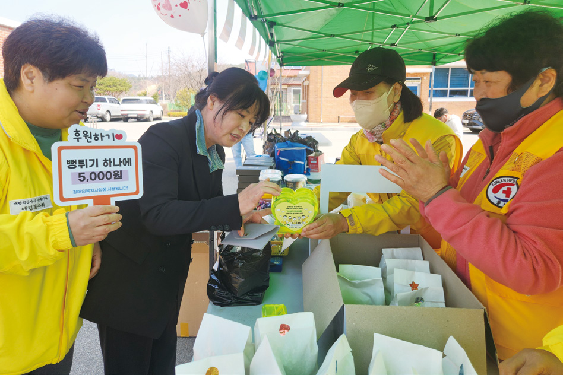</figure><div class='article'><p>또 ‘말이 달라도 마음은 통합니다-Ami Cafe와 함께하는 AAC 주문 체험 이벤트’도 계획돼 있다. 참여 방법은 횡성군장애인복지관 Ami Cafe에서 AC(보완대체 의사소통)판을 활용해 음료 주문 → 횡성군장애인복지관 Ami Cafe와 바리스타를 위한 따뜻한 응원 메시지 남기기 → 횡성군 장애인 복지관 유튜브 구독 순으로 참여하면 된다. 앞의 세 가지 미션 진행 완료 시 아메리카노 또는 아이스 아메리카노 1잔을 무료로 받을 수 있다.</p><div class='dept'>문의전화: 횡성군장애인종합복지관 성인사회참여지원팀</div><div class='dept'><a href="tel:0333457341" class="tel-link">033-345-7341</a> / <a href="tel:07046129761" class="tel-link">070-4612-9761</a></div></div><figure class='inline-photo'>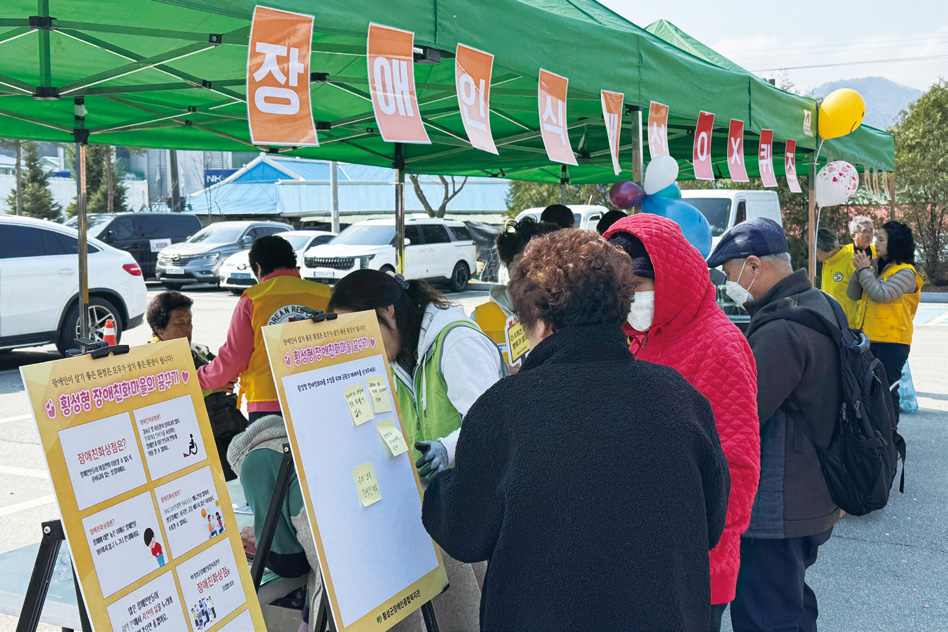</figure><div class='article'><blockquote>‘다시 쓰는 세상, 함께 사는 우리’ 리사이클을 통한 장애인식개선 프로</blockquote><p>그램도 주목받는다. 횡성 관내 지역 주민 및 장애인 15명을 대상으로 4월 17일 오전 10시부터 ‘버려진 물건도 새 가치를 만들 수 있듯, 사람도 누구나 가치 있는 존재’ 교육과 작은 플라스틱(병뚜껑)으로 만드는 타르트 접시 만들기 체험활동이 진행된다.</p><div class='dept'>문의전화: 횡성군장애인종합복지관 장노년맞춤형지원팀</div><div class='dept'><a href="tel:0333457341" class="tel-link">033-345-7341</a> / <a href="tel:07046129760" class="tel-link">070-4612-9760</a></div></div></div></div><div class='slide' id='s10'><div class='slide-inner'><div class='page-tag' style='background:#00838F'><span class='section'>출동 현장취재</span><span class='pgnum'>10 / 32</span></div><div class='article'></div><figure class='inline-photo'>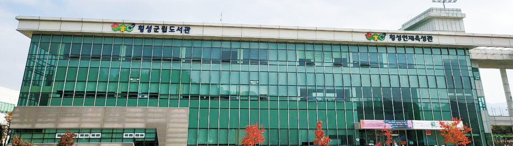</figure><div class='article'><h2 class='main-title' style="color:#005180">4월 도서관의 날,</h2><h2 class='main-title' style="color:#005180">횡성 각 도서관을 알아본다!</h2><p>4월 12일은 도서관의 날이다. 따뜻한 4월 독서를 통해 삶의 지혜를 터득하고 도서관에서 다양한 프로그램에도 참여 하며 삶의 활력을 얻어보는 것도 좋겠다. 횡성군에는 공공도서관인 횡성군립도서관과 둔내태성도서관을 비롯해 각 읍면에 공공작은도서관 등이 자리잡고 있어 군민의 독서 욕구를 만족시켜준다. 특히 이들 도서관이 소장한 모든 도서는 연동하여 운영되므로 편리하게 이용할 수 있다. 공공도서관은 독서문화 진흥과 북스타트, 도서관 다문화서비스, 독서문화 프로그램 운영 등을 진행한다. 도서 대출과 도서 택배 서비스를 비롯해 책 꾸러미 선물, 장난감 대여, 인문학 콘서트, 도서관 문화가 있는 날 운영 등 다채로운 프로그램을 만나보게 된다.</p><h4 class='lead' style="color:#005180">횡성군 공공도서관 19만9천196권 장서 보유, 독서문화 창출 앞장</h4><h4 class='lead' style="color:#005180">횡성군립도서관, 둔내태성도서관 도서 대출, 다양한 프로그램 운영</h4></div><figure class='inline-photo'>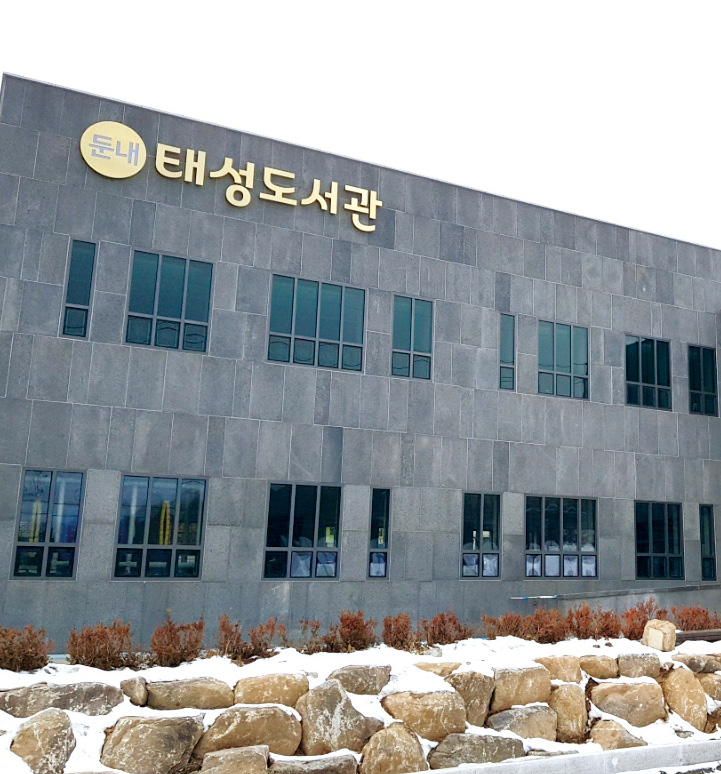</figure><div class='article'><p>횡성군립도서관과 둔내태성도서관을 비롯해 각급 작은도서관이 보유한 장서는 철학과 종교, 사회 및 자연과학, 예술, 언어, 문학, 역사, 총류 등 무려 19만9천196권에 이른다. 이중 군립도서관이 9만3천316권, 태성도서관이 3만2천748권, 작은도서관은 7만 3천132권의 장서를 보유하고 있다. 많은 장서를 보유한 횡성의 각 공공 및 공공작은도서관들의 현황이 궁금해진다.</p></div><figure class='inline-photo'>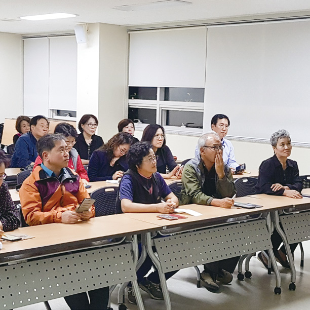</figure><div class='article'><p>횡성읍 문화체육로 75에 위치한 횡성군립도서관에서는 살아 움직이는 지식 체득과 오감 만족 창작활동, 다채로운 프로그램들이 활발하게 운영되고 있다. 이곳은 장난감도서관을 비롯해 아동자료실, 휴게실과 강의실, 종합·디지털 자료실, 연람실 등 우수한 시설을 갖추고 군민의 독서문화 욕구를 충족시켜준다. 둔내면 둔방로 4번길 38에 위치한 둔내태성도서관도 장난감도서관, 유아자료실, 아동, 종합자료실, 강의실 등을 두루  갖추고 면민과 이용객에게 열린 독서문화의 장을 펼친다.</p></div></div></div><div class='slide' id='s11'><div class='slide-inner'><div class='page-tag' style='background:#00838F'><span class='section'>출동 현장취재</span><span class='pgnum'>11 / 32</span></div><figure class='inline-photo'>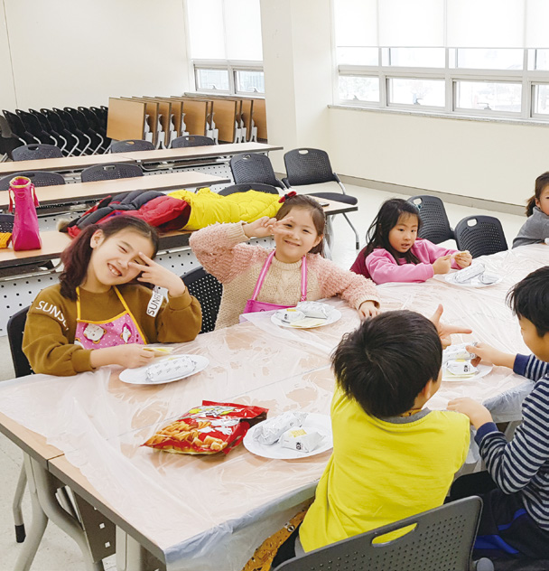<p class='img-caption'>▼ 다양한 프로그램</p></figure><div class='article'><h4 class='lead' style="color:#005180">횡성 각 읍면 작은도서관 ‘지혜의 샘’ 솟아...</h4><p>뿐만 아니라 각 읍면에 위치한 작은도서관에서도 다양한 프로그램과 독서 활동이 활발하다.</p></div><figure class='inline-photo'>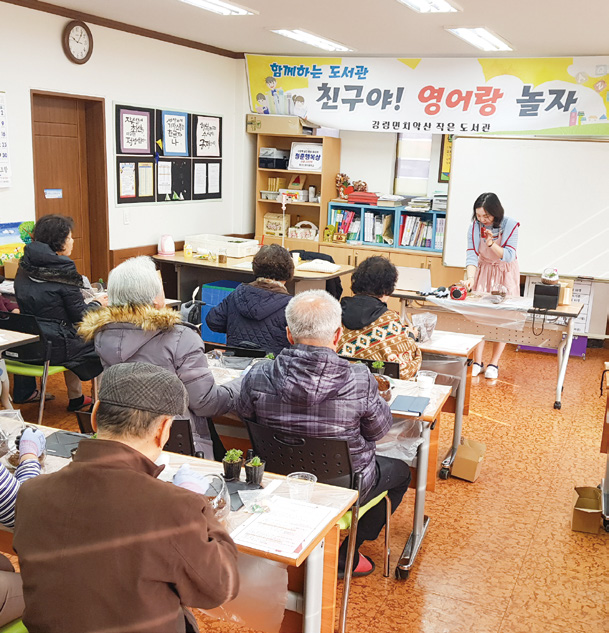</figure><div class='article'><p>횡성읍행정복지센터 내 느티나무작은도서관을 비롯해 횡성읍 3.1중앙 근린공원 관리사무소 옆 스마트미니도서관과 횡성읍 만세공원(횡성로 400) 내 한우리작은도서관이 운영 중이다. 또 공근면에도 학담길 16에 금계작은도서관이 있고, 청일면에는 청정로 823에 버들골작은도서관이 운영되고 있다. 강림면에도 강림건강복지센터 2층(강림시장길13)에 치악산작은 도서관, 우천면에는 우항3길 5-2에 우천</p></div><p class='standalone-caption'>▲ 작은도서관 프로그램</p><div class='article'><p>매화작은 도서관이 주민들을 반겨준다.</p></div><p class='standalone-caption'>▲ 공근 금계작은도서관</p><p class='standalone-caption'>▲ 서원 매봉작은도서관</p><p class='standalone-caption'>▲ 강림 치악산작은도서관</p><figure class='inline-photo'>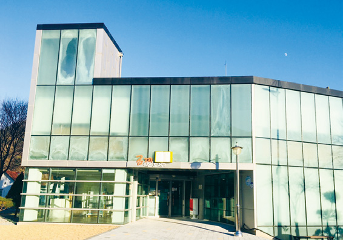</figure><div class='photo-grid g3'><figure class='photo-item'>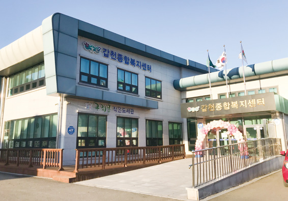</figure><figure class='photo-item'>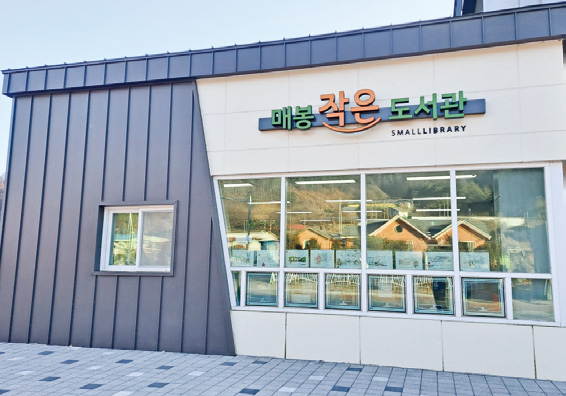</figure><figure class='photo-item'>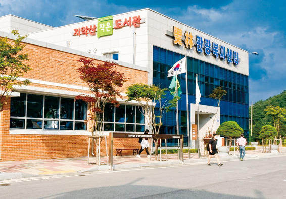<p class='img-caption'>▲ 갑천 구리봉작은도서관</p></figure></div><div class='article'><p>안흥면에도 안흥행정복지센터 인근 안흥로 27에 안흥찐빵마을책사랑방이 운영되고 있으며, 갑천면에는 청정로 매일 5길 2에 구리봉작은도서관이 운영되고 있다. 또 서원면 서원로 136에 서원매봉작은도서관이 운영되는 등 횡성 곳곳에 도서관이 있어 마음만 먹으며 언제든지 독서와 체험을 통해 지혜의 샘 경험이 가능하다. 한편 도서관의 날, 도서관 주간을 맞아 4월 12일 오후 3시 횡성문화예술회관에서 ‘구공탄 눈사람’ 공연이 열리고, 4월 15일에는 횡성문화원에서 오후 2시 ‘인간의 심리로 알아보는 썬킴의 거침없는 세계사’ 강연이 펼쳐진다.</p></div><p class='standalone-caption'>▲ 안흥 찐빵마을책사랑방</p><p class='standalone-caption'>▲ 우천 매화작은도서관</p><div class='photo-grid g3'><figure class='photo-item'>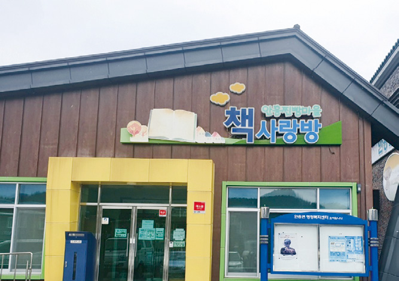</figure><figure class='photo-item'>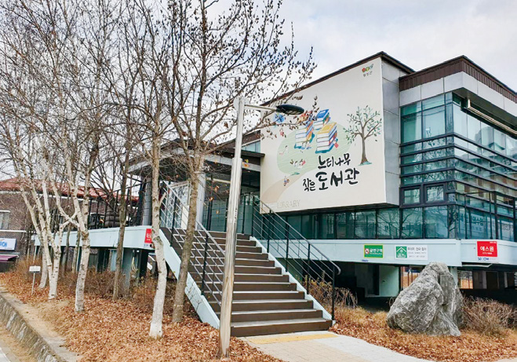</figure><figure class='photo-item'>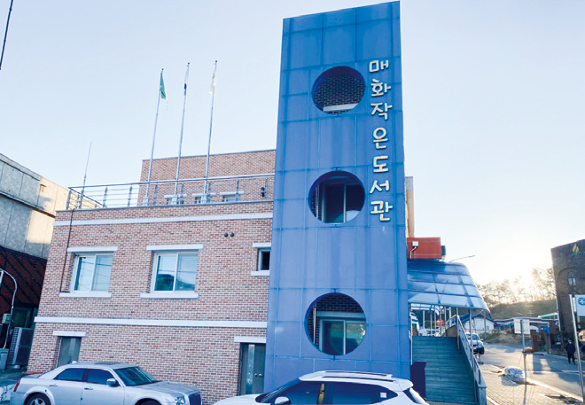<p class='img-caption'>▲ 횡성읍 느티나무작은도서관</p></figure></div><div class='article'><h3 class='sub-title'>문의전화</h3></div><p class='standalone-caption'>구리봉작은도서관  033-342-2605</p><p class='standalone-caption'>횡성군립도서관  033-340-5861~3</p><p class='standalone-caption'>버들골작은도서관  033-342-7545</p><p class='standalone-caption'>둔내태성도서관  033-342-5869~5882</p><p class='standalone-caption'>금계작은도서관  033-342-2121</p><p class='standalone-caption'>한우리작은도서관  033-344-0321</p><p class='standalone-caption'>매봉작은도서관  033-342-0036</p><p class='standalone-caption'>느티나무작은도서관  033-340-5860</p><p class='standalone-caption'>치악산작은도서관  033-342-7005</p><p class='standalone-caption'>매화작은도서관  033-343-2602</p><p class='standalone-caption'>찐빵마을책사랑방  033-342-4390</p><div class='article'></div></div></div><div class='slide' id='s12'><div class='slide-inner'><div class='page-tag' style='background:#2E7D32'><span class='section'>횡성 지킴이</span><span class='pgnum'>12 / 32</span></div><div class='article'><h3 class='sub-title' style="color:#225e37">횡성 귀농 청년의 꿈과 희망이야기</h3><h4 class='lead' style="color:#005e94">횡성에서 스마트팜 도전, 청년 농업인 기회 될 터...</h4><h2 class='main-title' style="color:#225e37">“행복(반값)농자재!</h2><h2 class='main-title' style="color:#225e37">영농 경영비 절감 도움받아요”</h2><p>본격적인 영농철이 시작되면서 횡성의 농업인들은 하루가 1년처럼 느껴질 정도로</p></div><figure class='inline-photo'>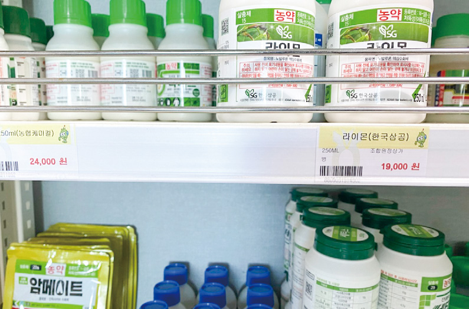</figure><div class='article'><p>일상이 분주하다. 각종 농자재 신청과 구매는 물론, 농기계를 손보며, 밭갈이와 비닐하우스 손보기 등 할 일이 산적해 있기 때문이다. 이들 중 지난 겨울부터 쉬지 않고 하우스 재배로 딸기 농사에 전념하고 있는 귀농 청년 농업인들이 있어 그 현장을 찾아 생생한 영농 이야기를 들었다.</p></div><p class='standalone-caption'>▲ 농약 등 행복(반값)농자재</p><div class='article'><blockquote>“요즘 이란 전쟁 등 여파로 기름값도 오르고 하우스 시설재배 특성상 여러 고민거리도 있어요. 투자한 시설비 회수와</blockquote><p style="color:#225e37">계속 들어가는 유지비, 인건비 등 귀농 영농인이 겪는 현실은 녹록하지 않습니다. 이런 여건에서 농사에 꼭 필요한 비료를 비롯해 농약과 소독약 등도 부담이 되지만, 다행히 농자재를 반값으로 구매할 수 있어 숨통이 트입니다.”</p><h4 class='lead' style="color:#225e37">청년 귀농인들 꿈 익어가는</h4><h4 class='lead' style="color:#225e37">양적리 스마트팜 딸기 농장</h4></div><figure class='inline-photo'>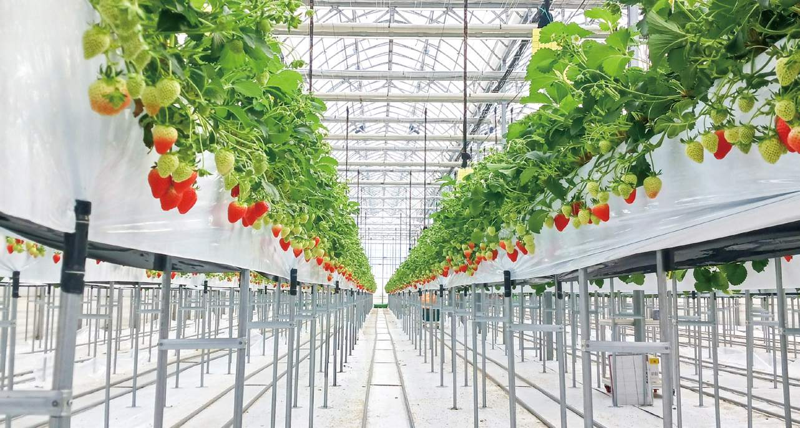</figure><div class='article'><p>횡성군 우천면 양적리에 4년 전 귀농한 ‘수지애’라는 스마트팜 딸기농장을 운영하는 청년 농업인 이은경 (여) 대표는 딸기 생산과 체험농장을 운영하며 높은 농업경영비 때문에 늘 고민이 많지만, 농약과 영양제, 비료 등 행복(반값)농자재를 신청해 활용하면서 영농 경영비 절감에 도움을 받고 있다고 들려준다.</p></div><p class='standalone-caption'>▲깔끔한 스마트팜 딸기농장</p><div class='article'><p>우천면 양적리에는 1년 전 미국에서 베이커리 카페 공동 운영 경험을 간직한 청년 여성 귀농인이 또 있다. ‘화순당’(꽃과 순수함, 달달한 당을 의미)이라는 스마트팜 딸기농장을 운영하는 유영선(여)씨다. 그녀는 ‘비축농지스마트팜 임대’로 10년간 농지와 시설을 임대받아 횡성에 정착하고 있는 40대 여성 귀농인으로 부자 농부의 꿈을 실현 중이다.</p></div></div></div><div class='slide' id='s13'><div class='slide-inner'><div class='page-tag' style='background:#2E7D32'><span class='section'>횡성 지킴이</span><span class='pgnum'>13 / 32</span></div><figure class='inline-photo'>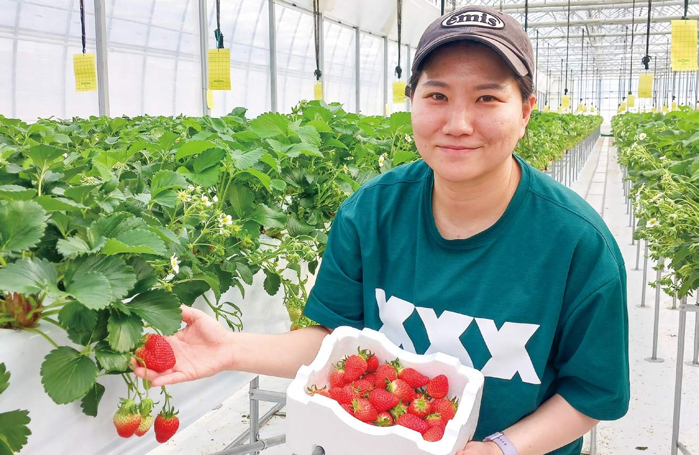</figure><div class='article'><h4 class='lead' style="color:#225e37">꿈과 희망, 도전과 실행,</h4><h4 class='lead' style="color:#225e37">결과에 대한 확신, 귀농 청년</h4></div><p class='standalone-caption'>▲ 화순당 유영선 대표</p><div class='article'><blockquote>“지난해 3월 우천면으로 거주지를 옮기고 양적리에 딸기농장을 시작했습니다. 만 1년이 안됐지만 4천 여만원의 수익도</blockquote><p style="color:#225e37">냈습니다. 딸기 농사에서 꼭 필요한 모종이며 비료, 상토, 농약, 소독제 등을 구입해야 하는데 지난해 평택까지 가서 농약과 비료를 구입 하느라 시간과 비용이 너무 많이 들었던 기억이 생생합니다. 올해부터는 농장과 가까운 동횡성농협 에서 비료와 농약, 소독제 등을 절반 가격으로 구입하게 되어 영농 경영비 절감에도 도움이 될 것 같습니다.” 유 대표는 도시에서 직장생활을 하던 중 미래에 대한 불확실성으로 고민이 깊었던 차에 친한 친구와 함께 귀농·귀촌 정보를 접하고 스마트팜으로 혁신적인 삶을 살기로 결심했다. 6개월 기간의 ‘청년 귀농 장기교육’을 비롯, 1년 8개월간 농식품부의 스마트팜에 특화된 현장실습 중심의 장기 전문 교육을 이수하면서 스마트팜으로 승부를 걸기로 결정했다. 횡성에 임대농장을 신청해 경쟁을 뚫고 획정되면서 기대감과 기쁨이 크다고 속내를 털어놓는다.</p><h4 class='lead' style="color:#225e37">영농은 평생직업!</h4><h4 class='lead' style="color:#225e37">내일이 기대로 가득!</h4><blockquote>“주변 이웃들이 참 많이 도와주시고, 정성을 들여 키운 새콤달콤한 딸기가 소비자들로부터 사랑받고 있어 요즘 너무</blockquote><p style="color:#225e37">행복합니다.” 앞으로 딸기 디저트 등 6차산업으로 육성, 발전시켜 횡성 청년 귀농인이 평생직업으로 큰 매력이 있다는 것을 현실로 구현해내겠다”며 굳은 결의를 다진다. 꿈과 희망, 도전과 실행, 결과에 대한 확신이 있는 횡성 귀농 청년의 삶은 하루하루 보람과 의미로 아로새겨지고 있다.</p></div><figure class='inline-photo'>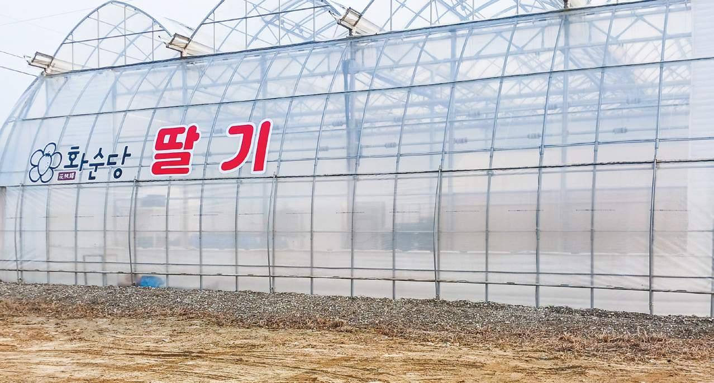<p class='img-caption'>▲ 우천면 양적리 딸기농장 화순당</p></figure><div class='article'></div></div></div><div class='slide' id='s14'><div class='slide-inner'><div class='page-tag' style='background:#00695C'><span class='section'>횡성이 좋아</span><span class='pgnum'>14 / 32</span></div><figure class='inline-photo'>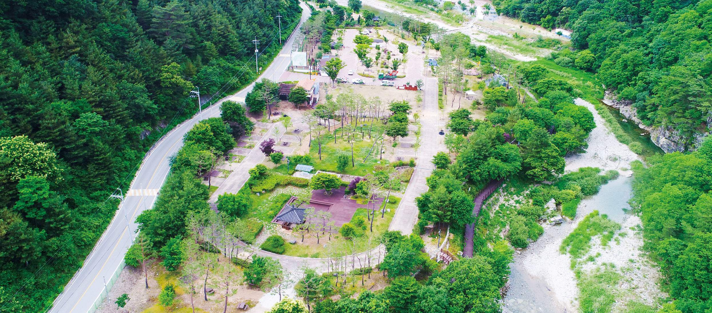</figure><div class='article'></div><p class='standalone-caption'>▲ 재개장 준비중인 병지방계곡 오토캠핑장</p><div class='article'><p style="color:#008256">숲·계곡·먹거리 다 잡았다! 가족 힐링 명소로 우뚝</p><h2 class='main-title' style="color:#057e54">청정 자연의 숨결!</h2><h2 class='main-title' style="color:#005d9e">병지방계곡</h2><p style="color:#008256">오토캠핑장 리모델링 활발, 오는 6월 재개장 예정 곤드레밥 등 토속음식 즐비, 가족단위 캠핑족 유혹 어답산 푸른 정기, 청정 계곡물, 울창한 숲의 조화 매력... 투명한 거울처럼 맑은 계곡 수(水)와 울창한 숲이 어우러진 갑천면 병지방계곡이 새로운 변화를 맞으며 가족 단위 캠핑족은 물론 오롯이 자연을 즐기려는 관광객에게 매력을 더하고 있다. ‘임금이 친히 밟아본 산’이란 뜻을 간직한 어답산에서 흘러내린 청정 1급수 계곡물이 굽이쳐 흐르는 이곳은 사계절 절경을 뽐내고, 특히 한여름에는 시원한 풍경을 만들어 내며 행인을 반긴다. 해발 768m의 어답산 줄기를 따라 이어진 계곡이 6㎞에 달한다. ‘자연조차 쉬고 가는 아름다운 곳’이라는 표현이 어울리는 명소다.</p></div><figure class='inline-photo'>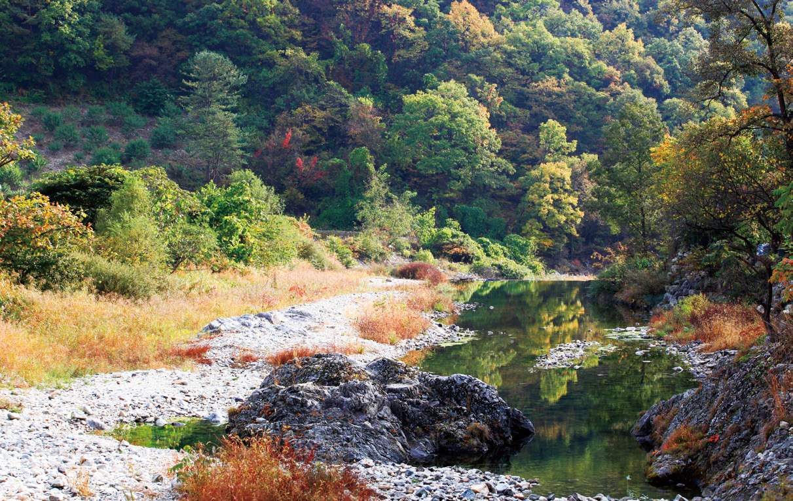</figure><div class='article'><p style="color:#008256">작은 바위 감싸며 흐르는 계곡물 명경지수(明鏡止水)... 기암괴석, 아름다운 풍경, 가족 단위 힐링족, 자연 향유 관광객 손짓! 이곳에 자리 잡은 오토캠핑장은 오는 6월 개장을 앞두고 쾌적한 환경을 관광객에게 제공하기 위해 리모델링이 한창이다. 오토캠핑장에서는 캠핑과 물놀이를 함께 즐길 수 있어 여름철 대표 피서지로 제격이다. 특히 크고 작은 바위를 감싸며 흐르는 계곡은 그 맑기가 명경지수와 같다. 계곡 주변에는 기암괴석과 들꽃이 어우 러져 아름다운 풍경을 만들어 낸다.</p></div><p class='standalone-caption'>▲ 숲과 물이 어우러진 병지방계곡</p><div class='article'></div></div></div><div class='slide' id='s15'><div class='slide-inner'><div class='page-tag' style='background:#00695C'><span class='section'>횡성이 좋아</span><span class='pgnum'>15 / 32</span></div><figure class='inline-photo'>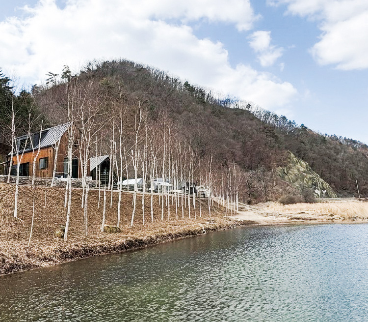</figure><div class='article'><p style="color:#008256">오토캠핑장 매력, 깊은 산속 고요 속 시골 낭만 만끽... 오토캠핑장의 하루 시설 이용료는 4인 기준 4만여 원으로 비교적 저렴 하다. 개수대와 샤워장 등 편의시설도 잘 갖춰져 있다. 성수기인 6~9월 에는 초기에 예약이 마감될 정도다. 이때는 물놀이와 캠핑을 즐기려는 방문객의 발길이 이어지면서 인근 식당가와 민박도 활기를 띤다. 주민 김순덕(72·갑천면 추동리)씨는 “캠핑철이 되면 음식점과 펜션이</p></div><p class='standalone-caption'>▲ 병지방계곡 맑은물</p><div class='article'><p>만원이라 지역경제에 도움이 된다”고 말했다.</p></div><div class='photo-grid g3'><figure class='photo-item'>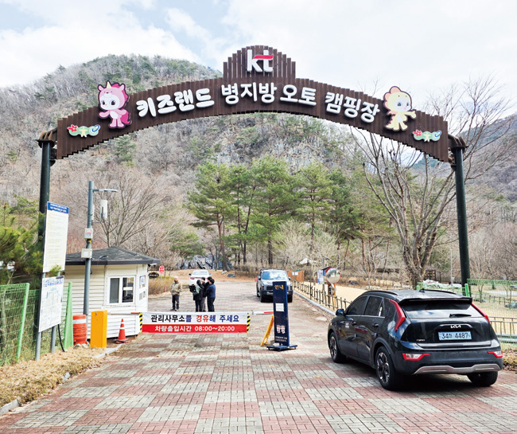</figure><figure class='photo-item'>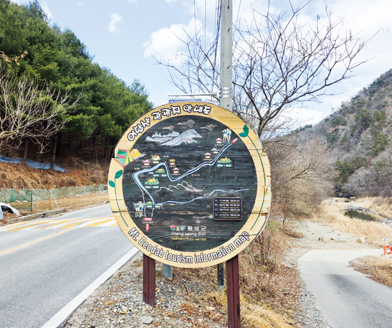</figure><figure class='photo-item'>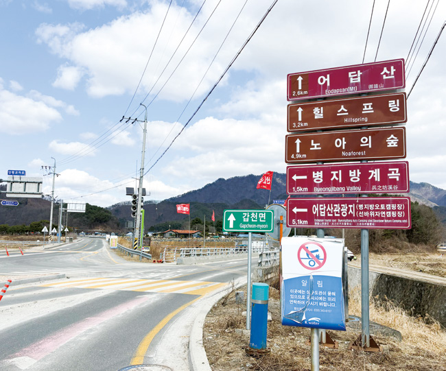<p class='img-caption'>▲ 병지방계곡 안내표지판 ▲ 병지방오토캠핑장입구 ▲ 어답산관광지 안내도</p></figure></div><div class='article'><p style="color:#008256">시골정취 물씬 풍기는 먹거리 풍성</p></div><figure class='inline-photo'>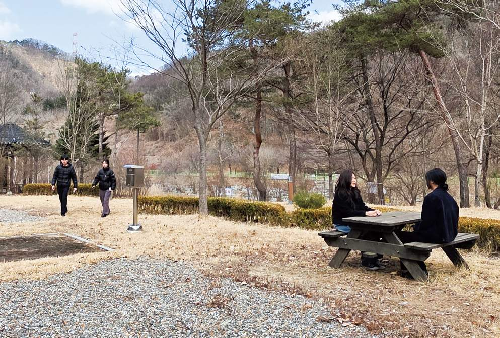</figure><div class='article'><p>시골에서 맛볼 수 있는 다양한 먹거리를 만날 수 있는 것도 특징이다. 계곡을 따라 올라가다 보면 곤드레밥을 판매하는 안내판이 눈에 띄고 순두부, 토종닭, 옥수수, 감자전, 메밀묵 등 병지방 만의 정취를 느낄 수 있는 토속음식점이 즐비하다. 계곡 입구에 횡성 귀농 귀촌 체험 공간으로 자리잡은 ‘횡성in’ 카페 에서는 더덕차, 곰취차, 강황분말 등 지역 특산품도 즐길 수 있다. 카페 에서 통창 너머로 넉넉한 논밭의 풍경을 보며 이야기를 나누는 관광객의</p></div><p class='standalone-caption'>▲ 자연을 즐기는 여유</p><div class='article'><p>모습도 눈에 띈다.</p></div><figure class='inline-photo'>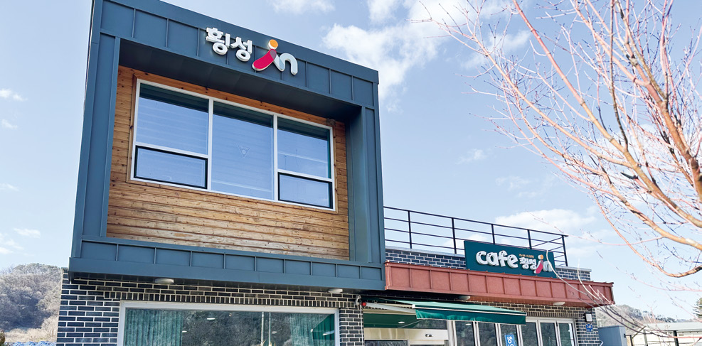</figure><div class='article'><p>힐링여행지로 손꼽히는 횡성 갑천면 병지방계곡은 중앙고속도로 횡성 IC를 지나 승용차로 20분 정도 이동하면 도착할 수 있다. 주변에 횡성 호수길을 돌아볼 수 있는 기회도 주어진다. 호수를 따라 이어진 둘레길 에서는 탁 트인 수변 풍경과 산책로가 있어 계곡을 찾은 관광객들이 함께 즐기기 좋은 코스다.</p></div><p class='standalone-caption'>▲ 농촌체험 공간 카페 횡성 인</p><div class='article'><p style="color:#595757">취재: 곽한비, 권훤, 김나연, 김은아(강원대 미디어커뮤니케이션학과)</p><div class='dept'>문의전화: 횡성문화관광재단 시설운영팀 <a href="tel:0338088228" class="tel-link">033-808-8228</a></div></div></div></div><div class='slide' id='s16'><div class='slide-inner'><div class='page-tag' style='background:#E65100'><span class='section'>횡성어때</span><span class='pgnum'>16 / 32</span></div><div class='article'><h2 class='main-title' style="color:#00635c">횡성에서 축제와 함께 행복 찾는다!</h2><p>올해 횡성군에서는 4월 18일 시작하는 제38회 횡성회다지소리민속문화제를 비롯해 6월 12일부터 3일 동안 갑천면 망향의동산 횡성호수길 5구간 일원에서 제7회 횡성호수길축제가 성대하게 열릴 예정이다. 이어 8월 14일부터 3일 동안 청정 고원지대 둔내면에서 제15회 둔내고랭지토마토축제가 열리고 8월 28일부터 3일간 제 4회 공근소(牛)맥 축제가 횡성베이스볼파크 일대에서 개최된다. 또 9월 11일부터 3일간 제13회 횡성더덕축제가 청일면 행정복지센터 및 시가지 일원에서 열릴 계획이고, 늦가을을 맞아 10월 2일부터 4일까지는 안흥찐빵모락모락마을 일원에서 제18회 안흥찐빵축제가 개최된다. 특히 횡성의 대표 축제이자 전국적인 횡성한우 매니아들이 대거 몰려드는 제22회 횡성한우축제가 10월 7일부터 11일 까지 5일간 횡성 섬강 둔치 일원에서 구이터를 비롯한 즐거운 공연, 다양한 볼거리로 관광객과 군민을 맞이할 예정이다. 이밖에도 10월 17일부터 2일간 강림면 강림리 노구사당 일원에서는 제7회 태종노구문화제가 개최되고, 10월 31일 부터 11월 1일까지 이틀간 제17회 횡성평생학습축제가 횡성문화체육공원 일원에서 열린다.</p><h2 class='main-title' style="color:#00635c">2026년 각 축제별 일정 및 주요 내용</h2><h3 class='sub-title'>제38회 횡성회다지소리민속문화제제7회 횡성호수길축제</h3><p>4월 18일~19일 6월 12일 ~ 14일(3일간)</p></div><p class='standalone-caption'>기       간</p><p class='standalone-caption'>기       간</p><div class='article'><p>우천면 정금민속관 일원 망향의동산(횡성호수길 5구간 일원)</p></div><p class='standalone-caption'>장       소</p><p class='standalone-caption'>장       소</p><div class='article'><p>횡성회다지소리 민속문화제 위원회 횡성호수길축제위원회</p></div><p class='standalone-caption'>주       최</p><p class='standalone-caption'>주       최</p><div class='article'><p>호수길 걷기 행사, 체험, 다양한 먹거리 판매 등</p></div><p class='standalone-caption'>주요내용</p><div class='article'><p>횡성회다지소리 원형공개 공연, 타지역 무형유산 공연, 전통민속예술 관련 공연 (횡성어러리, 원주어리랑 등)</p></div><p class='standalone-caption'>주요내용</p><div class='article'></div></div></div><div class='slide' id='s17'><div class='slide-inner'><div class='page-tag' style='background:#E65100'><span class='section'>횡성어때</span><span class='pgnum'>17 / 32</span></div><div class='article'><h3 class='sub-title'>제15회 둔내고랭지토마토축제제4회 공근소(牛)맥 축제</h3><p>8월 28일 ~ 30일(3일간) 8월 14일 ~ 16일(3일간)</p></div><p class='standalone-caption'>기       간</p><p class='standalone-caption'>기       간</p><div class='article'><p>둔내종합체육공원 일원 횡성베이스볼파크 일대(축구장)</p></div><p class='standalone-caption'>장       소</p><p class='standalone-caption'>장       소</p><div class='article'><p>공근소맥축제위원회 둔내고랭지토마토축제위원회</p></div><p class='standalone-caption'>주       최</p><p class='standalone-caption'>주       최</p><div class='article'><p>개막식, 축하공연, 이벤트, 다양한 먹거리 판매 등 개막식, 축하공연, 각종 단체 공연, 이벤트, 다양한 먹거리 판매 등</p></div><p class='standalone-caption'>주요내용</p><p class='standalone-caption'>주요내용</p><div class='article'><h3 class='sub-title'>제13회 횡성더덕축제제18회 안흥찐빵축제</h3><p>9월 11일 ~ 13일(3일간) 10월 2일 ~ 4일(3일간)</p></div><p class='standalone-caption'>기       간</p><p class='standalone-caption'>기       간</p><div class='article'><p>안흥찐빵모락모락마을 일원 (안흥면 주천강로 1868) 청일면 행정복지센터 및 시가지 일원 (유동리 855-2)* 변동가능</p></div><p class='standalone-caption'>장       소</p><p class='standalone-caption'>장       소</p><div class='article'><p>횡성더덕축제위원회 안흥찐빵축제위원회</p></div><p class='standalone-caption'>주       최</p><p class='standalone-caption'>주       최</p><div class='article'><p>개막식 및 특별공연, 체험프로그램, 더덕판매 등</p></div><p class='standalone-caption'>주요내용</p><p class='standalone-caption'>주요내용</p><div class='article'><p>개막식, 축하공연, 이벤트, 토속 먹거리 및 지역농산물 판매 등</p><h3 class='sub-title'>제22회 횡성한우축제제7회 태종노구문화제</h3><p>10월 7일 ~ 11일(5일간) 10월 17일 ~ 18일(2일간)</p></div><p class='standalone-caption'>기       간</p><p class='standalone-caption'>기       간</p><div class='article'><p>강림면 강림리 노구사당 일원 횡성 섬강 둔치 일원(횡성읍 북천리 221)</p></div><p class='standalone-caption'>장       소</p><p class='standalone-caption'>장       소</p><div class='article'><p>태종노구문화제위원회 횡성군</p></div><p class='standalone-caption'>주       최</p><p class='standalone-caption'>주       최</p><div class='article'><p>횡성문화관광재단 왕의 행렬, 트레킹(왕의길, 스승의길), 민속문화 전시·체험 등</p></div><p class='standalone-caption'>주       관</p><p class='standalone-caption'>주요내용</p><div class='article'><p>개막식, 축하공연, 구이터 및 판매장 운영, 다양한 먹거리 등</p></div><p class='standalone-caption'>주요내용</p><div class='article'><h3 class='sub-title'>제17회 횡성평생학습축제</h3><p>10월 31일 ~ 11월 1일(2일간)</p></div><p class='standalone-caption'>기       간</p><div class='article'><p>횡성문화체육공원 일원</p></div><p class='standalone-caption'>장       소</p><div class='article'><p>평생학습 홍보체험관 운영, 동아리공연, 청소년경연대회 등</p></div><p class='standalone-caption'>주요내용</p><div class='article'></div></div></div><div class='slide' id='s18'><div class='slide-inner'><div class='page-tag' style='background:#33691E'><span class='section'>기획2</span><span class='pgnum'>18 / 32</span></div><figure class='inline-photo'>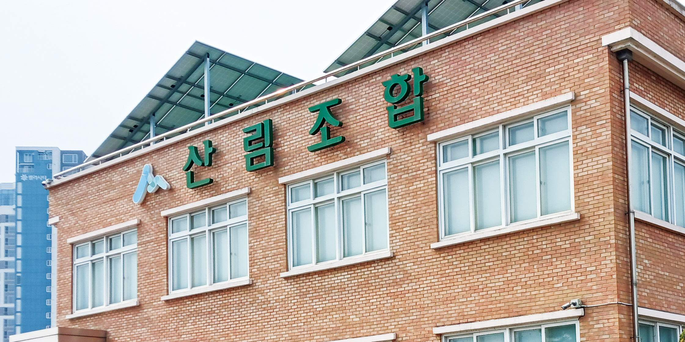</figure><div class='article'><h2 class='main-title' style="color:#35721e">지속 가능 횡성 산림(山林)</h2><h2 class='main-title' style="color:#35721e">가꾸는 ‘횡성군산림조합’</h2><h4 class='lead' style="color:#549943">횡성군은 산림이 풍부한 지역이다. 청정 자연환경을 보존하면서도 우수한 자원을 활용해 새로운</h4><h4 class='lead' style="color:#549943">가치를 창출해야 하는 과제도 동시에 안고 있다. 이러한 환경에서 횡성의 산림을 보살피며 산주는</h4><h4 class='lead' style="color:#549943">물론 지역 주민과 적극 소통하고 있는 횡성군산림조합을 찾아보았다.</h4><p>횡성군산림조합은 단순히 산림을 관리하는 차원을 넘어 산주와 지역 주민이 함께 성장하도록 돕는데 열정을 쏟고 있다. 25년 말 기준 조합원 3천381명, 준조합원 1천950명이 가입돼 있는 기관이다. 지역 산림의 지속가능한 관리와 임업인의 실질적인 소득향상을 위해 다양한 산림사업을 수행한다. 특히 최근에는 지자체와 협력해 사유림 관리와 산림사업의 전문성을 높이고 있다. 조합원과 산주 위한 서비스, 산림경영 지도, 컨설팅 등 서비스 나무시장 운영, 주민에게 조림용 묘목, 조경수 등 저렴 판매</p></div><figure class='inline-photo'>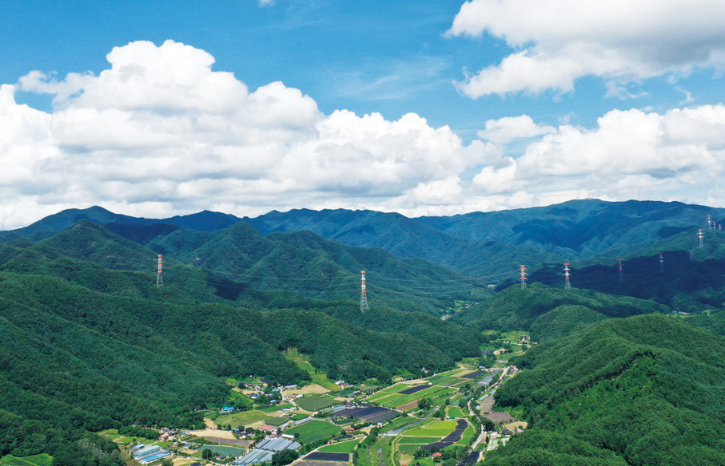</figure><div class='article'><p>산림경영지도원들이 산림경영계획 수립은 물론 조림과 숲가꾸기 기술 지도, 임산물 재배 상담, 각종 산림 관련 인허가, 정부 산림사업 신청 지원 등 산주 맞춤형 상담과 기술지도를 제공한다. 또 산나물과 버섯, 산양삼 등 임산물 재배 상담과 임산물 생산기술 교육, 임산물 유통 및 판매 지원, 산림복합경영 컨설팅 등을 통해 산주들이 단순</p></div><p class='standalone-caption'>▲ 선도단지 전경</p><div class='article'><p>목재 생산을 넘어 지속적인 임업소득을 창출할 수 있도록 돕는다.</p></div><figure class='inline-photo'>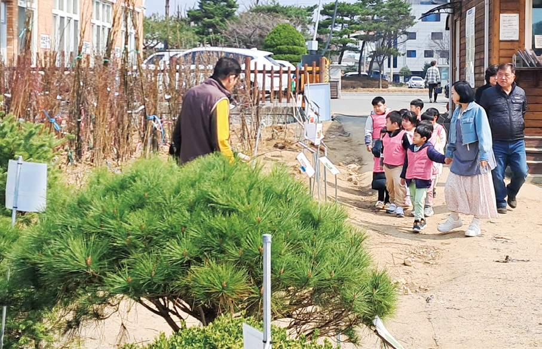</figure><div class='article'><p>아울러 나무시장 운영으로 지역 주민들에게 조림용 묘목과 비료, 조경수 등을 저렴하게 판매해 산림경영 비용도 줄여준다. 이뿐만이 아니다. 조림과 숲 가꾸기 등에 대한 지원으로 설계 감리 시공 발주를 통한 관리감독 등을 진행하기도 하며 임도와 벌채, 사방공사 등 산주가 직접 하기 어려운 것들을 전문인력과 장비를 활용, 산림경영의 품질을 높이고 있다.</p></div><p class='standalone-caption'>▲ 나무시장</p><div class='article'></div></div></div><div class='slide' id='s19'><div class='slide-inner'><div class='page-tag' style='background:#33691E'><span class='section'>기획2</span><span class='pgnum'>19 / 32</span></div><div class='article'><h3 class='sub-title' style="color:#245323">금융 살찌우고, 횡성IC 인근 복합 산림경영신(新) 비즈니스 모델 구축!</h3></div><figure class='inline-photo'></figure><div class='article'><p>주목할 점은 최근 횡성IC 주변 사유림을 매입해 벌채를 실시했고, 이곳에 2026년 상반기까지 약 40ha 고로쇠나무를 식재할 예정이다. 앞으로 7~8년 후 전국에서 손꼽히는 고로쇠 단지로의 성장이 기대된다. 이곳을 지역 주민의 휴식 공간이자 가을철 단풍으로 물들여 횡성의 랜드마크로 발전시켜 복합 산림경영의 새로운 비즈 니스 모델로 선보인다는 계획이다.</p></div><p class='standalone-caption'>▲ 사방사업</p><figure class='inline-photo'></figure><div class='article'><p>이 밖에도 청일 선도산림경영단지 운영으로 산림의 가치를 높이는 한편, 조림과 숲가꾸기 등 다양한 일도 수행한다. 나아가 예탁금과 적금은 물론 대출 등 기본 금융서비스를 제공한다. 이를 통해 지역 자금을 지역에 환원하는 금융기관의 역할도 수행한다. 또한 조합원의 산림경영과 임업활동에 필요한 정책자금 지원을 통해 임업인의 안정적인 소득 기반 마련에도 힘쓰고</p></div><p class='standalone-caption'>▲ 벌채사업</p><div class='article'><p>있다. 건전한 자금 운용과 철저한 리스크관리를 통해 지역 대표 금융기관으로 역할을</p></div><figure class='inline-photo'></figure><div class='article'><p>다한다. 한편 지역사회와 함께하는 산림조합 역할도 다한다. 어려운 이웃을 돕는 성금 전달과 지역 인재 육성을 위한 장학금 지원, 산불 예방 활동 등을 활발히 펼친다. 이 모든 것은 양재관 조합장을 비롯한 임원 9명과 직원 16명이 도맡아 진행하고 있다.</p></div><p class='standalone-caption'>▲ 산불예방 캠페인</p><figure class='inline-photo'></figure><div class='article'><h3 class='sub-title'>조합장 한마디“지역 주민과 조합원 모두에유익한 조합이 되겠습니다”</h3><blockquote>“그동안 내실 있는 운영으로 2014년 자산 42,404천원에서 2025년 말</blockquote><p>125,588천원으로 약 3배의 자산이 형성됐습니다. 올해는 출자배당 5.1%를 배당하는 등 조합원과 지역주민의 적극적인 지원과 애정으로 조합이 더욱 튼실해지고 있습니다. 앞으로 횡성군산림조합은 변화의 길목에서도 흔들림 없는 뿌리 깊은 나무처럼 조합원과 지역 주민이 함께 상생하는 길을 열심히 개척해나가겠습니다.”</p></div><p class='standalone-caption'>▲ 양재관(횡성군산림조합장)</p><div class='article'></div></div></div><div class='slide' id='s20'><div class='slide-inner'><div class='page-tag' style='background:#795548'><span class='section'>전문가 기고</span><span class='pgnum'>20 / 32</span></div><div class='article'></div><figure class='inline-photo'></figure><div class='article'><h2 class='main-title' style="color:#18426d">잊혀가는</h2><h2 class='main-title' style="color:#deac00">기념비</h2><h2 class='main-title'>기념비를 기억하라!</h2><h3 class='sub-title' style="color:#12416b">참봉염공영철기념비(參奉廉公榮鐵記念碑)</h3><p style="color:#12416b">각골난망(刻骨難忘)이란 말이 있다. 남에게 입은 은혜가 뼈에 새길 만큼 커서 잊을 수 없다는 말이다. 이와 반대되는 말이 남에게 입은 은덕을 저버린다는 배은망덕(背恩忘德)이다. 사람이라면 은혜를 입었을 때 고마운 마음을 오래 새기는 것이 마땅하다. 그러지 못한 사람은 배은망덕한 사람이라 하여 지탄받는다. 사람들은 오래전부터 은혜를 잊지 않겠다는 다짐으로 고마운 마음을 돌에 새겨 기념비로 남기는 일이 많았다. 이러한 기념비는 전국 어디에서나 흔히 볼 수 있는데, 횡성에도 이러한 기념비가 곳곳에 있지만 더러는 무관심하게 낡아가며 돌에 새긴 글씨조차 흐려지고 있다. 잊지 않겠다고 세운 기념비도 오랜 세월이 흐르고, 시대가 바뀌면서 기억 속에서 사라지고 있다. 이러다가 언젠가는 기념비가 있다는 사실조차 잊게 되는 것은 아닐까.</p></div><figure class='inline-photo'></figure><div class='article'><p>비석은 우리 주변에서 흔하게 볼 수 있다. 대표적으로 묘지 앞에 세우는 비석이다. 묘지석에는 주로 고인의 생몰연대, 가족관계 등을 새기는데 더러는 고인에 대한 경력이나 일생을 상징하는 말 따위를 묘비명으로 새기기도 한다. 묘지가 아닌 곳에 세우는 비는 공덕비, 기념비 등이 있다. 공덕비나 기념비는 그 사연도 다양해서 그만큼 종류도 많다. 공통점은 공덕을 기리든 어떤 일을 기념하든 오래 잊지 않겠다는 의지를 담고 있다. 횡성에서 본 대표적인 공덕비는 횡성읍 마산리 앞들에 있는 ‘구일 현감 공덕비’다. 조선시대 구일이라는 횡성 현감이 농사를 위한 관개수로를 만들어 농사에 큰 도움을 주었다 해서 그 공덕을 기리는 비다. 그때 만든 관개수로는 아직도 남아 있지만 구일 현감 공덕비를 기억하는 사람들은 많지 않은 듯하다. 공덕비 중에는 벼슬아치들이 백성들을 위해 선정을 베풀었다는 이유로 세운 것이 많다. 벼슬아치라면 마땅이 백성을 위해 선정을 베풀어야 하니 굳이 공덕비로 칭송할 이유가 없다. 그래서 벼슬 아치에 대한 공덕비는 대개 큰 감동이 없고, 비는 있어도 이를 기억하는</p></div><p class='standalone-caption'>▲ 참봉염공영철기념비(앞면)</p><div class='article'><p>사람이 많지도 않다.</p></div></div></div><div class='slide' id='s21'><div class='slide-inner'><div class='page-tag' style='background:#795548'><span class='section'>전문가 기고</span><span class='pgnum'>21 / 32</span></div><div class='article'><p>횡성읍 곡교리 먹거리단지 대가막국수 앞마당에 우연히 비석을</p></div><figure class='inline-photo'></figure><div class='article'><p>하나 보았는데 내용을 보니 매우 독특한 사연이 있는 기념비였다. 기념비 앞에 새긴 글은 <참봉염공영철기념비(參奉廉公榮鐵記 念碑)>. 참봉이라는 벼슬을 한 염영철 공의 공적을 기리는 기념비 라는 뜻이다. 기념비 뒷면에는 4자 성구 형태로 당시 처참했던 홍수와 염영철 이라는 사람의 선행이 기록되어 있는데 내용을 풀어보면 이러 하다. 粵在丙子 (월재병자) 지난 병자년(1936년)에 洪水滔天 (홍수도천) 홍수가 하늘에 닿을 듯 넘쳐나 無麥無禾 (무맥무화) 보리도 벼도 남지 않았네 荒飢之年 (황기지년) 거칠고 굶주린 흉년이 되었을 때 賴公捐金 (뇌공연금) 공(염영철)이 재물을 내어주어 救我貧民 (구아빈민) 우리 가난한 백성들을 구제했으니 萬口成碑 (만구성비) 만 사람의 입이 비석이 되어 咸頌其恩 (함송기은) 함께 그 은혜를 기리네.</p></div><p class='standalone-caption'>▲ 참봉염공영철 기념비(뒷면)</p><div class='article'><p>이 비석을 세운 때는 정축년 구월(丁丑九月), 대홍수가 난 이듬해인 1937년이다. 기록에 의하면 1936년 병자년 대홍수는 횡성뿐만 아니라 한반도 전체에 엄청난 피해를 주었다. 농사가 생계수단의 대부분이었던 사회라 벼와 보리가 모두 쓸려 내려갔으니 당시 주민들이 겪었을 생존의 위협은 대단했을 것이다. 이런 국가적 재난 상황에서 참봉 염영철이라는 사람이 주민을 위해 사재를 털었다. 참봉이란 벼슬은 조선시대와 대한 제국 시기 종9품 관직으로 요즘 9급 공무원에 해당한다. 구한말과 일제강점기에는 지역에서 덕망 있는 유지나 학식 있는 인물에게 주어지는 명예로운 호칭으로 통용되기도 했다고 한다. 비석 내용 중 ‘만구성비(萬口成碑)’는 “수많은 사람의 입(칭송)이 모여 비석을 이루었다”는 뜻이니 단순히 돌에 글을 새긴 것이 아니라 마을 사람들의 고마운 마음이 모여 이 비석을 만들었다는 점을 강조하고 있다. 대가막국수 이윤희 대표는 기념비 옆에 있는 집이 참봉 염영철 공의 집이며 지금도 그의 며느리가 살고 있다고 한다. 오래 잊지 않고자 세운 기념비. 염공의 은혜를 입은 사람들이 적지 않을 터인데 이를 기억하는 사람은 얼마나 될 것인가.</p></div><figure class='inline-photo'><p class='img-caption'>▲ 염영철 자택. 그의 며느리가 여기 살고 있다</p></figure><div class='article'></div></div></div><div class='slide' id='s22'><div class='slide-inner'><div class='page-tag' style='background:#1B5E20'><span class='section'>읍면소식</span><span class='pgnum'>22 / 32</span></div><p class='standalone-caption'>T o w n s h i p  n e w s</p><div class='article'><h2 class='main-title' style="color:#1978bf">읍면소식</h2><h4 class='lead'>횡성읍</h4></div><div class='photo-grid g2'><figure class='photo-item'></figure><figure class='photo-item'></figure></div><div class='article'><h4 class='lead' style="color:#0e69af">2026 횡성읍 찾아가는</h4><h4 class='lead' style="color:#0e69af">보건복지 서비스 활성화</h4><h4 class='lead' style="color:#0e69af">제4회 횡성읍</h4><h4 class='lead' style="color:#0e69af">어르신 한궁대회 열어...</h4><p>(사)대한노인회 횡성읍분회(분회장 정윤석)는 3월 11일 횡성실내체육관에서 어르신들의 건강 증진과 활기찬 여가생활 도모, 각 경로당 간 돈독한 친목과 화합을 위한 ‘제4회 횡성읍 어르신 한궁대회’를 개최했다. 횡성읍행정복지센터는 3월 9일 지역 내 주요 복지 기관 및 단체장들이 참석한 가운데 ‘찾아가는 보건 복지 서비스 활성화’를 위한 HSN(횡성사회복지 기관·단체장) 1분기 간담회를 개최하고  민관 협력 체계를 공고히 했다.</p><h4 class='lead'>우천면</h4></div><div class='photo-grid g2'><figure class='photo-item'></figure><figure class='photo-item'></figure></div><div class='article'><h4 class='lead' style="color:#0e69af">우천청소년문화의집</h4><h4 class='lead' style="color:#0e69af">‘수지애 딸기’농장 체험</h4><h4 class='lead' style="color:#0e69af">동횡성농협 농가주부모임연합회</h4><h4 class='lead' style="color:#0e69af">된장담그기 행사</h4><p>동횡성농협 농가주부모임연합회(회장 변상윤)는 3월 12일 우천면 문화체육센터에서 지난해 담근 된장을 지역 독거어르신 및 취약농가 100여명 에게 전달하고, 2027년 전달할 사랑의 된장 담그기 행사를 진행했다. 새로 개관한 우천청소년문화의집은 첫 주말 활동 으로 3월 14일, 관내 청소년 30명과 함께 우천면 양적리에 위치한 ‘수지애딸기’ 농장을 방문해 ‘딸기 한 가득’ 체험 프로그램을 운영했다.</p><h4 class='lead'>안흥면</h4></div><div class='photo-grid g2'><figure class='photo-item'></figure><figure class='photo-item'></figure></div><div class='article'><h4 class='lead' style="color:#0e69af">안흥면지역사회보장협의체</h4><h4 class='lead' style="color:#0e69af">‘사랑의 봄동’ 나눠...</h4><h4 class='lead' style="color:#0e69af">제2회 안흥면</h4><h4 class='lead' style="color:#0e69af">어르신 한궁대회 개최...</h4><p>안흥면지역사회보장협의체(위원장 이금연)는 3월 9일과 10일 이틀간 안흥면다목적센터에서 지역내 취약계층을 위한 사랑의 봄동 나눔행사를 추진하고 새봄의 온기를 이웃과 함께 나누었다. (사)대한노인회 안흥면분회(분회장 김세만)는 3월 17일 안흥면 다목적센터에서 안흥면 내 16개 경로당 선수단 및 지역어르신 200여명이 참석한 가운데 ‘제2회 안흥면 어르신 한궁대회’를 개최했다.</p></div></div></div><div class='slide' id='s23'><div class='slide-inner'><div class='page-tag' style='background:#1B5E20'><span class='section'>읍면소식</span><span class='pgnum'>23 / 32</span></div><div class='article'><div class='dept'>우리 마을의 다양한 소식을 전하고 싶은 분은 ‘행복 담은 횡성’ 편집실(<a href="tel:0333402036" class="tel-link">033-340-2036</a>)로 연락주세요</div><h4 class='lead'>둔내면</h4></div><div class='photo-grid g2'><figure class='photo-item'></figure><figure class='photo-item'></figure></div><div class='article'><h4 class='lead' style="color:#0e69af">제3회 둔내면</h4><h4 class='lead' style="color:#0e69af">어르신 한궁대회 개최!</h4><h4 class='lead' style="color:#0e69af">둔내면장학회 2026년</h4><h4 class='lead' style="color:#0e69af">둔내면 장학금 수여</h4><p>(사)대한노인회 둔내면분회(분회장 김규성)는 3월 6일 둔내복합체육센터에서 둔내면 각 경로당 회원 및 지역 어르신을 대상으로 돈독한 친목과 화합을 위한 ‘제3회 둔내면 어르신 한궁대회’를 개최했다. 둔내면장학회(이사장 김인덕)는 3월 13일 둔내농협 대회의실에서 ‘2026년도 둔내면 장학회 장학금 수여식’을 갖고 지역 학생 14명과 2개 기관에 총 1천640만원의 장학금 및 후원금을 전달했다.</p><h4 class='lead'>갑천면</h4></div><div class='photo-grid g2'><figure class='photo-item'></figure><figure class='photo-item'></figure></div><div class='article'><h4 class='lead' style="color:#0e69af">갑천면자원봉사협의회 봄맞이</h4><h4 class='lead' style="color:#0e69af">쌀국수, 식품꾸러미 나눠</h4><h4 class='lead' style="color:#0e69af">갑천면새마을부녀회</h4><h4 class='lead' style="color:#0e69af">헌옷 수거 봉사활동 펼쳐</h4><p>갑천면새마을부녀회(회장 이용표)는 3월 9일 갑천면행정복지센터에서 지역 복지사업과 마을 공동체 활동 일환으로 19개 마을에서 재활용이 가능한 헌옷 수거 봉사활동을 벌였다. 갑천면자원봉사협의회(회장 이용표)는 3월 4일 지역 내 어르신과 취약계층 가구를 위한 봄맞이 쌀국수 및 식품꾸러미 나눔 봉사활동을 실시하고 이웃과 함께 살아가는 문화를 만들었다.</p><h4 class='lead'>청일면</h4></div><div class='photo-grid g2'><figure class='photo-item'></figure><figure class='photo-item'></figure></div><div class='article'><h4 class='lead' style="color:#0e69af">청일은빛대학 2026년</h4><h4 class='lead' style="color:#0e69af">개강과 함께 힘찬 출발!</h4><h4 class='lead' style="color:#0e69af">청일면건강위원회</h4><h4 class='lead' style="color:#0e69af">봄맞이 월례 걷기 행사 개최</h4><p>청일면건강위원회(위원장 권순화)는 3월 18일 위원회 위원들과 마을 주민 등 70여 명이 참여해 갑천 호수길에서 지역 주민들의 건강 증진과 화합을 위한 ‘3월 월례 걷기 행사’를 열었다. 청일은빛대학(학장 원상윤)은 3월 17일 청일다목적 복지체육센터에서 은빛대학을 열고 문계종 강사의 특강과 미술, 운동수업 등 어르신들의 신체 건강, 교양 및 취미 등 프로그램을 운영했다.</p></div></div></div><div class='slide' id='s24'><div class='slide-inner'><div class='page-tag' style='background:#1B5E20'><span class='section'>읍면소식</span><span class='pgnum'>24 / 32</span></div><p class='standalone-caption'>T o w n s h i p  n e w s</p><div class='article'><h2 class='main-title' style="color:#1978bf">읍면소식</h2><h4 class='lead'>공근면</h4></div><div class='photo-grid g2'><figure class='photo-item'></figure><figure class='photo-item'></figure></div><div class='article'><h4 class='lead' style="color:#0e69af">공근면지역사회보장협의체</h4><h4 class='lead' style="color:#0e69af">‘따스한 온기’ 반찬 전달</h4><h4 class='lead' style="color:#0e69af">공근면자율방재단</h4><h4 class='lead' style="color:#0e69af">산불예방 캠페인 펼쳐...</h4><p>공근면자율방재단(단장 이평문)은 3월 11일 공근면 칠봉산 및 행정복지센터일원에서 봄철 산불조심 기간을 맞아 산불예방 캠페인을 벌이며 산불에 대한 경각심과 예방에 총력을 다하고 있다. 공근면지역사회보장협의체는 식사 해결에 어려움을 겪는 취약계층을 위해 3월 10일 협의체 위원들이 정성껏 준비한 신선한 밑반찬을 각 가정에 전달하는 ‘따스한 온기! 반찬 지원’을 진행했다.</p><h4 class='lead'>서원면</h4></div><div class='photo-grid g2'><figure class='photo-item'></figure><figure class='photo-item'></figure></div><div class='article'><h4 class='lead' style="color:#0e69af">서원면문화체육회</h4><h4 class='lead' style="color:#0e69af">서원면게이트볼대회 개최</h4><h4 class='lead' style="color:#0e69af">서원은빛대학 행복한 출발!</h4><h4 class='lead' style="color:#0e69af">개강식 열어...</h4><p>서원은빛대학(학장 김경도)은 3월 12일 서원면 문화복지센터에서 서원은빛대학 개강식을 열고 2026년 서원면 어르신들의 건강한 생활과 즐거운 노년을 위해 유익한 정보 제공과 다양한 프로그램을 제공하기로 했다. 서원면문화체육회(회장 김영동)은 3월 19일 석화 2리 게이트볼장에서 지역 주민들이 함께한 가운데 서원면게이트볼대회를 개최하고 건강한 서원면 만들기와 주민화합을 다졌다.</p><h4 class='lead'>강림면</h4></div><div class='photo-grid g2'><figure class='photo-item'></figure><figure class='photo-item'></figure></div><div class='article'><h4 class='lead' style="color:#0e69af">제7회 태종노구문화제 주제 공모전 진행</h4><h4 class='lead' style="color:#0e69af">강림 산불 취약 의료기관</h4><h4 class='lead' style="color:#0e69af">대비 합동훈련 실시</h4><p>강림면 태종노구문화제추진위원회(위원장 서형은)가 축제의 정체성을 확립하고 지역의 역사적 가치를 알리기 위해 ‘제7회 태종노구문화제 주제 공모전’을 개최하고 있다. 횡성군보건소는 3월 9일 산림인접 의료기관인 강림면 청강요양병원에서 횡성소방서 우천119 안전센터 강림지역대, 군청 관련부서 관계자 등과 산불발생 상황을 가정한 실전훈련을 진행했다.</p></div></div></div><div class='slide' id='s25'><div class='slide-inner'><div class='page-tag' style='background:#283593'><span class='section'>의회소식</span><span class='pgnum'>25 / 32</span></div><p class='standalone-caption'>A s s e m b l y  N e w s</p><div class='article'><h2 class='main-title' style="color:#323333">의정소식</h2><h2 class='main-title' style="color:#8b0c02">횡성군의회 제334회 임시회 성료</h2></div><figure class='inline-photo'><p class='img-caption'>▲ 제334회 횡성군의회 임시회 제1차 본회의</p></figure><div class='article'><h4 class='lead' style="color:#8b0c02">행복(반값) 임업자재 지원, 다함께돌봄센터 민간위탁 동의안 등 주요 안건 처리</h4><p>횡성군의회는 지난 3월 23일부터 3월 31일까지 9일간의 일정으로 ‘제334회 횡성군의회 임시회’를 운영했다. 회기 첫날인 23일에는 제1차 본회의를 개의하고 ‘횡성군 다함께돌봄센터 관리·운영 민간위탁 동의안’, ‘행복(반값) 임업용자재 지원사업 민간위탁 동의안’ 등 주요 안건을 심의했다. 이어 제1차 공유재산관리계획심사특별위원회를 열어 ‘2026년도 제1회 수시분 공유재산관리계획안’을 면밀히 심사했다.</p><h4 class='lead' style="color:#8b0c02">경제·복지·미래산업 관련 민생 조례 심의 및 2026년도 제1회 추경 예산안 의결</h4><p>24일에는 제1차 조례규칙심사특별위원회를 통해 군민의 삶의 질 향상과 직결된 다양한 조례안을 심사했다. 주요 안건 으로는 ▲횡성군 4·1만세운동 기념 및 계승에 관한 조례안 ▲횡성군 사회적 고립가구 지원 및 고독사 예방 조례 일부개정조례안 ▲횡성군 향교 지원 및 육성에 관한 조례안 ▲횡성군 결혼친화환경 조성에 관한 조례안 ▲횡성군 자연보호운동 단체 육성 및 지원에 관한 조례안 등이 다뤄졌다. 또한 ▲횡성군 산지전용허가기준 조례안 ▲횡성군 노인 목욕비 및 이·미용비 지원 조례 일부개정조례안 ▲횡성군 공설장사시설 설치 및 운영 조례 일부개정조례안 ▲횡성군 신에너지 및 재생에너지 개발이익 공유 등에 관한 조례안 ▲횡성군 소상공인 지원에 관한 조례 전부개정 조례안 ▲횡성사랑상품권 이용 활성화에 관한 조례 일부개정 조례안 ▲횡성군 관광시설 관리 및 운영 조례 일부개정조례안 ▲횡성군 출산장려 등 지원에 관한 조례 전부개정조례안</p></div><p class='standalone-caption'>▲횡성군 기금 관리 기본 조례 일부개정조례안 ▲횡성형 행복소득 기본 조례안 ▲횡성군 스마트도시 조성 및 관리·운영</p><div class='article'><p>조례안 등을 심사했다. 이어 26일부터 30일까지는 예산결산특별위원회를 통해 ‘2026년도 제1회 추가경정 일반 및 특별회계 세입·세출 예산안’ 및 ‘기금운용변경계획안’을 심도 있게 살폈다. 회기 마지막 날인 31일에는 제2차 본회의를 개의하고 각 특별위원회에서 심사한 안건들을 최종 의결했다. 아울러 ‘2025회계연도 결산검사위원 선임안’ 등을 처리하며 횡성군의회 제334회 임시회 일정을 모두 마무리했다.</p><div class='dept'>문의전화: 횡성군의회 의회사무과 의정팀 <a href="tel:0333407617" class="tel-link">033-340-7617</a></div></div></div></div><div class='slide' id='s26'><div class='slide-inner'><div class='page-tag' style='background:#5D4037'><span class='section'>횡성어때</span><span class='pgnum'>26 / 32</span></div><div class='article'><p style="color:#336666">이병곤 | 횡성군노인회장</p></div><figure class='inline-photo'></figure><div class='article'><h2 class='main-title' style="color:#1e655c">변화와 혁신!</h2><h2 class='main-title' style="color:#1e655c">횡성군노인회</h2><h2 class='main-title' style="color:#1e655c">이병곤 새 지회장</h2><h2 class='main-title' style="color:#1e655c">힘찬 출발!</h2><h3 class='sub-title' style="color:#336666">“어르신 건강, 문화, 일자리, 소통 두루 챙길터...”</h3><p>감시단을 운영해 산림 비중이 높은 횡성의 푸른 산과</p></div><figure class='inline-photo'></figure><div class='article'><p>자연을 안전하게 지켜나가겠다는 생각이다. 아울러 어르신들의 횡성군 자매도시에 대한 해외문화탐방도 계획하고 있다. 이를 통해 견문을 넓히고 글로벌 안목을 향상할 예정이다. 여기에 그치지 않고 노인 건강 증진을 위한 활동으로 ‘노인 건강 증진의 날’을 운영할 계획이다. 건강달리기를 비롯해 어르신 효잔치 프로그램도 더욱 풍성하고 즐겁게</p></div><p class='standalone-caption'>▲ 대한노인회 횡성군지회 캠페인</p><div class='article'><p>운영하겠다고 한다. 옛 시절 정겨웠던 놀이 등을 넣어 추억을 살린 행복 생활을 영위토록 할 방침이다. (사)대한노인회 횡성군지회(이하 횡성군노인회) 새 지회장에 이병곤 횡성문화원 부원장이 당선돼 4월 1일부터 새로운 또 어르신들의 의료비 경감을 위해 횡성과 원주 등 주요 출발을 하게 됐다. 병원들과 협력, 15~20% 정도 의료비 할인을 추진하고 있다. 소통도 강화해 횡성군과 횡성군의회 등과 연간 횡성에서 65세 이상 노인 인구가 차지하는 비율은 상·하반기 간담회를 여는 등 횡성군 노인들의 위상을 39.6%(2026년 2월 현재 기준)로 높다. 이들에 대한 높여나가겠다는 전략이다. 권익옹호는 물론 여가와 건강, 복리증진 등 할 일이 중차대 (重且大)하다. 나아가 급식 도우미에 대한 인건비를 노인회에서 직접 챙겨 복리증진은 물론 노인들의 경제생활 향상을 위한 횡성군노인회 이병곤 신임회장은 그만큼 맡은 소임에 일자리 창출도 적극 나서 추진하겠다고 한다. 대해 무거운 책임감과 함께 변화와 혁신에 대한 의욕도 강하다. 65세 이상 1만8천여 횡성군 노인들의 보람찬 삶의 새 지평을 열어갈 횡성군노인회 이병곤 새 회장에 대한 이 회장은 횡성군노인회 도약을 위해 간직하고 있는 기대감이 높다. 복안을 또박또박 들려주었다. 우선 노인회 산불예방</p></div></div></div><div class='slide' id='s27'><div class='slide-inner'><div class='page-tag' style='background:#37474F'><span class='section'>일자리정보</span><span class='pgnum'>27 / 32</span></div><div class='article'><h2 class='main-title' style="color:#bc487d">이달의</h2><h2 class='main-title' style="color:#bc487d">일자리 정보</h2><div class='tbl-wrap'><table class='info-table'><tr><th>업체명</th><th>모집직종</th><th>인원</th><th>채용조건</th><th>임금</th><th>근무시간</th></tr><tr><td>횡성장기요양센터 (요양시설)</td><td>조리사</td><td>1명</td><td>사업체 구내식당 급식 조리사업무 가능자</td><td>월230만원</td><td>08:00~17:00 주5일제</td></tr><tr><td>태기플라이트 (드론측량)</td><td>사무, 회계</td><td>1명</td><td>전산회계운용사 1급 전산세무1급 기타 자동차운전면허, 정보처리기사 우대함</td><td>월230만원~</td><td>09:00~18:00 주5일제</td></tr><tr><td>웰파인 (건강식품)</td><td>생산,충전, 배합</td><td>1명</td><td>문서작성,워드프로세스 활용 우대: 차량소지자,운전면허증</td><td>연3,800만원</td><td>09:00~18:00 (조기출근, 연장근무, 야간근무 함)</td></tr><tr><td>횡성노인복지센터 (복지시설)</td><td>생활지원사</td><td>1명</td><td>인맞춤돌봄서비스경력자, 요양보호사 우대</td><td>사업지침에 따름</td><td>10:00~15:30 주5일제</td></tr><tr><td>풍수원베이커리 (카페)</td><td>제빵원 매장관리</td><td>각 1명</td><td>신입, 초보가능 배우시면서 하실분 환영</td><td>월220만원</td><td>제빵 07:00~16:00 매장 12:00~20:00</td></tr><tr><td>킹마트 (슈퍼,마트)</td><td>공산품</td><td>1명</td><td>공산품 판매, 진열,관리</td><td>시급 10,320원 이상</td><td>09:00~18:00 월6회 휴무</td></tr><tr><td>선진아이앤디 (철제구조물)</td><td>영업</td><td>2명</td><td>도로안전시설물 및 철제구조물 영업/ 지자체 (도로관리기관) 영업,실적관리</td><td>월250만원~</td><td>08:30~17:30 주5일제</td></tr><tr><td>아이엘케이 (자동차부품)</td><td>품질경영</td><td>1명</td><td>공학계열, 기계/자동차/조선공학, 산업공학, 대졸이상</td><td>연3,308만원~</td><td>월화목 08:30~18:30 수요일 08:30~18:00 금요일 오전근무</td></tr><tr><td>실버재가복지센터 (복지시설)</td><td>간호사</td><td>1명</td><td>개인 맞춤형 간호계획 수립 및 운영 간호사, 간호조무사필수</td><td>월215만원</td><td>08:30~17:30 주5일제</td></tr><tr><td>시안 (샷시제조)</td><td>연구영업</td><td>각 2명</td><td>연구 : PVC, FM 제품 연구, 캐드, 정리 및 서류 작업 외 영업:대리점 및 제품 관리 (PVC 제품, 반도체), 영업</td><td>상담후 조정함</td><td>08:30 ~ 18:00 주5일제</td></tr><tr><td>산마루미트 (식품가공)</td><td>판매,사무</td><td>1명</td><td>직영매장 판매 및 관리 사무업무도 있음</td><td>월220만원</td><td>09:00~18:00 주5일제</td></tr></table></div></div><p class='standalone-caption'>월230만원</p><p class='standalone-caption'>08:00~17:00</p><p class='standalone-caption'>주5일제</p><p class='standalone-caption'>사업체 구내식당</p><p class='standalone-caption'>급식 조리사업무 가능자</p><p class='standalone-caption'>조리사</p><p class='standalone-caption'>1명</p><p class='standalone-caption'>횡성장기요양센터</p><p class='standalone-caption'>(요양시설)</p><p class='standalone-caption'>전산회계운용사 1급</p><p class='standalone-caption'>전산세무1급</p><p class='standalone-caption'>기타 자동차운전면허,</p><p class='standalone-caption'>정보처리기사 우대함</p><p class='standalone-caption'>월230만원~</p><p class='standalone-caption'>09:00~18:00</p><p class='standalone-caption'>주5일제</p><p class='standalone-caption'>태기플라이트</p><p class='standalone-caption'>(드론측량)</p><p class='standalone-caption'>사무, 회계</p><p class='standalone-caption'>1명</p><p class='standalone-caption'>연3,800만원</p><p class='standalone-caption'>09:00~18:00</p><p class='standalone-caption'>(조기출근, 연장근무,</p><p class='standalone-caption'>야간근무 함)</p><p class='standalone-caption'>문서작성,워드프로세스 활용</p><p class='standalone-caption'>우대: 차량소지자,운전면허증</p><p class='standalone-caption'>생산,충전,</p><p class='standalone-caption'>배합</p><p class='standalone-caption'>1명</p><p class='standalone-caption'>웰파인</p><p class='standalone-caption'>(건강식품)</p><p class='standalone-caption'>사업지침에 따름</p><p class='standalone-caption'>10:00~15:30</p><p class='standalone-caption'>주5일제</p><p class='standalone-caption'>인맞춤돌봄서비스경력자,</p><p class='standalone-caption'>요양보호사 우대</p><p class='standalone-caption'>생활지원사</p><p class='standalone-caption'>1명</p><p class='standalone-caption'>횡성노인복지센터</p><p class='standalone-caption'>(복지시설)</p><p class='standalone-caption'>제빵</p><p class='standalone-caption'>07:00~16:00</p><p class='standalone-caption'>매장</p><p class='standalone-caption'>12:00~20:00</p><p class='standalone-caption'>신입, 초보가능</p><p class='standalone-caption'>배우시면서 하실분 환영</p><p class='standalone-caption'>제빵원</p><p class='standalone-caption'>매장관리</p><p class='standalone-caption'>각 1명</p><p class='standalone-caption'>풍수원베이커리</p><p class='standalone-caption'>(카페)</p><p class='standalone-caption'>월220만원</p><p class='standalone-caption'>시급 10,320원 이상</p><p class='standalone-caption'>09:00~18:00</p><p class='standalone-caption'>월6회 휴무</p><p class='standalone-caption'>공산품 판매,</p><p class='standalone-caption'>진열,관리</p><p class='standalone-caption'>킹마트</p><p class='standalone-caption'>(슈퍼,마트)</p><p class='standalone-caption'>공산품</p><p class='standalone-caption'>1명</p><p class='standalone-caption'>월250만원~</p><p class='standalone-caption'>08:30~17:30</p><p class='standalone-caption'>주5일제</p><p class='standalone-caption'>도로안전시설물 및 철제구조물 영업/</p><p class='standalone-caption'>지자체 (도로관리기관) 영업,실적관리</p><p class='standalone-caption'>선진아이앤디</p><p class='standalone-caption'>(철제구조물)</p><p class='standalone-caption'>영업</p><p class='standalone-caption'>2명</p><p class='standalone-caption'>월화목</p><p class='standalone-caption'>08:30~18:30</p><p class='standalone-caption'>수요일</p><p class='standalone-caption'>08:30~18:00</p><p class='standalone-caption'>금요일 오전근무</p><p class='standalone-caption'>공학계열, 기계/자동차/조선공학,</p><p class='standalone-caption'>산업공학, 대졸이상</p><p class='standalone-caption'>아이엘케이</p><p class='standalone-caption'>(자동차부품)</p><p class='standalone-caption'>연3,308만원~</p><p class='standalone-caption'>품질경영</p><p class='standalone-caption'>1명</p><p class='standalone-caption'>실버재가복지센터</p><p class='standalone-caption'>(복지시설)</p><p class='standalone-caption'>개인 맞춤형 간호계획 수립 및 운영</p><p class='standalone-caption'>간호사, 간호조무사필수</p><p class='standalone-caption'>월215만원</p><p class='standalone-caption'>08:30~17:30</p><p class='standalone-caption'>주5일제</p><p class='standalone-caption'>간호사</p><p class='standalone-caption'>1명</p><p class='standalone-caption'>연구 : PVC, FM 제품 연구, 캐드,</p><p class='standalone-caption'>정리 및 서류 작업 외</p><p class='standalone-caption'>영업:대리점 및 제품 관리</p><p class='standalone-caption'>(PVC 제품, 반도체), 영업</p><p class='standalone-caption'>시안</p><p class='standalone-caption'>(샷시제조)</p><p class='standalone-caption'>상담후 조정함</p><p class='standalone-caption'>08:30 ~ 18:00</p><p class='standalone-caption'>주5일제</p><p class='standalone-caption'>연구영업</p><p class='standalone-caption'>각 2명</p><p class='standalone-caption'>산마루미트</p><p class='standalone-caption'>(식품가공)</p><p class='standalone-caption'>직영매장 판매 및 관리</p><p class='standalone-caption'>사무업무도 있음</p><p class='standalone-caption'>월220만원</p><p class='standalone-caption'>09:00~18:00</p><p class='standalone-caption'>주5일제</p><p class='standalone-caption'>판매,사무</p><p class='standalone-caption'>1명</p><div class='article'><p class='source'>*위 내용 이외에도 다양한 일자리정보를 제공합니다.</p><div class='dept'>문의전화: 횡성군일자리지원센터 <a href="tel:0333402094" class="tel-link">033-340-2094</a></div><div class='tbl-wrap'><table class='info-table'><tr><th>업체명</th><th>모집직종</th><th>인원</th><th>채용조건</th><th>임금</th><th>근무시간</th></tr><tr><td>횡성장기요양센터 (요양시설)</td><td>조리사</td><td>1명</td><td>사업체 구내식당 급식 조리사업무 가능자</td><td>월230만원</td><td>08:00~17:00 주5일제</td></tr><tr><td>태기플라이트 (드론측량)</td><td>사무, 회계</td><td>1명</td><td>전산회계운용사 1급 전산세무1급 기타 자동차운전면허, 정보처리기사 우대함</td><td>월230만원~</td><td>09:00~18:00 주5일제</td></tr><tr><td>웰파인 (건강식품)</td><td>생산,충전, 배합</td><td>1명</td><td>문서작성,워드프로세스 활용 우대: 차량소지자,운전면허증</td><td>연3,800만원</td><td>09:00~18:00 (조기출근, 연장근무, 야간근무 함)</td></tr><tr><td>횡성노인복지센터 (복지시설)</td><td>생활지원사</td><td>1명</td><td>인맞춤돌봄서비스경력자, 요양보호사 우대</td><td>사업지침에 따름</td><td>10:00~15:30 주5일제</td></tr><tr><td>풍수원베이커리 (카페)</td><td>제빵원 매장관리</td><td>각 1명</td><td>신입, 초보가능 배우시면서 하실분 환영</td><td>월220만원</td><td>제빵 07:00~16:00 매장 12:00~20:00</td></tr><tr><td>킹마트 (슈퍼,마트)</td><td>공산품</td><td>1명</td><td>공산품 판매, 진열,관리</td><td>시급 10,320원 이상</td><td>09:00~18:00 월6회 휴무</td></tr><tr><td>선진아이앤디 (철제구조물)</td><td>영업</td><td>2명</td><td>도로안전시설물 및 철제구조물 영업/ 지자체 (도로관리기관) 영업,실적관리</td><td>월250만원~</td><td>08:30~17:30 주5일제</td></tr><tr><td>아이엘케이 (자동차부품)</td><td>품질경영</td><td>1명</td><td>공학계열, 기계/자동차/조선공학, 산업공학, 대졸이상</td><td>연3,308만원~</td><td>월화목 08:30~18:30 수요일 08:30~18:00 금요일 오전근무</td></tr><tr><td>실버재가복지센터 (복지시설)</td><td>간호사</td><td>1명</td><td>개인 맞춤형 간호계획 수립 및 운영 간호사, 간호조무사필수</td><td>월215만원</td><td>08:30~17:30 주5일제</td></tr><tr><td>시안 (샷시제조)</td><td>연구영업</td><td>각 2명</td><td>연구 : PVC, FM 제품 연구, 캐드, 정리 및 서류 작업 외 영업:대리점 및 제품 관리 (PVC 제품, 반도체), 영업</td><td>상담후 조정함</td><td>08:30 ~ 18:00 주5일제</td></tr><tr><td>산마루미트 (식품가공)</td><td>판매,사무</td><td>1명</td><td>직영매장 판매 및 관리 사무업무도 있음</td><td>월220만원</td><td>09:00~18:00 주5일제</td></tr></table></div></div></div></div><div class='slide' id='s28'><div class='slide-inner'><div class='page-tag' style='background:#455A64'><span class='section'>생활게시판</span><span class='pgnum'>28 / 32</span></div><div class='article'><h2 class='main-title'>생활게시판</h2><h4 class='lead'>‘2026 노후경유차 조기폐차’ 신청 안내</h4><p>미세먼지 저감 및 대기환경 개선</p></div><p class='standalone-caption'>목      적</p><div class='article'><p>정상운행이 가능한 차량으로 배출가스 기준 5등급인 모든 차량과</p></div><p class='standalone-caption'>대      상</p><div class='article'><p>배출가스 4등급인 경유 차량, ‘09.8.31.이전 배출허용기준을 적용받고 제작된 도로용 3종 건설기계 또는 ‘04.12.31. 이전 배출허용기준에 맞게 제작된 지게차‧굴착기 2026. 3. 9. ~ 2026. 11. 20.</p></div><p class='standalone-caption'>신청기간</p><div class='article'><div class='dept'>문의전화: 환경과 대기환경팀 <a href="tel:0333402431" class="tel-link">033-340-2431</a></div><h4 class='lead'>2026년 목재펠릿연소기(보일러·난로) 신청 접수 안내</h4><p>목재펠릿 보일러 및 난방기 보조금 신청</p></div><p class='standalone-caption'>목      적</p><div class='article'><p>2026. 3. 16. ~ 2026. 4. 30.</p></div><p class='standalone-caption'>접수기간</p><div class='article'><p>해당 읍ㆍ면 행정복지센터</p></div><p class='standalone-caption'>접수장소</p><div class='article'><p>주택용, 임업·농업용, 상업용, 주민편의·사회복지용</p></div><p class='standalone-caption'>용      도</p><div class='article'><p>1세대 당 1대 / 1시설 당 1대</p></div><p class='standalone-caption'>규      모</p><div class='article'><div class='dept'>문의전화: 산림녹지과 산림소득팀 <a href="tel:0333402469" class="tel-link">033-340-2469</a></div><h4 class='lead'>제7회 태종노구문화제 주제 공모 안내</h4><p>제7회 태종노구문화제 방향을 함축적으로 담은 문구(15자이내/1인 2점까지)</p></div><p class='standalone-caption'>목      적</p><div class='article'><p>2026. 3. 16. ~ 2026. 4. 10.</p></div><p class='standalone-caption'>접수기간</p><div class='article'><p>2026. 5월 한</p></div><p class='standalone-caption'>결과발표</p><div class='article'><p>전 국민 누구나 참여 가능 (연령 및 지역 제한 없음)</p></div><p class='standalone-caption'>공모자격</p><div class='article'><p>횡성군 공식 홈페이지 및 네이버밴드 ‘강림이야기’에 「주제 공모전 참가신청서」 및</p></div><p class='standalone-caption'>접수방법</p><div class='article'><p>「개인정보 제공·수집·이용 동의서」 다운로드 후 이메일 또는 방문 접수 ‣ 이메일 접수: <a href="mailto:in12saintna@korea.kr">in12saintna@korea.kr</a> ‣ 방문 접수: 횡성군 강림면 태종로 42, 강림면행정복지센터 총무팀</p><div class='dept'>문의전화: 강림면 총무팀 <a href="tel:0333402943" class="tel-link">033-340-2943</a></div></div></div></div><div class='slide' id='s29'><div class='slide-inner'><div class='page-tag' style='background:#455A64'><span class='section'>생활게시판</span><span class='pgnum'>29 / 32</span></div><div class='article'><h4 class='lead'>강원도내 대학생 주거비 장학금 신청 안내</h4><p>도내 대학생들의 경제적 부담 완화와 안정적인</p></div><p class='standalone-caption'>내      용</p><div class='article'><p>주거 환경 지원으로 학업에 전념할 수 있도록 함 2026. 3. 19. ~ 2026. 4. 9.</p></div><p class='standalone-caption'>신청기간</p><div class='article'><p>강원도 출신(도내 고교 출신으로 도내 대학 재학생)</p></div><p class='standalone-caption'>대      상</p><div class='article'><p>타 시도 출신(도내 1년 이상 주민등록을 두고 있고, 도내 대학 소재지 4개월 이상 월세 거주 대학생) 300명(도내 고교 출신 230, 타 시도 출신 70）</p></div><p class='standalone-caption'>선발인원</p><div class='article'><p>1인 100만원</p></div><p class='standalone-caption'>금      액</p><div class='article'><p>강원인재원 누리집（<a href="https://injae.gwd.go.kr/injae)온라인" target="_blank">https://injae.gwd.go.kr/injae)온라인</a> 접수</p></div><p class='standalone-caption'>신청방법</p><div class='article'><h4 class='lead'>횡성숲체원 부부/가족 산림치유 캠프 안내</h4><p>국립횡성숲체원(청태산로 777)</p></div><p class='standalone-caption'>장      소</p><div class='article'><p>예비부부, 신혼부부, 임신부부, 임신준비 부부/</p></div><p class='standalone-caption'>대      상</p><div class='article'><p>양육가정(6세 이하 자녀 포함) 식사(3식), 프로그램(2종)무료/자부담 있음</p></div><p class='standalone-caption'>접수장소</p><div class='article'><p>회차별 운영일자 14일 전 마감</p></div><p class='standalone-caption'>용      도</p><div class='article'><div class='dept'>문의전화: 국립횡성숲체원 산림치유팀 <a href="tel:0333406330" class="tel-link">033-340-6330</a></div><h4 class='lead'>2026년 자살예방 상담 안내</h4><p>자살률 증가에 따라 정신적 도움이 필요한 군민들이</p></div><p class='standalone-caption'>내     용</p><div class='article'><p>자살예방 상담전화를 적극 활용 관내 지역주민</p></div><p class='standalone-caption'>대     상</p><div class='article'><p>2026. 4월부터 연중</p></div><p class='standalone-caption'>기     간</p><div class='article'><div class='dept'>문의전화: 횡성군정신건강복지센터 <a href="tel:07074639907" class="tel-link">070-7463-9907</a></div></div></div></div><div class='slide' id='s30'><div class='slide-inner'><div class='page-tag' style='background:#F9A825'><span class='section'>독자퀴즈</span><span class='pgnum'>30 / 32</span></div><div class='article'><h4 class='lead' style="color:#d36089">독자퀴즈, 횡성이 좋아</h4><h2 class='main-title' style="color:#d35f89">이달의</h2><h2 class='main-title' style="color:#d35f89">퀴-즈</h2><h2 class='main-title' style="color:#d35f89">이달의</h2><h3 class='sub-title'>Q.횡성은 문화예술 활동이 활발한 곳입니다. 특히 학교 오케스트라와</h3><p>음악단체등 예술인들이 함께 매년 연말 대규모 음악축제를 열고 있는데</p><h3 class='sub-title' style="color:#d36089">이 축제의 명칭은 무엇일까요?</h3><h4 class='lead'>정답 :</h4><h4 class='lead'>정답을 맞히신 분 가운데 선정하여 소정의 상품을 드립니다.</h4><p>▶ 이름, 휴대전화, 횡성사랑카드(본인카드) 번호, 주소 반드시 기재 ▶ 횡성사랑카드가 없는 당첨자는 신규카드 발급 가능     ▶ 접수마감 : 매달 15일</p></div><p class='standalone-caption'>우편·방문 횡성군 횡성읍 태기로15, 횡성군 기획예산담당관 소식지 담당자  |  이메일 hsw8899@korea.kr</p><div class='article'><p style="color:#d36089">지난호 정답 : 횡성소망이룸학교</p></div><p class='standalone-caption'>송*현 님</p><p class='standalone-caption'>유*정 님</p><p class='standalone-caption'>강*우 님</p><p class='standalone-caption'>권*옥 님</p><p class='standalone-caption'>박*영 님</p><p class='standalone-caption'>당첨자</p><p class='standalone-caption'>장*순 님</p><p class='standalone-caption'>최*남 님</p><p class='standalone-caption'>홍*연 님</p><p class='standalone-caption'>이*구 님</p><p class='standalone-caption'>임*순 님</p><div class='article'><p>축하드립니다! (당첨되신 분에게는 개별 연락을 드립니다)</p><h2 class='main-title' style="color:#d36089">‘횡성이 좋아’ 추천을 받습니다.</h2><h3 class='sub-title'>횡성에 살면서 타지역과 차별화한 특징과 장점, 관광지,생활 시설, 다양한 프로그램 등 추천하고 싶은 내용을i like횡성♥</h3><p>이메일로 보내주시면추첨을 통해 소정의 상품을 드립니다.</p></div><p class='standalone-caption'>이메일 hsw8899@korea.kr</p><p class='standalone-caption'>접수마감 : 매월 15일</p><div class='article'><p class='source'>※이름, 휴대전화, 횡성사랑카드(반드시 본인카드)번호, 주소 반드시 기재</p><h3 class='sub-title' style="color:#e9aeb9">이달의</h3><h4 class='lead' style="color:#d36089">독자와 함께</h4></div><p class='standalone-caption'>「행복 담은 횡성」에 다양한 행사 후기, 관광지 소개 등 각종 기사를 매달 10일까지 보내주세요.</p><p class='standalone-caption'>선정되신 분께 원고료를 드립니다.</p><p class='standalone-caption'>(원고의 일부 수정이 있을 수 있으며 저작권은 횡성군에 있습니다.)</p><p class='standalone-caption'>우   편 횡성군 횡성읍 태기로15, 횡성군 기획예산담당관 소식지 담당자</p><p class='standalone-caption'>이메일 hsw8899@korea.kr</p><figure class='inline-photo'><p class='img-caption'>군정소식지                               은 군민이 직접 전하는 생생한 소식을 담길 원합니다.</p></figure><div class='article'></div></div></div><div class='slide' id='s31'><div class='slide-inner'><div class='page-tag' style='background:#6A1B9A'><span class='section'>문화소식</span><span class='pgnum'>31 / 32</span></div><div class='article'><h2 class='main-title' style="color:#d36089">문화행사소식 캘린더</h2><h2 class='main-title' style="color:#d36089">2026년 4월</h2><h2 class='main-title'>04</h2><div class='tbl-wrap'><table class='info-table'><tr><th>일 월 화 수 목 금 토</th><th></th><th></th><th></th><th></th><th></th><th></th></tr><tr><td></td><td></td><td></td><td>1 ㆍ4·1횡성군민 만세운동 기념식 ㆍ시간 9:30 ㆍ만세공원, 보훈공원 일원 ㆍ횡성문화원</td><td>2</td><td>3</td><td>4</td></tr><tr><td>5 식목일 청명</td><td>6 한식</td><td>7</td><td>8 ㆍ봄날 떠나는 캠핑 ㆍ자작나무 캠핑박스 만들기 ㆍ시간 18:30 ~ 20:30 ㆍ횡성군청년센터 (횡성읍행정복지센터 지하1층) ㆍ횡성군청년센터</td><td>9</td><td>10</td><td>11</td></tr><tr><td>12</td><td>13</td><td>14 ㆍ2026년 어린이이용 시설 종사자 안전교육 ㆍ시간 10:00 ㆍ횡성문화예술회관 대공연장 ㆍ재난안전과</td><td>15</td><td>16</td><td>17</td><td>18</td></tr><tr><td>19 4.19혁명 기념일</td><td>20 장애인의날 곡우</td><td>21 ㆍ원데이 커피클래스 ㆍ드립백 만들기 ㆍ시간 18:30 ~ 20:30 ㆍ횡성군청년센터 (횡성읍행정복지센터 지하1층) ㆍ횡성군청년센터</td><td>22</td><td>23</td><td>24 ㆍ26년 중증장애인 생산품 우선구매 제도 교육 ㆍ시간 14:00 ㆍ횡성문화예술회관 대공연장 ㆍ강원특별자치도 장애인복지과</td><td>25</td></tr><tr><td>26</td><td>27</td><td>28 충무공탄신일</td><td>29</td><td>30</td><td></td><td></td></tr></table></div></div><p class='standalone-caption'>ㆍ4·1횡성군민</p><p class='standalone-caption'>만세운동 기념식</p><p class='standalone-caption'>ㆍ시간 9:30</p><p class='standalone-caption'>ㆍ만세공원, 보훈공원 일원</p><p class='standalone-caption'>ㆍ횡성문화원</p><div class='article'><p style="color:#1f1e1d">10 11</p><div class='tbl-wrap'><table class='info-table'><tr><th>일 월 화 수 목 금 토</th><th></th><th></th><th></th><th></th><th></th><th></th></tr><tr><td></td><td></td><td></td><td>1 ㆍ4·1횡성군민 만세운동 기념식 ㆍ시간 9:30 ㆍ만세공원, 보훈공원 일원 ㆍ횡성문화원</td><td>2</td><td>3</td><td>4</td></tr><tr><td>5 식목일 청명</td><td>6 한식</td><td>7</td><td>8 ㆍ봄날 떠나는 캠핑 ㆍ자작나무 캠핑박스 만들기 ㆍ시간 18:30 ~ 20:30 ㆍ횡성군청년센터 (횡성읍행정복지센터 지하1층) ㆍ횡성군청년센터</td><td>9</td><td>10</td><td>11</td></tr><tr><td>12</td><td>13</td><td>14 ㆍ2026년 어린이이용 시설 종사자 안전교육 ㆍ시간 10:00 ㆍ횡성문화예술회관 대공연장 ㆍ재난안전과</td><td>15</td><td>16</td><td>17</td><td>18</td></tr><tr><td>19 4.19혁명 기념일</td><td>20 장애인의날 곡우</td><td>21 ㆍ원데이 커피클래스 ㆍ드립백 만들기 ㆍ시간 18:30 ~ 20:30 ㆍ횡성군청년센터 (횡성읍행정복지센터 지하1층) ㆍ횡성군청년센터</td><td>22</td><td>23</td><td>24 ㆍ26년 중증장애인 생산품 우선구매 제도 교육 ㆍ시간 14:00 ㆍ횡성문화예술회관 대공연장 ㆍ강원특별자치도 장애인복지과</td><td>25</td></tr><tr><td>26</td><td>27</td><td>28 충무공탄신일</td><td>29</td><td>30</td><td></td><td></td></tr></table></div></div><p class='standalone-caption'>ㆍ봄날 떠나는 캠핑</p><p class='standalone-caption'>ㆍ자작나무 캠핑박스</p><p class='standalone-caption'>만들기</p><p class='standalone-caption'>식목일</p><p class='standalone-caption'>청명</p><p class='standalone-caption'>한식</p><p class='standalone-caption'>ㆍ시간 18:30 ~ 20:30</p><p class='standalone-caption'>ㆍ횡성군청년센터</p><p class='standalone-caption'>(횡성읍행정복지센터 지하1층)</p><p class='standalone-caption'>ㆍ횡성군청년센터</p><div class='article'><p style="color:#1f1e1d">15 16 17 18 12 13 14</p><div class='tbl-wrap'><table class='info-table'><tr><th>일 월 화 수 목 금 토</th><th></th><th></th><th></th><th></th><th></th><th></th></tr><tr><td></td><td></td><td></td><td>1 ㆍ4·1횡성군민 만세운동 기념식 ㆍ시간 9:30 ㆍ만세공원, 보훈공원 일원 ㆍ횡성문화원</td><td>2</td><td>3</td><td>4</td></tr><tr><td>5 식목일 청명</td><td>6 한식</td><td>7</td><td>8 ㆍ봄날 떠나는 캠핑 ㆍ자작나무 캠핑박스 만들기 ㆍ시간 18:30 ~ 20:30 ㆍ횡성군청년센터 (횡성읍행정복지센터 지하1층) ㆍ횡성군청년센터</td><td>9</td><td>10</td><td>11</td></tr><tr><td>12</td><td>13</td><td>14 ㆍ2026년 어린이이용 시설 종사자 안전교육 ㆍ시간 10:00 ㆍ횡성문화예술회관 대공연장 ㆍ재난안전과</td><td>15</td><td>16</td><td>17</td><td>18</td></tr><tr><td>19 4.19혁명 기념일</td><td>20 장애인의날 곡우</td><td>21 ㆍ원데이 커피클래스 ㆍ드립백 만들기 ㆍ시간 18:30 ~ 20:30 ㆍ횡성군청년센터 (횡성읍행정복지센터 지하1층) ㆍ횡성군청년센터</td><td>22</td><td>23</td><td>24 ㆍ26년 중증장애인 생산품 우선구매 제도 교육 ㆍ시간 14:00 ㆍ횡성문화예술회관 대공연장 ㆍ강원특별자치도 장애인복지과</td><td>25</td></tr><tr><td>26</td><td>27</td><td>28 충무공탄신일</td><td>29</td><td>30</td><td></td><td></td></tr></table></div></div><p class='standalone-caption'>ㆍ2026년 어린이이용</p><p class='standalone-caption'>시설 종사자 안전교육</p><p class='standalone-caption'>ㆍ시간 10:00</p><p class='standalone-caption'>ㆍ횡성문화예술회관 대공연장</p><p class='standalone-caption'>ㆍ재난안전과</p><div class='article'><p style="color:#1f1e1d">22 19 20 21 23 24 25</p><div class='tbl-wrap'><table class='info-table'><tr><th>일 월 화 수 목 금 토</th><th></th><th></th><th></th><th></th><th></th><th></th></tr><tr><td></td><td></td><td></td><td>1 ㆍ4·1횡성군민 만세운동 기념식 ㆍ시간 9:30 ㆍ만세공원, 보훈공원 일원 ㆍ횡성문화원</td><td>2</td><td>3</td><td>4</td></tr><tr><td>5 식목일 청명</td><td>6 한식</td><td>7</td><td>8 ㆍ봄날 떠나는 캠핑 ㆍ자작나무 캠핑박스 만들기 ㆍ시간 18:30 ~ 20:30 ㆍ횡성군청년센터 (횡성읍행정복지센터 지하1층) ㆍ횡성군청년센터</td><td>9</td><td>10</td><td>11</td></tr><tr><td>12</td><td>13</td><td>14 ㆍ2026년 어린이이용 시설 종사자 안전교육 ㆍ시간 10:00 ㆍ횡성문화예술회관 대공연장 ㆍ재난안전과</td><td>15</td><td>16</td><td>17</td><td>18</td></tr><tr><td>19 4.19혁명 기념일</td><td>20 장애인의날 곡우</td><td>21 ㆍ원데이 커피클래스 ㆍ드립백 만들기 ㆍ시간 18:30 ~ 20:30 ㆍ횡성군청년센터 (횡성읍행정복지센터 지하1층) ㆍ횡성군청년센터</td><td>22</td><td>23</td><td>24 ㆍ26년 중증장애인 생산품 우선구매 제도 교육 ㆍ시간 14:00 ㆍ횡성문화예술회관 대공연장 ㆍ강원특별자치도 장애인복지과</td><td>25</td></tr><tr><td>26</td><td>27</td><td>28 충무공탄신일</td><td>29</td><td>30</td><td></td><td></td></tr></table></div></div><p class='standalone-caption'>ㆍ원데이 커피클래스</p><p class='standalone-caption'>ㆍ드립백 만들기</p><p class='standalone-caption'>ㆍ26년 중증장애인</p><p class='standalone-caption'>생산품 우선구매</p><p class='standalone-caption'>제도 교육</p><p class='standalone-caption'>4.19혁명 기념일</p><p class='standalone-caption'>장애인의날</p><p class='standalone-caption'>곡우</p><p class='standalone-caption'>ㆍ시간 18:30 ~ 20:30</p><p class='standalone-caption'>ㆍ시간 14:00</p><p class='standalone-caption'>ㆍ횡성군청년센터</p><p class='standalone-caption'>(횡성읍행정복지센터 지하1층)</p><p class='standalone-caption'>ㆍ횡성문화예술회관 대공연장</p><p class='standalone-caption'>ㆍ횡성군청년센터</p><p class='standalone-caption'>ㆍ강원특별자치도</p><p class='standalone-caption'>장애인복지과</p><div class='article'><p style="color:#c12120">26 27 29 28 30</p><div class='tbl-wrap'><table class='info-table'><tr><th>일 월 화 수 목 금 토</th><th></th><th></th><th></th><th></th><th></th><th></th></tr><tr><td></td><td></td><td></td><td>1 ㆍ4·1횡성군민 만세운동 기념식 ㆍ시간 9:30 ㆍ만세공원, 보훈공원 일원 ㆍ횡성문화원</td><td>2</td><td>3</td><td>4</td></tr><tr><td>5 식목일 청명</td><td>6 한식</td><td>7</td><td>8 ㆍ봄날 떠나는 캠핑 ㆍ자작나무 캠핑박스 만들기 ㆍ시간 18:30 ~ 20:30 ㆍ횡성군청년센터 (횡성읍행정복지센터 지하1층) ㆍ횡성군청년센터</td><td>9</td><td>10</td><td>11</td></tr><tr><td>12</td><td>13</td><td>14 ㆍ2026년 어린이이용 시설 종사자 안전교육 ㆍ시간 10:00 ㆍ횡성문화예술회관 대공연장 ㆍ재난안전과</td><td>15</td><td>16</td><td>17</td><td>18</td></tr><tr><td>19 4.19혁명 기념일</td><td>20 장애인의날 곡우</td><td>21 ㆍ원데이 커피클래스 ㆍ드립백 만들기 ㆍ시간 18:30 ~ 20:30 ㆍ횡성군청년센터 (횡성읍행정복지센터 지하1층) ㆍ횡성군청년센터</td><td>22</td><td>23</td><td>24 ㆍ26년 중증장애인 생산품 우선구매 제도 교육 ㆍ시간 14:00 ㆍ횡성문화예술회관 대공연장 ㆍ강원특별자치도 장애인복지과</td><td>25</td></tr><tr><td>26</td><td>27</td><td>28 충무공탄신일</td><td>29</td><td>30</td><td></td><td></td></tr></table></div></div><p class='standalone-caption'>충무공탄신일</p><div class='article'><p>상시 운영</p><div class='tbl-wrap'><table class='info-table'><tr><th>일 월 화 수 목 금 토</th><th></th><th></th><th></th><th></th><th></th><th></th></tr><tr><td></td><td></td><td></td><td>1 ㆍ4·1횡성군민 만세운동 기념식 ㆍ시간 9:30 ㆍ만세공원, 보훈공원 일원 ㆍ횡성문화원</td><td>2</td><td>3</td><td>4</td></tr><tr><td>5 식목일 청명</td><td>6 한식</td><td>7</td><td>8 ㆍ봄날 떠나는 캠핑 ㆍ자작나무 캠핑박스 만들기 ㆍ시간 18:30 ~ 20:30 ㆍ횡성군청년센터 (횡성읍행정복지센터 지하1층) ㆍ횡성군청년센터</td><td>9</td><td>10</td><td>11</td></tr><tr><td>12</td><td>13</td><td>14 ㆍ2026년 어린이이용 시설 종사자 안전교육 ㆍ시간 10:00 ㆍ횡성문화예술회관 대공연장 ㆍ재난안전과</td><td>15</td><td>16</td><td>17</td><td>18</td></tr><tr><td>19 4.19혁명 기념일</td><td>20 장애인의날 곡우</td><td>21 ㆍ원데이 커피클래스 ㆍ드립백 만들기 ㆍ시간 18:30 ~ 20:30 ㆍ횡성군청년센터 (횡성읍행정복지센터 지하1층) ㆍ횡성군청년센터</td><td>22</td><td>23</td><td>24 ㆍ26년 중증장애인 생산품 우선구매 제도 교육 ㆍ시간 14:00 ㆍ횡성문화예술회관 대공연장 ㆍ강원특별자치도 장애인복지과</td><td>25</td></tr><tr><td>26</td><td>27</td><td>28 충무공탄신일</td><td>29</td><td>30</td><td></td><td></td></tr></table></div></div><p class='standalone-caption'>횡성한우체험관</p><p class='standalone-caption'>연중 운영</p><p class='standalone-caption'>033-340-5885</p><p class='standalone-caption'>안흥찐빵모락모락마을</p><p class='standalone-caption'>연중 운영</p><p class='standalone-caption'>033-344-5990</p><p class='standalone-caption'>횡성호수길</p><p class='standalone-caption'>연중 개방</p><div class='article'><h3 class='sub-title'>횡성 시네마</h3><div class='tbl-wrap'><table class='info-table'><tr><th>일 월 화 수 목 금 토</th><th></th><th></th><th></th><th></th><th></th><th></th></tr><tr><td></td><td></td><td></td><td>1 ㆍ4·1횡성군민 만세운동 기념식 ㆍ시간 9:30 ㆍ만세공원, 보훈공원 일원 ㆍ횡성문화원</td><td>2</td><td>3</td><td>4</td></tr><tr><td>5 식목일 청명</td><td>6 한식</td><td>7</td><td>8 ㆍ봄날 떠나는 캠핑 ㆍ자작나무 캠핑박스 만들기 ㆍ시간 18:30 ~ 20:30 ㆍ횡성군청년센터 (횡성읍행정복지센터 지하1층) ㆍ횡성군청년센터</td><td>9</td><td>10</td><td>11</td></tr><tr><td>12</td><td>13</td><td>14 ㆍ2026년 어린이이용 시설 종사자 안전교육 ㆍ시간 10:00 ㆍ횡성문화예술회관 대공연장 ㆍ재난안전과</td><td>15</td><td>16</td><td>17</td><td>18</td></tr><tr><td>19 4.19혁명 기념일</td><td>20 장애인의날 곡우</td><td>21 ㆍ원데이 커피클래스 ㆍ드립백 만들기 ㆍ시간 18:30 ~ 20:30 ㆍ횡성군청년센터 (횡성읍행정복지센터 지하1층) ㆍ횡성군청년센터</td><td>22</td><td>23</td><td>24 ㆍ26년 중증장애인 생산품 우선구매 제도 교육 ㆍ시간 14:00 ㆍ횡성문화예술회관 대공연장 ㆍ강원특별자치도 장애인복지과</td><td>25</td></tr><tr><td>26</td><td>27</td><td>28 충무공탄신일</td><td>29</td><td>30</td><td></td><td></td></tr></table></div></div><p class='standalone-caption'>● 문의전화: 횡성시네마 033-343-1088</p><p class='standalone-caption'>※ 위 일정은 변경될 수 있습니다.</p><p class='standalone-caption'>● 횡성시네마 큐알코드</p><figure class='inline-photo'><p class='img-caption'>4.2. 끝장수사 4.29. 악마는 프라다를 입는다2 4.29. 슈퍼 마리오 갤럭시 4.8. 살목지</p></figure><div class='article'><div class='tbl-wrap'><table class='info-table'><tr><th>일 월 화 수 목 금 토</th><th></th><th></th><th></th><th></th><th></th><th></th></tr><tr><td></td><td></td><td></td><td>1 ㆍ4·1횡성군민 만세운동 기념식 ㆍ시간 9:30 ㆍ만세공원, 보훈공원 일원 ㆍ횡성문화원</td><td>2</td><td>3</td><td>4</td></tr><tr><td>5 식목일 청명</td><td>6 한식</td><td>7</td><td>8 ㆍ봄날 떠나는 캠핑 ㆍ자작나무 캠핑박스 만들기 ㆍ시간 18:30 ~ 20:30 ㆍ횡성군청년센터 (횡성읍행정복지센터 지하1층) ㆍ횡성군청년센터</td><td>9</td><td>10</td><td>11</td></tr><tr><td>12</td><td>13</td><td>14 ㆍ2026년 어린이이용 시설 종사자 안전교육 ㆍ시간 10:00 ㆍ횡성문화예술회관 대공연장 ㆍ재난안전과</td><td>15</td><td>16</td><td>17</td><td>18</td></tr><tr><td>19 4.19혁명 기념일</td><td>20 장애인의날 곡우</td><td>21 ㆍ원데이 커피클래스 ㆍ드립백 만들기 ㆍ시간 18:30 ~ 20:30 ㆍ횡성군청년센터 (횡성읍행정복지센터 지하1층) ㆍ횡성군청년센터</td><td>22</td><td>23</td><td>24 ㆍ26년 중증장애인 생산품 우선구매 제도 교육 ㆍ시간 14:00 ㆍ횡성문화예술회관 대공연장 ㆍ강원특별자치도 장애인복지과</td><td>25</td></tr><tr><td>26</td><td>27</td><td>28 충무공탄신일</td><td>29</td><td>30</td><td></td><td></td></tr></table></div></div></div></div><div class='slide' id='s32'><div class='slide-inner'><div class='page-tag' style='background:#1B5E20'><span class='section'>마지막</span><span class='pgnum'>32 / 32</span></div><div class='cover-full'></div></div></div>
    <button class="nb" id="np" onclick="go(c-1)">&#8249;</button>
    <button class="nb" id="nn" onclick="go(c+1)">&#8250;</button>
  </div>
</div>

<!-- 목차 오버레이 -->
<div id="tov">
  <div class="tov-hd">
    <span class="tov-title">목차 Contents</span>
    <button class="tov-close" onclick="closeToc()">✕ 닫기</button>
  </div>
  <div class="tc-grid"><div class='tc-item' onclick='go(0);closeToc()'><div class='tc-thumb'></div><div class='tc-meta'><span class='tc-pg' style='color:#1B5E20'>표지</span><span class='tc-label'>표지</span></div></div><div class='tc-item' onclick='go(1);closeToc()'><div class='tc-thumb'></div><div class='tc-meta'><span class='tc-pg' style='color:#1B5E20'>목차</span><span class='tc-label'>목차</span></div></div><div class='tc-item' onclick='go(2);closeToc()'><div class='tc-thumb'></div><div class='tc-meta'><span class='tc-pg' style='color:#6A1B9A'>횡성예술</span><span class='tc-label'>횡성예술</span></div></div><div class='tc-item' onclick='go(3);closeToc()'><div class='tc-thumb'></div><div class='tc-meta'><span class='tc-pg' style='color:#C62828'>기획1</span><span class='tc-label'>4·1 만세운동①</span></div></div><div class='tc-item' onclick='go(4);closeToc()'><div class='tc-thumb'></div><div class='tc-meta'><span class='tc-pg' style='color:#C62828'>기획1</span><span class='tc-label'>만세운동②</span></div></div><div class='tc-item' onclick='go(5);closeToc()'><div class='tc-thumb'></div><div class='tc-meta'><span class='tc-pg' style='color:#C62828'>기획1</span><span class='tc-label'>만세운동③</span></div></div><div class='tc-item' onclick='go(6);closeToc()'><div class='tc-thumb'></div><div class='tc-meta'><span class='tc-pg' style='color:#C62828'>기획1</span><span class='tc-label'>만세운동④</span></div></div><div class='tc-item' onclick='go(7);closeToc()'><div class='tc-thumb'></div><div class='tc-meta'><span class='tc-pg' style='color:#1565C0'>횡성소식</span><span class='tc-label'>장애친화도시</span></div></div><div class='tc-item' onclick='go(8);closeToc()'><div class='tc-thumb'></div><div class='tc-meta'><span class='tc-pg' style='color:#1565C0'>횡성소식</span><span class='tc-label'>장애인의 달</span></div></div><div class='tc-item' onclick='go(9);closeToc()'><div class='tc-thumb'></div><div class='tc-meta'><span class='tc-pg' style='color:#00838F'>출동 현장취재</span><span class='tc-label'>도서관①</span></div></div><div class='tc-item' onclick='go(10);closeToc()'><div class='tc-thumb'></div><div class='tc-meta'><span class='tc-pg' style='color:#00838F'>출동 현장취재</span><span class='tc-label'>도서관②</span></div></div><div class='tc-item' onclick='go(11);closeToc()'><div class='tc-thumb'></div><div class='tc-meta'><span class='tc-pg' style='color:#2E7D32'>횡성 지킴이</span><span class='tc-label'>청년 귀농①</span></div></div><div class='tc-item' onclick='go(12);closeToc()'><div class='tc-thumb'></div><div class='tc-meta'><span class='tc-pg' style='color:#2E7D32'>횡성 지킴이</span><span class='tc-label'>청년 귀농②</span></div></div><div class='tc-item' onclick='go(13);closeToc()'><div class='tc-thumb'></div><div class='tc-meta'><span class='tc-pg' style='color:#00695C'>횡성이 좋아</span><span class='tc-label'>병지방계곡①</span></div></div><div class='tc-item' onclick='go(14);closeToc()'><div class='tc-thumb'></div><div class='tc-meta'><span class='tc-pg' style='color:#00695C'>횡성이 좋아</span><span class='tc-label'>병지방계곡②</span></div></div><div class='tc-item' onclick='go(15);closeToc()'><div class='tc-thumb'></div><div class='tc-meta'><span class='tc-pg' style='color:#E65100'>횡성어때</span><span class='tc-label'>축제①</span></div></div><div class='tc-item' onclick='go(16);closeToc()'><div class='tc-thumb'></div><div class='tc-meta'><span class='tc-pg' style='color:#E65100'>횡성어때</span><span class='tc-label'>축제②</span></div></div><div class='tc-item' onclick='go(17);closeToc()'><div class='tc-thumb'></div><div class='tc-meta'><span class='tc-pg' style='color:#33691E'>기획2</span><span class='tc-label'>산림조합①</span></div></div><div class='tc-item' onclick='go(18);closeToc()'><div class='tc-thumb'></div><div class='tc-meta'><span class='tc-pg' style='color:#33691E'>기획2</span><span class='tc-label'>산림조합②</span></div></div><div class='tc-item' onclick='go(19);closeToc()'><div class='tc-thumb'></div><div class='tc-meta'><span class='tc-pg' style='color:#795548'>전문가 기고</span><span class='tc-label'>전문가 기고①</span></div></div><div class='tc-item' onclick='go(20);closeToc()'><div class='tc-thumb'></div><div class='tc-meta'><span class='tc-pg' style='color:#795548'>전문가 기고</span><span class='tc-label'>전문가 기고②</span></div></div><div class='tc-item' onclick='go(21);closeToc()'><div class='tc-thumb'></div><div class='tc-meta'><span class='tc-pg' style='color:#1B5E20'>읍면소식</span><span class='tc-label'>읍면소식①</span></div></div><div class='tc-item' onclick='go(22);closeToc()'><div class='tc-thumb'></div><div class='tc-meta'><span class='tc-pg' style='color:#1B5E20'>읍면소식</span><span class='tc-label'>읍면소식②</span></div></div><div class='tc-item' onclick='go(23);closeToc()'><div class='tc-thumb'></div><div class='tc-meta'><span class='tc-pg' style='color:#1B5E20'>읍면소식</span><span class='tc-label'>읍면소식③</span></div></div><div class='tc-item' onclick='go(24);closeToc()'><div class='tc-thumb'></div><div class='tc-meta'><span class='tc-pg' style='color:#283593'>의회소식</span><span class='tc-label'>의회소식</span></div></div><div class='tc-item' onclick='go(25);closeToc()'><div class='tc-thumb'></div><div class='tc-meta'><span class='tc-pg' style='color:#5D4037'>횡성어때</span><span class='tc-label'>노인회</span></div></div><div class='tc-item' onclick='go(26);closeToc()'><div class='tc-thumb'></div><div class='tc-meta'><span class='tc-pg' style='color:#37474F'>일자리정보</span><span class='tc-label'>일자리정보</span></div></div><div class='tc-item' onclick='go(27);closeToc()'><div class='tc-thumb'></div><div class='tc-meta'><span class='tc-pg' style='color:#455A64'>생활게시판</span><span class='tc-label'>생활게시판①</span></div></div><div class='tc-item' onclick='go(28);closeToc()'><div class='tc-thumb'></div><div class='tc-meta'><span class='tc-pg' style='color:#455A64'>생활게시판</span><span class='tc-label'>생활게시판②</span></div></div><div class='tc-item' onclick='go(29);closeToc()'><div class='tc-thumb'></div><div class='tc-meta'><span class='tc-pg' style='color:#F9A825'>독자퀴즈</span><span class='tc-label'>독자퀴즈</span></div></div><div class='tc-item' onclick='go(30);closeToc()'><div class='tc-thumb'></div><div class='tc-meta'><span class='tc-pg' style='color:#6A1B9A'>문화소식</span><span class='tc-label'>문화소식</span></div></div><div class='tc-item' onclick='go(31);closeToc()'><div class='tc-thumb'></div><div class='tc-meta'><span class='tc-pg' style='color:#1B5E20'>마지막</span><span class='tc-label'>뒤표지</span></div></div></div>
</div>

<!-- 검색 오버레이 -->
<div id="sov">
  <div class="sov-hd">
    <input id="sinp" type="text" placeholder="검색어를 입력하세요..." oninput="doSearch()">
    <button class="sov-close" onclick="closeSearch()">✕</button>
  </div>
  <div id="sres"></div>
</div>

<!-- 줌 모달 -->
<div id="zm" onclick="closeZoom()">
  <button id="zm-x" onclick="closeZoom()">✕</button>
  
</div>

<script>
const N=32;
let c=0;
const slides=document.querySelectorAll('.slide');
const pi=document.getElementById('pi');

// 슬라이드 전환
function go(n){
  if(n<0||n>=N)return;
  const d=n>c?1:-1;
  slides[c].style.transition='transform .32s cubic-bezier(.4,0,.2,1)';
  slides[c].style.transform=d>0?'translateX(-100%)':'translateX(100%)';
  slides[n].style.transition='none';
  slides[n].style.transform=d>0?'translateX(100%)':'translateX(-100%)';
  slides[n].scrollTop=0;
  requestAnimationFrame(()=>{
    slides[n].style.transition='transform .32s cubic-bezier(.4,0,.2,1)';
    slides[n].style.transform='translateX(0)';
  });
  c=n;
  pi.textContent=(n+1)+' / '+N;
}

// 글자 크기
let fz=0;
function toggleFont(){
  fz=(fz+1)%3;
  const sz=[null,'15.5px','17px'][fz];
  document.querySelectorAll('.article p,.article h3,.article h4,.article li,.article blockquote').forEach(
    e=>e.style.fontSize=sz||''
  );
  document.getElementById('btn-font').textContent=fz===0?'가':fz===1?'가+':'가++';
}

// 목차
function tc(){document.getElementById('tov').classList.toggle('on');}
function closeToc(){document.getElementById('tov').classList.remove('on');}

// 줌
function zoom(img){document.getElementById('zm-img').src=img.src;document.getElementById('zm').classList.add('on');}
function closeZoom(){document.getElementById('zm').classList.remove('on');}

// 검색
const searchData=[{"pn": 2, "label": "목차", "text": "Contents 횡성예술 전문가 기고 03 20 횡성 교향악 횡성 기념비 기획1 횡성소식 04 22 4ㆍ1횡성군민 만세운동 읍면소식 기획2 의회소식 08 25 제46회 횡성군 장애인의 날 의정소식 출동 현장취재 횡성 지킴이 10 26 횡성군립도서관을 찾아서... 이병곤 횡성군노인회장 횡성이 좋아 일자리정보 12 27 행복 농자재 청년 귀농 이야기 이달의 일자리 정보 횡성어때 생활게시판 14 28 병지방계곡 이달의 정보 알아두면 힘 독자퀴즈 16 30 2026년 횡성군 축제 일정 이달의 퀴즈/ 횡성이 좋아... 탐방 문화소식 18 31 횡성군산림조합 문화행사소식 캘린더 2026. 4. Vol. 38 발행일 2026년 4월 1일 통권 제38호 발행처 횡성군청 기획예산담당관 홍보팀 기획ㆍ편집처 주   소 강원특별자치도 횡성군 횡성읍 태기로 15 전   화 033-340-2036 디자인 루시디자인 070-4042-3600"}, {"pn": 3, "label": "횡성예술", "text": "횡성예술 횡성예술 Orchestra 횡성교향악, ▲ 2025년 강원클래식대축전 장면 강원지역 대표 공연예술제로 힘찬 도약! 365일 문화와 예술이 흐르는 횡성, 올해 ‘제4회 교향악대축제’ 기대... 3년 전 시작된 대규모 클래식 연주회 ‘횡성교향악대축제’가 지역을 대표하는 음악 예술제로 자리 잡으며 강원특별자치도를 대표하는 공연예술제로 힘차게 도약하고 있다. 이 축제는 지난 3년간 규모와 내용을 꾸준히 확대하며 365일 문화와 예술이 흐르는 횡성의 참신한 문화예술 장르로 주목받게 됐다. ▲ 2025년 300인의 클래식 무대 공연 ▲ 300인의 클래식 협연 ‘횡성교향악대축제’ 학교, 지역 음악단체, 생활예술인 연합 연주! 초등학생, 청소년, 성인 연주자 세대 아우르는 대규모 협연 특징 횡성교향악대축제는 학교 오케스트라와 지역 음악단체, 생활예술인들이 함께 참여하는 연합 연주회 형태의 클래식 음악 축제로, 초등학생부터 청소년, 성인 연주자까지 세대를 아우르는 대규모 협연이 특징이다. 지역 예술교육의 결실 이자 공동체 문화의 힘을 보여주는 공연으로 평가받는다. 특히 학교 오케스트라 학생들에게 대규모 공연 경험을 통해 음악 활동에 대한 동기를 높이는 계기가 되며, 지역 주민들 에게는 수준 높은 클래식 공연을 가까이서 즐길 수 있어 문화 향유 기회를 제공한다. 공연 규모도 해마다 확대돼 현재 300명 이상이 참여하는 연합 오케스트라와 합창 공연으로 발전했다. 이 축제의 확장 가능성은 2025년 ‘강원클래식대축전’을 통해 더욱 주목받았다. 당시 춘천, 강릉, 삼척, 원주, 홍천 등 도내 오케스트라와 합창단이 함께 참여해 500인 규모의 연합 연주를 선보이며 강원권 음악 단체 간 협력 가능성을 확인했다. 이러한 흐름을 바탕으로 주최 측은 올해 12월 19일 ‘세대를 넘어, 지역을 넘어, 500인의 심포니, 하나되는 강원 하모니’ 라는 주제로 제4회 횡성교향악대축제를 준비하고 있다. 문의전화: ( 사) 한국예총 횡성지회 사무국 033-345-8867"}, {"pn": 4, "label": "4·1 만세운동①", "text": "기획1 애국의 고장 횡성! 4·1 횡성군민 만세운동... 4월 1일 ‘제107주년 4·1 횡성군민 만세운동 기념식’ 개최, 횡성군민 자긍심 고취 애국의 고장 횡성의 정신문화제인 ‘제107주년 4·1 횡성 군민 만세운동’ 기념식이 4월 1일 횡성 만세공원과 횡성 보훈공원 일원, 횡성문화원 발표회장 등지에서 대대적으로 펼쳐진다. 1919년 횡성에서 불타오른 4·1 횡성군민 만세운동을 기념 하고, 순국선열의 숭고한 얼을 기리며 애국의 고장 횡성의 자긍심을 고취하게 된다. ▲ 2025년 4·1만세운동기념식 장면 기념행사는 횡성 만세공원에서 오전 9시 30분 집결해 시가행진을 펼친 다. 또 이날 보훈공원에서는 진혼무 공연이 진행된다. 김영아 전통예술단이 진행하고, 시가행진은 횡성군 각 보훈단체와 회다지, 사물놀이연합팀 등이 참여한다. 본 행사는 횡성보훈공원에서 10시 00분부터 시작된다. 국민의례에 이어 순국선열과 전몰호국영령에 대한 묵념, 헌화와 분향, 4·1 횡성군민 만세 ▲ 4·1만세운동 기념식 운동 약사 설명, 유가족 대표 고(故) 탁영의 지사의 자(子) 탁연한 님의 선창으로 만세삼창 등 다양하게 진행된다. 아울러 이날 오후 2시부터는 횡성문화원 발표회장에서 대동여중 오겸 역사교사의 진행으로 ‘횡성군민 만세운동과 불굴의 애국지사 최양옥’ 이라는 주제로 토크 콘서트가 열릴 예정이다. ▲ 4·1만세운동 시가행진 문의전화: 횡성문화원 033-343-2271"}, {"pn": 5, "label": "만세운동②", "text": "4·1 횡성군민 만세운동 이야기 횡성의 만세운동은 당시 횡성보통학교 4학년 6회 졸업생들이 도화선이 됐다. 이들은 1919년 3월 18일로 예정된 졸업식이 끝나면 ▲ 보훈공원 태극문양 기념물 곧바로 횡성군청 뒷산으로 올라가 만세를 부르기로 결의하고 읍내 지도층 어른들에게 자문을 구했으나 어른들은 힘을 결집해 후일을 도모하자고 해 실행에 옮기지는 못했다. 그러나 학생들은 이후 몇 차례 비밀회의를 가진 끝에 ‘무언의 저항운동’을 전개하기로 했다. 그해 1월 22일 승하한 고종황제를 애도하는 표시로 3월 16일부터 상장(喪章)을 달고 등교 하기로 하고 전교생에게 연락해 실행에 옮겼다. 일본 헌병은 이로 인해 독립만세운동이 벌어질 것을 우려, 휴교령을 내렸고, 학생들은 예정된 졸업식도 못하고 졸업장을 집에서 받게 되는 일이 발생했다. 이 사건으로 횡성읍에 대한 일본 헌병의 감시가 강화되었고, 횡성시장에서의 분위기는 삼엄해졌다. 이런 분위기 속에서도 천도교인을 중심으로 이미 시작된 만세운동의 기운은 횡성으로 이어지기 시작해 마침내 3월 27일 오후 1시, 횡성장터에서 신재근, 장도훈, 안경춘, 강만형, 윤태환 등의 주도로 300여명의 시위대가 만세운동을 펼쳤다. 선열들이 희생된 위대한 민족자존의 역사이자 횡성군민의 긍지로 남아있다. 4·1 횡성군민 만세운동의 의미 횡성은 임진왜란 당시 왜군들로부터 약탈과 노략질 등 심각한 피해를 입으면서 자연스럽게 항일민족정신의 싹을 틔운 곳이다. 항일민족정신은 의병활동으로 시작해 구한말 일제강점기 격렬한 의병투쟁으로 이어졌다. 이러한 뿌리가 1919년 전국적으로 번지기 시작한 3·1 만세운동에 이어 4월 횡성군민 만세운동으로 계승되었다고 하겠다. 4·1 횡성군민 만세운동은 그 규모와 항쟁의 강도가 가장 격렬해 강원도 만세 운동의 중심지가 되었다. 이로써 4·1 횡성군민 만세운동은 횡성군민의 ▲ 횡성 보훈공원에 세워진 ‘횡성군민 만세운동 기념비’ 기개를 널리 펼치고, 애국의 고장 횡성의 가치를 드높인 상징이 되었다. 1919년 3월 27일 첫 만세운동부터 4월 1일과 4월 2일 3차에 걸쳐 횡성 읍내 장터에서 만세운동이 일어난 것을 4·1 횡성군민 만세운동이라 칭하게 되었으며, 이 독립운동은 강원도내 최초, 최대의 만세운동으로 가장 오랜 기간, 가장 많은 선열들이 희생된 위대한 민족자존의 역사이자 횡성군민의 긍지로 남아있다. ▲ 동아일보가 세운 3·1운동 기념비"}, {"pn": 6, "label": "만세운동③", "text": "누가 4·1 횡성군민 만세운동 주도했을까? 4 · 1 횡성군민 만세운동을 주도한 사람들은 천도교인 16명, 청년회 2명, 감리교인 2명, 유학자 3명, 서울 유학생 1명 등 모두 24명이었다. 4·1 횡성군민 만세운동 주도한 사람들 횡성읍 읍상리 최종하(천도교 교구장), 횡성읍 읍하리 윤태환(청년회원), 횡성읍 읍하리 탁영재 (감리교인), 횡성읍 읍상리 전성수(천도교인), 횡성읍 읍상리 최동수(청년회원), 횡성읍 영영포리 신재근(천도교인. 당시 64세로 주도인물), 횡성군 내지리 정해경(감리교인), 우천면 두곡리 김명기(유학자), 우천면 두곡리 김진대(유학자), 갑천면 매일리 김윤배(천도교인), 안흥면 안흥리 천선재(천도교인. 당시 78세로 최고령), 안흥면 상안리 장도훈(천도교인), 안흥면 상안리 김인경(천도교인), 안흥면 상안리 안경춘(천도교인), 우천면 가좌곡리 김연의(천도교인), 우천면 하산전리 조상렬(천도교인), 우천면 법주리 강성순(천도교인), 우천면 추동리 최양옥(서울유학생), 갑천면 매일리 김치정(유학자), 원주 소초면 둔둔리 강달회(천도교인), 원주 소초면 둔둔리 강만형(천도교인), 원주 소초면 둔둔리 하영현(천도교인), 원주 소초면 교항리 추병학(천도교인), 원주 소초면 교항리 추병윤(천도교인), 횡성읍 읍하리 전한국(수로공부). 이중 강달회, 하영현, 강성순, 김치정, 전한국은 4월 1일 만세운동 때 목숨을 잃었고, 최종하, 신재근, 장도훈 등은 징역 2년, 정해경은 징역 1년 6월, 김인경, 조상렬, 전성수, 김윤배, 김연의, 안경춘, 강만형은 징역 8개월, 윤태환, 추성윤은 징역 6개월 을 살았고, 강만형은 옥사하고 말았다. 그 후 독립운동을 계속 추진한 사람 중에 최양옥 지사를 잊을 수 없다. 그는 중국과 우리나라 전역 에서 독립운동을 전개하다가 17년의 긴 옥고를 치루고 광복을 맞이한 불사조같은 사람이었다. ▲ 강성순 애국열사 묘비 ▲ 애국지사 최양옥 선생 공적비(功績碑)"}, {"pn": 7, "label": "만세운동④", "text": "횡성군민 만세운동 순국한 애국지사들 ▲ 소초면 둔둔리 진주강씨 선산의 강달회 애국열사 묘역 강달회(姜達會) 원주 소초면 둔둔리 출신으로 횡성 천도교를 다녔으며, 당시 51세로 만세운동에 앞장섰다가 일본 헌병의 총탄에 맞아 현장에서 순국했다. 하영현(河永賢) 원주 소초면 둔둔리 출신으로 1919년 3월 27일 횡성 만세운동을 이끈 강만형 애국지사가 일본 헌병에 체포 되자 이에 격분하여 4월 1일 횡성만세운동을 벌이던 중 순국했다. 이에 2014년 건국훈장 애족장이 추서됐다. 전한국(全漢國) 횡성읍 읍하리에 살았으며, 당시 수로공부(水路工夫)로 일하고 있었으며, 앞장서 독립만세를 외치다 총탄을 맞고 현장에서 순국했다. 출처: 횡성문화원 ‘아 1919 삼일의 불길’ 김성수, 향토사료 제33집 횡성 3·1만세운동 서사시 2018.12. 참조 강성순(姜聖順) 우천면 법주리 사람으로 일본 헌병의 총탄에 맞아 현장 에서 순국했다. 이에 1977년 대통령표창이 추서됐다. 김치정(金治正) 갑천면 매일3리 잔골마을에서 한문 서당을 마련해놓고 10여 명의 문하생을 두고 한학을 가르치고 있었던 학식과 덕망이 높은 유생이었다. 스스로 참가하는 수많은 군민 들이 횡성읍내 장터로 모여들 때 김치정도 제자 신건수를 대동하고 횡성으로 와서 군중과 함께 독립만세를 외쳤다. 김치정은 무차별 난사하는 일본군의 총탄에 맞아 쓰러지고 말았지만 잡히지 않으려고 그래도 현장에서 기어나와 일본 헌병에 발견되지 않았다. 만세사건 후 잔골마을로 김치정의 사망소식이 전달되어 전골마을 사람들이 횡성까지 나와서 그의 시신을 몰래 운구, 일경의 눈을 피해 장사를 지냈다. 김치정이 만세 운동에 참여하고 또 순국한 사실은 당시 일본 헌병이 두려워 남들에게 숨겨야 했으며, 그 업적이 세상에 알려 지지않고 있다가 제자 신건수의 증언에 의하여 밝혀 졌지만 보훈의 대열에 오르지 못하고 있다. 이렇게 김치정처럼 총상을 입고 몰래 집에가서 죽은 사람이 얼마나 많을지는 당시의 상황으로 미루어 알 수가 없다. ▲ 횡성군민 만세운동 일본 헌병 무차별 진압 퍼포먼스 연출"}, {"pn": 8, "label": "장애친화도시", "text": "기획2 군민과 함께... 장애인과 함께... 행복 횡성! 제46회 횡성군 장애인의 날 기념행사 펼쳐... 4월 24일 횡성실내체육관, 인라인스케이트장 일원서 열려! 올해 제46회 장애인의 날을 맞아 장애인과 군민이 함께 참여하는 ‘제46회 횡성군장애인의 날 기념행사’가 4월 24일 오전 10시부터 오후 4시까지 횡성읍 횡성실내체육관과 인라인스케이트장 일원에서 대대적으로 펼쳐질 예정이다. 장애친화도시 선포 이후, 실천 사례 공유 장애인 권리 존중, 가치 등 일상에 스며들도록... 이번 행사는 지난해 장애친화도시 선포 이후 지역사회 장애친화도시 실천 사례를 공유하고, 장애인 당사자와 군민이 함께 참여해 장애인의 권리와 존중의 가치를 일상에서 자연스럽게 실천하는 사회적 분위기를 조성하게 된다. 기념행사는 식전 행사로 비보이팀 장애인 아티스트 공연을 비롯해 장애인복지관 이용자 공연 등으로 분위기를 띄울 예정이다. 특히 비보이팀은 지체장애인 1명과 비장애인 4명으로 구성해 아름다운 동행 문화를 연출한다. 기념식에서는 ‘횡성군 장애친화도시, 함께 만드는 변화’를 주제로 영상을 감상하고, 장애인 인권헌장 낭독과 기념사 및 축사 등이 진행된다. 또 장학금 지급, 유공자 표창 등이 이어진다. 이날 푸짐한 경품추첨의 시간도 마련된다. 뿐만 아니라 흥과 웃음이 넘치는 어울림한마당으로 장애인 장기자랑과 어울림 문화공연 등이 준비된다. 장애인 장기자랑은 장애인 단체를 비롯해 개인과 가족 등도 함께 참가한다. 물론, 초청가수 축하공연, 즐거운 레크레이션도 예정돼 있다. 아울러 이날 행사장에는 장애복지시설과 단체를 알리는 부스가 마련되고, 장애인과 노인 보조기도 전시돼 직접 체험해 볼수 있다. 문의전화: 복지정책과 장애인복지팀 033-340-2166"}, {"pn": 9, "label": "장애인의 달", "text": "4월 장애인의 달 다양한 행사 기대! 장애 인식개선, 다양한 이벤트 펼친다. 횡성군장애인종합복지관은 장애인의 달 장애인식 개선 주간행사로 4월 중에 ‘지역으로 찾아가는 장애인식개선캠페인(in 우천면)을 진행한다. ‘장애에 대한 편견을 뻥! 터트리자’ 뻥튀기 퍼포먼스, 장애친화마을ㆍ장애 친화상점 홍보, 장애이해 O·X퀴즈 등으로 마련한다. 문의전화: 횡성군장애인종합복지관 지역사회개발팀 033-345-7341 / 070-4612-9765 또 ‘말이 달라도 마음은 통합니다-Ami Cafe와 함께하는 AAC 주문 체험 이벤트’도 계획돼 있다. 참여 방법은 횡성군장애인복지관 Ami Cafe에서 AC(보완대체 의사소통)판을 활용해 음료 주문 → 횡성군장애인복지관 Ami Cafe와 바리스타를 위한 따뜻한 응원 메시지 남기기 → 횡성군 장애인 복지관 유튜브 구독 순으로 참여하면 된다. 앞의 세 가지 미션 진행 완료 시 아메리카노 또는 아이스 아메리카노 1잔을 무료로 받을 수 있다. 문의전화: 횡성군장애인종합복지관 성인사회참여지원팀 033-345-7341 / 070-4612-9761 ‘다시 쓰는 세상, 함께 사는 우리’ 리사이클을 통한 장애인식개선 프로 그램도 주목받는다. 횡성 관내 지역 주민 및 장애인 15명을 대상으로 4월 17일 오전 10시부터 ‘버려진 물건도 새 가치를 만들 수 있듯, 사람도 누구나 가치 있는 존재’ 교육과 작은 플라스틱(병뚜껑)으로 만드는 타르트 접시 만들기 체험활동이 진행된다. 문의전화: 횡성군장애인종합복지관 장노년맞춤형지원팀 033-345-7341 / 070-4612-9760"}, {"pn": 10, "label": "도서관①", "text": "출동 현장취재 4월 도서관의 날, 횡성 각 도서관을 알아본다! 4월 12일은 도서관의 날이다. 따뜻한 4월 독서를 통해 삶의 지혜를 터득하고 도서관에서 다양한 프로그램에도 참여 하며 삶의 활력을 얻어보는 것도 좋겠다. 횡성군에는 공공도서관인 횡성군립도서관과 둔내태성도서관을 비롯해 각 읍면에 공공작은도서관 등이 자리잡고 있어 군민의 독서 욕구를 만족시켜준다. 특히 이들 도서관이 소장한 모든 도서는 연동하여 운영되므로 편리하게 이용할 수 있다. 공공도서관은 독서문화 진흥과 북스타트, 도서관 다문화서비스, 독서문화 프로그램 운영 등을 진행한다. 도서 대출과 도서 택배 서비스를 비롯해 책 꾸러미 선물, 장난감 대여, 인문학 콘서트, 도서관 문화가 있는 날 운영 등 다채로운 프로그램을 만나보게 된다. 횡성군 공공도서관 19만9천196권 장서 보유, 독서문화 창출 앞장 횡성군립도서관, 둔내태성도서관 도서 대출, 다양한 프로그램 운영 횡성군립도서관과 둔내태성도서관을 비롯해 각급 작은도서관이 보유한 장서는 철학과 종교, 사회 및 자연과학, 예술, 언어, 문학, 역사, 총류 등 무려 19만9천196권에 이른다. 이중 군립도서관이 9만3천316권, 태성도서관이 3만2천748권, 작은도서관은 7만 3천132권의 장서를 보유하고 있다. 많은 장서를 보유한 횡성의 각 공공 및 공공작은도서관들의 현황이 궁금해진다. 횡성읍 문화체육로 75에 위치한 횡성군립도서관에서는 살아 움직이는 지식 체득과 오감 만족 창작활동, 다채로운 프로그램들이 활발하게 운영되고 있다. 이곳은 장난감도서관을 비롯해 아동자료실, 휴게실과 강의실, 종합·디지털 자료실, 연람실 등 우수한 시설을 갖추고 군민의 독서문화 욕구를 충족시켜준다. 둔내면 둔방로 4번길 38에 위치한 둔내태성도서관도 장난감도서관, 유아자료실, 아동, 종합자료실, 강의실 등을 두루  갖추고 면민과 이용객에게 열린 독서문화의 장을 펼친다. 10"}, {"pn": 11, "label": "도서관②", "text": "▼ 다양한 프로그램 횡성 각 읍면 작은도서관 ‘지혜의 샘’ 솟아... 뿐만 아니라 각 읍면에 위치한 작은도서관에서도 다양한 프로그램과 독서 활동이 활발하다. 횡성읍행정복지센터 내 느티나무작은도서관을 비롯해 횡성읍 3.1중앙 근린공원 관리사무소 옆 스마트미니도서관과 횡성읍 만세공원(횡성로 400) 내 한우리작은도서관이 운영 중이다. 또 공근면에도 학담길 16에 금계작은도서관이 있고, 청일면에는 청정로 823에 버들골작은도서관이 운영되고 있다. 강림면에도 강림건강복지센터 2층(강림시장길13)에 치악산작은 도서관, 우천면에는 우항3길 5-2에 우천 ▲ 작은도서관 프로그램 매화작은 도서관이 주민들을 반겨준다. ▲ 갑천 구리봉작은도서관 ▲ 공근 금계작은도서관 ▲ 서원 매봉작은도서관 ▲ 강림 치악산작은도서관 안흥면에도 안흥행정복지센터 인근 안흥로 27에 안흥찐빵마을책사랑방이 운영되고 있으며, 갑천면에는 청정로 매일 5길 2에 구리봉작은도서관이 운영되고 있다. 또 서원면 서원로 136에 서원매봉작은도서관이 운영되는 등 횡성 곳곳에 도서관이 있어 마음만 먹으며 언제든지 독서와 체험을 통해 지혜의 샘 경험이 가능하다. 한편 도서관의 날, 도서관 주간을 맞아 4월 12일 오후 3시 횡성문화예술회관에서 ‘구공탄 눈사람’ 공연이 열리고, 4월 15일에는 횡성문화원에서 오후 2시 ‘인간의 심리로 알아보는 썬킴의 거침없는 세계사’ 강연이 펼쳐진다. ▲ 횡성읍 느티나무작은도서관 ▲ 안흥 찐빵마을책사랑방 ▲ 우천 매화작은도서관 문의전화 구리봉작은도서관  033-342-2605 횡성군립도서관  033-340-5861~3 버들골작은도서관  033-342-7545 둔내태성도서관  033-342-5869~5882 금계작은도서관  033-342-2121 한우리작은도서관  033-344-0321 매봉작은도서관  033-342-0036 느티나무작은도서관  033-340-5860 치악산작은도서관  033-342-7005 매화작은도서관  033-343-2602 찐빵마을책사랑방  033-342-4390 11"}, {"pn": 12, "label": "청년 귀농①", "text": "횡성이 좋아 횡성 귀농 청년의 꿈과 희망이야기 횡성에서 스마트팜 도전, 청년 농업인 기회 될 터... “행복(반값)농자재! 영농 경영비 절감 도움받아요” 본격적인 영농철이 시작되면서 횡성의 농업인들은 하루가 1년처럼 느껴질 정도로 일상이 분주하다. 각종 농자재 신청과 구매는 물론, 농기계를 손보며, 밭갈이와 비닐하우스 손보기 등 할 일이 산적해 있기 때문이다. 이들 중 지난 겨울부터 쉬지 않고 하우스 재배로 딸기 농사에 전념하고 있는 귀농 청년 농업인들이 있어 그 현장을 찾아 생생한 영농 이야기를 들었다. ▲ 농약 등 행복(반값)농자재 “요즘 이란 전쟁 등 여파로 기름값도 오르고 하우스 시설재배 특성상 여러 고민거리도 있어요. 투자한 시설비 회수와 계속 들어가는 유지비, 인건비 등 귀농 영농인이 겪는 현실은 녹록하지 않습니다. 이런 여건에서 농사에 꼭 필요한 비료를 비롯해 농약과 소독약 등도 부담이 되지만, 다행히 농자재를 반값으로 구매할 수 있어 숨통이 트입니다.” 청년 귀농인들 꿈 익어가는 양적리 스마트팜 딸기 농장 횡성군 우천면 양적리에 4년 전 귀농한 ‘수지애’라는 스마트팜 딸기농장을 운영하는 청년 농업인 이은경 (여) 대표는 딸기 생산과 체험농장을 운영하며 높은 농업경영비 때문에 늘 고민이 많지만, 농약과 영양제, 비료 등 행복(반값)농자재를 신청해 활용하면서 영농 경영비 절감에 도움을 받고 있다고 들려준다. ▲깔끔한 스마트팜 딸기농장 우천면 양적리에는 1년 전 미국에서 베이커리 카페 공동 운영 경험을 간직한 청년 여성 귀농인이 또 있다. ‘화순당’(꽃과 순수함, 달달한 당을 의미)이라는 스마트팜 딸기농장을 운영하는 유영선(여)씨다. 그녀는 ‘비축농지스마트팜 임대’로 10년간 농지와 시설을 임대받아 횡성에 정착하고 있는 40대 여성 귀농인으로 부자 농부의 꿈을 실현 중이다. 12"}, {"pn": 13, "label": "청년 귀농②", "text": "꿈과 희망, 도전과 실행, 결과에 대한 확신, 귀농 청년 ▲ 화순당 유영선 대표 “지난해 3월 우천면으로 거주지를 옮기고 양적리에 딸기농장을 시작했습니다. 만 1년이 안됐지만 4천 여만원의 수익도 냈습니다. 딸기 농사에서 꼭 필요한 모종이며 비료, 상토, 농약, 소독제 등을 구입해야 하는데 지난해 평택까지 가서 농약과 비료를 구입 하느라 시간과 비용이 너무 많이 들었던 기억이 생생합니다. 올해부터는 농장과 가까운 동횡성농협 에서 비료와 농약, 소독제 등을 절반 가격으로 구입하게 되어 영농 경영비 절감에도 도움이 될 것 같습니다.” 유 대표는 도시에서 직장생활을 하던 중 미래에 대한 불확실성으로 고민이 깊었던 차에 친한 친구와 함께 귀농·귀촌 정보를 접하고 스마트팜으로 혁신적인 삶을 살기로 결심했다. 6개월 기간의 ‘청년 귀농 장기교육’을 비롯, 1년 8개월간 농식품부의 스마트팜에 특화된 현장실습 중심의 장기 전문 교육을 이수하면서 스마트팜으로 승부를 걸기로 결정했다. 횡성에 임대농장을 신청해 경쟁을 뚫고 획정되면서 기대감과 기쁨이 크다고 속내를 털어놓는다. 영농은 평생직업! 내일이 기대로 가득! “주변 이웃들이 참 많이 도와주시고, 정성을 들여 키운 새콤달콤한 딸기가 소비자들로부터 사랑받고 있어 요즘 너무 행복합니다.” 앞으로 딸기 디저트 등 6차산업으로 육성, 발전시켜 횡성 청년 귀농인이 평생직업으로 큰 매력이 있다는 것을 현실로 구현해내겠다”며 굳은 결의를 다진다. 꿈과 희망, 도전과 실행, 결과에 대한 확신이 있는 횡성 귀농 청년의 삶은 하루하루 보람과 의미로 아로새겨지고 있다. ▲ 우천면 양적리 딸기농장 화순당 13"}, {"pn": 14, "label": "병지방계곡①", "text": "횡성어때 ▲ 재개장 준비중인 병지방계곡 오토캠핑장 숲·계곡·먹거리 다 잡았다! 가족 힐링 명소로 우뚝 청정 자연의 숨결! 병지방계곡 오토캠핑장 리모델링 활발, 오는 6월 재개장 예정 곤드레밥 등 토속음식 즐비, 가족단위 캠핑족 유혹 어답산 푸른 정기, 청정 계곡물, 울창한 숲의 조화 매력... 투명한 거울처럼 맑은 계곡 수(水)와 울창한 숲이 어우러진 갑천면 병지방계곡이 새로운 변화를 맞으며 가족 단위 캠핑족은 물론 오롯이 자연을 즐기려는 관광객에게 매력을 더하고 있다. ‘임금이 친히 밟아본 산’이란 뜻을 간직한 어답산에서 흘러내린 청정 1급수 계곡물이 굽이쳐 흐르는 이곳은 사계절 절경을 뽐내고, 특히 한여름에는 시원한 풍경을 만들어 내며 행인을 반긴다. 해발 768m의 어답산 줄기를 따라 이어진 계곡이 6㎞에 달한다. ‘자연조차 쉬고 가는 아름다운 곳’이라는 표현이 어울리는 명소다. 작은 바위 감싸며 흐르는 계곡물 명경지수(明鏡止水)... 기암괴석, 아름다운 풍경, 가족 단위 힐링족, 자연 향유 관광객 손짓! 이곳에 자리 잡은 오토캠핑장은 오는 6월 개장을 앞두고 쾌적한 환경을 관광객에게 제공하기 위해 리모델링이 한창이다. 오토캠핑장에서는 캠핑과 물놀이를 함께 즐길 수 있어 여름철 대표 피서지로 제격이다. 특히 크고 작은 바위를 감싸며 흐르는 계곡은 그 맑기가 명경지수와 같다. 계곡 주변에는 기암괴석과 들꽃이 어우 러져 아름다운 풍경을 만들어 낸다. ▲ 숲과 물이 어우러진 병지방계곡 14"}, {"pn": 15, "label": "병지방계곡②", "text": "오토캠핑장 매력, 깊은 산속 고요 속 시골 낭만 만끽... 오토캠핑장의 하루 시설 이용료는 4인 기준 4만여 원으로 비교적 저렴 하다. 개수대와 샤워장 등 편의시설도 잘 갖춰져 있다. 성수기인 6~9월 에는 초기에 예약이 마감될 정도다. 이때는 물놀이와 캠핑을 즐기려는 방문객의 발길이 이어지면서 인근 식당가와 민박도 활기를 띤다. 주민 김순덕(72·갑천면 추동리)씨는 “캠핑철이 되면 음식점과 펜션이 ▲ 병지방계곡 맑은물 만원이라 지역경제에 도움이 된다”고 말했다. ▲ 병지방계곡 안내표지판 ▲ 병지방오토캠핑장입구 ▲ 어답산관광지 안내도 시골정취 물씬 풍기는 먹거리 풍성 시골에서 맛볼 수 있는 다양한 먹거리를 만날 수 있는 것도 특징이다. 계곡을 따라 올라가다 보면 곤드레밥을 판매하는 안내판이 눈에 띄고 순두부, 토종닭, 옥수수, 감자전, 메밀묵 등 병지방 만의 정취를 느낄 수 있는 토속음식점이 즐비하다. 계곡 입구에 횡성 귀농 귀촌 체험 공간으로 자리잡은 ‘횡성in’ 카페 에서는 더덕차, 곰취차, 강황분말 등 지역 특산품도 즐길 수 있다. 카페 에서 통창 너머로 넉넉한 논밭의 풍경을 보며 이야기를 나누는 관광객의 ▲ 자연을 즐기는 여유 모습도 눈에 띈다. 힐링여행지로 손꼽히는 횡성 갑천면 병지방계곡은 중앙고속도로 횡성 IC를 지나 승용차로 20분 정도 이동하면 도착할 수 있다. 주변에 횡성 호수길을 돌아볼 수 있는 기회도 주어진다. 호수를 따라 이어진 둘레길 에서는 탁 트인 수변 풍경과 산책로가 있어 계곡을 찾은 관광객들이 함께 즐기기 좋은 코스다. ▲ 농촌체험 공간 카페 횡성 인 취재: 곽한비, 권훤, 김나연, 김은아(강원대 미디어커뮤니케이션학과) 문의전화: 횡성문화관광재단 시설운영팀 033-808-8228 15"}, {"pn": 16, "label": "축제①", "text": "알아두면 힘 알아두면 힘 횡성에서 축제와 함께 행복 찾는다! 올해 횡성군에서는 4월 18일 시작하는 제38회 횡성회다지소리민속문화제를 비롯해 6월 12일부터 3일 동안 갑천면 망향의동산 횡성호수길 5구간 일원에서 제7회 횡성호수길축제가 성대하게 열릴 예정이다. 이어 8월 14일부터 3일 동안 청정 고원지대 둔내면에서 제15회 둔내고랭지토마토축제가 열리고 8월 28일부터 3일간 제 4회 공근소(牛)맥 축제가 횡성베이스볼파크 일대에서 개최된다. 또 9월 11일부터 3일간 제13회 횡성더덕축제가 청일면 행정복지센터 및 시가지 일원에서 열릴 계획이고, 늦가을을 맞아 10월 2일부터 4일까지는 안흥찐빵모락모락마을 일원에서 제18회 안흥찐빵축제가 개최된다. 특히 횡성의 대표 축제이자 전국적인 횡성한우 매니아들이 대거 몰려드는 제22회 횡성한우축제가 10월 7일부터 11일 까지 5일간 횡성 섬강 둔치 일원에서 구이터를 비롯한 즐거운 공연, 다양한 볼거리로 관광객과 군민을 맞이할 예정이다. 이밖에도 10월 17일부터 2일간 강림면 강림리 노구사당 일원에서는 제7회 태종노구문화제가 개최되고, 10월 31일 부터 11월 1일까지 이틀간 제17회 횡성평생학습축제가 횡성문화체육공원 일원에서 열린다. 2026년 각 축제별 일정 및 주요 내용 제38회 횡성회다지소리민속문화제 제7회 횡성호수길축제 4월 18일~19일 6월 12일 ~ 14일(3일간) 기       간 기       간 우천면 정금민속관 일원 망향의동산(횡성호수길 5구간 일원) 장       소 장       소 횡성회다지소리 민속문화제 위원회 횡성호수길축제위원회 주       최 주       최 주요내용 호수길 걷기 행사, 체험, 다양한 먹거리 판매 등 횡성회다지소리 원형공개 공연, 타지역 무형유산 공연, 전통민속예술 관련 공연 (횡성어러리, 원주어리랑 등) 주요내용 16"}, {"pn": 17, "label": "축제②", "text": "제15회 둔내고랭지토마토축제 제4회 공근소(牛)맥 축제 8월 28일 ~ 30일(3일간) 8월 14일 ~ 16일(3일간) 기       간 기       간 둔내종합체육공원 일원 횡성베이스볼파크 일대(축구장) 장       소 장       소 공근소맥축제위원회 둔내고랭지토마토축제위원회 주       최 주       최 개막식, 축하공연, 이벤트, 다양한 먹거리 판매 등 개막식, 축하공연, 각종 단체 공연, 이벤트, 다양한 먹거리 판매 등 주요내용 주요내용 제13회 횡성더덕축제 제18회 안흥찐빵축제 9월 11일 ~ 13일(3일간) 10월 2일 ~ 4일(3일간) 기       간 기       간 안흥찐빵모락모락마을 일원 (안흥면 주천강로 1868) 청일면 행정복지센터 및 시가지 일원 (유동리 855-2)* 변동가능 장       소 장       소 횡성더덕축제위원회 주       최 주       최 안흥찐빵축제위원회 주요내용 주요내용 개막식 및 특별공연, 체험프로그램, 더덕판매 등 개막식, 축하공연, 이벤트, 토속 먹거리 및 지역농산물 판매 등 제22회 횡성한우축제 제7회 태종노구문화제 기       간 기       간 10월 7일 ~ 11일(5일간) 10월 17일 ~ 18일(2일간) 강림면 강림리 노구사당 일원 횡성 섬강 둔치 일원(횡성읍 북천리 221) 장       소 장       소 태종노구문화제위원회 횡성군 주       최 주       최 횡성문화관광재단 왕의 행렬, 트레킹(왕의길, 스승의길), 민속문화 전시·체험 등 주       관 주요내용 개막식, 축하공연, 구이터 및 판매장 운영, 다양한 먹거리 등 주요내용 제17회 횡성평생학습축제 10월 31일 ~ 11월 1일(2일간) 기       간 횡성문화체육공원 일원 장       소 평생학습 홍보체험관 운영, 동아리공연, 청소년경연대회 등 주요내용 17"}, {"pn": 18, "label": "산림조합①", "text": "탐방 탐방 지속 가능 횡성 산림(山林) 가꾸는 ‘횡성군산림조합’ 횡성군은 산림이 풍부한 지역이다. 청정 자연환경을 보존하면서도 우수한 자원을 활용해 새로운 가치를 창출해야 하는 과제도 동시에 안고 있다. 이러한 환경에서 횡성의 산림을 보살피며 산주는 물론 지역 주민과 적극 소통하고 있는 횡성군산림조합을 찾아보았다. 횡성군산림조합은 단순히 산림을 관리하는 차원을 넘어 산주와 지역 주민이 함께 성장하도록 돕는데 열정을 쏟고 있다. 25년 말 기준 조합원 3천381명, 준조합원 1천950명이 가입돼 있는 기관이다. 지역 산림의 지속가능한 관리와 임업인의 실질적인 소득향상을 위해 다양한 산림사업을 수행한다. 특히 최근에는 지자체와 협력해 사유림 관리와 산림사업의 전문성을 높이고 있다. 조합원과 산주 위한 서비스, 산림경영 지도, 컨설팅 등 서비스 나무시장 운영, 주민에게 조림용 묘목, 조경수 등 저렴 판매 산림경영지도원들이 산림경영계획 수립은 물론 조림과 숲가꾸기 기술 지도, 임산물 재배 상담, 각종 산림 관련 인허가, 정부 산림사업 신청 지원 등 산주 맞춤형 상담과 기술지도를 제공한다. 또 산나물과 버섯, 산양삼 등 임산물 재배 상담과 임산물 생산기술 교육, 임산물 유통 및 판매 지원, 산림복합경영 컨설팅 등을 통해 산주들이 단순 ▲ 선도단지 전경 목재 생산을 넘어 지속적인 임업소득을 창출할 수 있도록 돕는다. 아울러 나무시장 운영으로 지역 주민들에게 조림용 묘목과 비료, 조경수 등을 저렴하게 판매해 산림경영 비용도 줄여준다. 이뿐만이 아니다. 조림과 숲 가꾸기 등에 대한 지원으로 설계 감리 시공 발주를 통한 관리감독 등을 진행하기도 하며 임도와 벌채, 사방공사 등 산주가 직접 하기 어려운 것들을 전문인력과 장비를 활용, 산림경영의 품질을 높이고 있다. ▲ 나무시장 18"}, {"pn": 19, "label": "산림조합②", "text": "금융 살찌우고, 횡성IC 인근 복합 산림경영 신(新) 비즈니스 모델 구축! 주목할 점은 최근 횡성IC 주변 사유림을 매입해 벌채를 실시했고, 이곳에 2026년 상반기까지 약 40ha 고로쇠나무를 식재할 예정이다. 앞으로 7~8년 후 전국에서 손꼽히는 고로쇠 단지로의 성장이 기대된다. 이곳을 지역 주민의 휴식 공간이자 가을철 단풍으로 물들여 횡성의 랜드마크로 발전시켜 복합 산림경영의 새로운 비즈 니스 모델로 선보인다는 계획이다. ▲ 사방사업 이 밖에도 청일 선도산림경영단지 운영으로 산림의 가치를 높이는 한편, 조림과 숲가꾸기 등 다양한 일도 수행한다. 나아가 예탁금과 적금은 물론 대출 등 기본 금융서비스를 제공한다. 이를 통해 지역 자금을 지역에 환원하는 금융기관의 역할도 수행한다. 또한 조합원의 산림경영과 임업활동에 필요한 정책자금 지원을 통해 임업인의 안정적인 소득 기반 마련에도 힘쓰고 ▲ 벌채사업 있다. 건전한 자금 운용과 철저한 리스크관리를 통해 지역 대표 금융기관으로 역할을 다한다. 한편 지역사회와 함께하는 산림조합 역할도 다한다. 어려운 이웃을 돕는 성금 전달과 지역 인재 육성을 위한 장학금 지원, 산불 예방 활동 등을 활발히 펼친다. 이 모든 것은 양재관 조합장을 비롯한 임원 9명과 직원 16명이 도맡아 진행하고 있다. ▲ 산불예방 캠페인 조합장 한마디 “지역 주민과 조합원 모두에 유익한 조합이 되겠습니다” “그동안 내실 있는 운영으로 2014년 자산 42,404천원에서 2025년 말 125,588천원으로 약 3배의 자산이 형성됐습니다. 올해는 출자배당 5.1%를 배당하는 등 조합원과 지역주민의 적극적인 지원과 애정으로 조합이 더욱 튼실해지고 있습니다. 앞으로 횡성군산림조합은 변화의 길목에서도 흔들림 없는 뿌리 깊은 나무처럼 조합원과 지역 주민이 함께 상생하는 길을 열심히 개척해나가겠습니다.” ▲ 양재관(횡성군산림조합장) 19"}, {"pn": 20, "label": "전문가 기고①", "text": "전문가기고 잊혀가는 기념비 기념비를 기억하라! 참봉염공영철기념비(參奉廉公榮鐵記念碑) 이철영(시인) 각골난망(刻骨難忘)이란 말이 있다. 남에게 입은 은혜가 뼈에 새길 만큼 커서 잊을 수 없다는 말이다. 이와 반대되는 말이 남에게 입은 은덕을 저버린다는 배은망덕(背恩忘德)이다. 사람이라면 은혜를 입었을 때 고마운 마음을 오래 새기는 것이 마땅하다. 그러지 못한 사람은 배은망덕한 사람이라 하여 지탄받는다. 사람들은 오래전부터 은혜를 잊지 않겠다는 다짐으로 고마운 마음을 돌에 새겨 기념비로 남기는 일이 많았다. 이러한 기념비는 전국 어디에서나 흔히 볼 수 있는데, 횡성에도 이러한 기념비가 곳곳에 있지만 더러는 무관심하게 낡아가며 돌에 새긴 글씨조차 흐려지고 있다. 잊지 않겠다고 세운 기념비도 오랜 세월이 흐르고, 시대가 바뀌면서 기억 속에서 사라지고 있다. 이러다가 언젠가는 기념비가 있다는 사실조차 잊게 되는 것은 아닐까. 비석은 우리 주변에서 흔하게 볼 수 있다. 대표적으로 묘지 앞에 세우는 비석이다. 묘지석에는 주로 고인의 생몰연대, 가족관계 등을 새기는데 더러는 고인에 대한 경력이나 일생을 상징하는 말 따위를 묘비명으로 새기기도 한다. 묘지가 아닌 곳에 세우는 비는 공덕비, 기념비 등이 있다. 공덕비나 기념비는 그 사연도 다양해서 그만큼 종류도 많다. 공통점은 공덕을 기리든 어떤 일을 기념하든 오래 잊지 않겠다는 의지를 담고 있다. 횡성에서 본 대표적인 공덕비는 횡성읍 마산리 앞들에 있는 ‘구일 현감 공덕비’다. 조선시대 구일이라는 횡성 현감이 농사를 위한 관개수로를 만들어 농사에 큰 도움을 주었다 해서 그 공덕을 기리는 비다. 그때 만든 관개수로는 아직도 남아 있지만 구일 현감 공덕비를 기억하는 사람들은 많지 않은 듯하다. 공덕비 중에는 벼슬아치들이 백성들을 위해 선정을 베풀었다는 이유로 세운 것이 많다. 벼슬아치라면 마땅이 백성을 위해 선정을 베풀어야 하니 굳이 공덕비로 칭송할 이유가 없다. 그래서 벼슬 아치에 대한 공덕비는 대개 큰 감동이 없고, 비는 있어도 이를 기억하는 ▲ 참봉염공영철기념비(앞면) 사람이 많지도 않다. 20"}, {"pn": 21, "label": "전문가 기고②", "text": "횡성읍 곡교리 먹거리단지 대가막국수 앞마당에 우연히 비석을 하나 보았는데 내용을 보니 매우 독특한 사연이 있는 기념비였다. 기념비 앞에 새긴 글은 <참봉염공영철기념비(參奉廉公榮鐵記 念碑)>. 참봉이라는 벼슬을 한 염영철 공의 공적을 기리는 기념비 라는 뜻이다. 기념비 뒷면에는 4자 성구 형태로 당시 처참했던 홍수와 염영철 이라는 사람의 선행이 기록되어 있는데 내용을 풀어보면 이러 하다. 粵在丙子 (월재병자) 지난 병자년(1936년)에 洪水滔天 (홍수도천) 홍수가 하늘에 닿을 듯 넘쳐나 無麥無禾 (무맥무화) 보리도 벼도 남지 않았네 荒飢之年 (황기지년) 거칠고 굶주린 흉년이 되었을 때 賴公捐金 (뇌공연금) 공(염영철)이 재물을 내어주어 救我貧民 (구아빈민) 우리 가난한 백성들을 구제했으니 萬口成碑 (만구성비) 만 사람의 입이 비석이 되어 咸頌其恩 (함송기은) 함께 그 은혜를 기리네. ▲ 참봉염공영철 기념비(뒷면) 이 비석을 세운 때는 정축년 구월(丁丑九月), 대홍수가 난 이듬해인 1937년이다. 기록에 의하면 1936년 병자년 대홍수는 횡성뿐만 아니라 한반도 전체에 엄청난 피해를 주었다. 농사가 생계수단의 대부분이었던 사회라 벼와 보리가 모두 쓸려 내려갔으니 당시 주민들이 겪었을 생존의 위협은 대단했을 것이다. 이런 국가적 재난 상황에서 참봉 염영철이라는 사람이 주민을 위해 사재를 털었다. 참봉이란 벼슬은 조선시대와 대한 제국 시기 종9품 관직으로 요즘 9급 공무원에 해당한다. 구한말과 일제강점기에는 지역에서 덕망 있는 유지나 학식 있는 인물에게 주어지는 명예로운 호칭으로 통용되기도 했다고 한다. 비석 내용 중 ‘만구성비(萬口成碑)’는 “수많은 사람의 입(칭송)이 모여 비석을 이루었다”는 뜻이니 단순히 돌에 글을 새긴 것이 아니라 마을 사람들의 고마운 마음이 모여 이 비석을 만들었다는 점을 강조하고 있다. 대가막국수 이윤희 대표는 기념비 옆에 있는 집이 참봉 염영철 공의 집이며 지금도 그의 며느리가 살고 있다고 한다. 오래 잊지 않고자 세운 기념비. 염공의 은혜를 입은 사람들이 적지 않을 터인데 이를 기억하는 사람은 얼마나 될 것인가. ▲ 염영철 자택. 그의 며느리가 여기 살고 있다 21"}, {"pn": 22, "label": "읍면소식①", "text": "T o w n s h i p  n e w s 읍면소식 횡성읍 2026 횡성읍 찾아가는 보건복지 서비스 활성화 제4회 횡성읍 어르신 한궁대회 열어... (사)대한노인회 횡성읍분회(분회장 정윤석)는 3월 11일 횡성실내체육관에서 어르신들의 건강 증진과 활기찬 여가생활 도모, 각 경로당 간 돈독한 친목과 화합을 위한 ‘제4회 횡성읍 어르신 한궁대회’를 개최했다. 횡성읍행정복지센터는 3월 9일 지역 내 주요 복지 기관 및 단체장들이 참석한 가운데 ‘찾아가는 보건 복지 서비스 활성화’를 위한 HSN(횡성사회복지 기관·단체장) 1분기 간담회를 개최하고  민관 협력 체계를 공고히 했다. 우천면 우천청소년문화의집 ‘수지애 딸기’농장 체험 동횡성농협 농가주부모임연합회 된장담그기 행사 동횡성농협 농가주부모임연합회(회장 변상윤)는 3월 12일 우천면 문화체육센터에서 지난해 담근 된장을 지역 독거어르신 및 취약농가 100여명 에게 전달하고, 2027년 전달할 사랑의 된장 담그기 행사를 진행했다. 새로 개관한 우천청소년문화의집은 첫 주말 활동 으로 3월 14일, 관내 청소년 30명과 함께 우천면 양적리에 위치한 ‘수지애딸기’ 농장을 방문해 ‘딸기 한 가득’ 체험 프로그램을 운영했다. 안흥면 안흥면지역사회보장협의체 ‘사랑의 봄동’ 나눠... 제2회 안흥면 어르신 한궁대회 개최... 안흥면지역사회보장협의체(위원장 이금연)는 3월 9일과 10일 이틀간 안흥면다목적센터에서 지역내 취약계층을 위한 사랑의 봄동 나눔행사를 추진하고 새봄의 온기를 이웃과 함께 나누었다. (사)대한노인회 안흥면분회(분회장 김세만)는 3월 17일 안흥면 다목적센터에서 안흥면 내 16개 경로당 선수단 및 지역어르신 200여명이 참석한 가운데 ‘제2회 안흥면 어르신 한궁대회’를 개최했다. 22"}, {"pn": 23, "label": "읍면소식②", "text": "우리 마을의 다양한 소식을 전하고 싶은 분은 ‘행복 담은 횡성’ 편집실(033-340-2036)로 연락주세요 둔내면 제3회 둔내면 어르신 한궁대회 개최! 둔내면장학회 2026년 둔내면 장학금 수여 (사)대한노인회 둔내면분회(분회장 김규성)는 3월 6일 둔내복합체육센터에서 둔내면 각 경로당 회원 및 지역 어르신을 대상으로 돈독한 친목과 화합을 위한 ‘제3회 둔내면 어르신 한궁대회’를 개최했다. 둔내면장학회(이사장 김인덕)는 3월 13일 둔내농협 대회의실에서 ‘2026년도 둔내면 장학회 장학금 수여식’을 갖고 지역 학생 14명과 2개 기관에 총 1천640만원의 장학금 및 후원금을 전달했다. 갑천면 갑천면자원봉사협의회 봄맞이 쌀국수, 식품꾸러미 나눠 갑천면새마을부녀회 헌옷 수거 봉사활동 펼쳐 갑천면새마을부녀회(회장 이용표)는 3월 9일 갑천면행정복지센터에서 지역 복지사업과 마을 공동체 활동 일환으로 19개 마을에서 재활용이 가능한 헌옷 수거 봉사활동을 벌였다. 갑천면자원봉사협의회(회장 이용표)는 3월 4일 지역 내 어르신과 취약계층 가구를 위한 봄맞이 쌀국수 및 식품꾸러미 나눔 봉사활동을 실시하고 이웃과 함께 살아가는 문화를 만들었다. 청일면 청일은빛대학 2026년 개강과 함께 힘찬 출발! 청일면건강위원회 봄맞이 월례 걷기 행사 개최 청일면건강위원회(위원장 권순화)는 3월 18일 위원회 위원들과 마을 주민 등 70여 명이 참여해 갑천 호수길에서 지역 주민들의 건강 증진과 화합을 위한 ‘3월 월례 걷기 행사’를 열었다. 청일은빛대학(학장 원상윤)은 3월 17일 청일다목적 복지체육센터에서 은빛대학을 열고 문계종 강사의 특강과 미술, 운동수업 등 어르신들의 신체 건강, 교양 및 취미 등 프로그램을 운영했다. 23"}, {"pn": 24, "label": "읍면소식③", "text": "T o w n s h i p  n e w s 읍면소식 공근면 공근면지역사회보장협의체 ‘따스한 온기’ 반찬 전달 공근면자율방재단 산불예방 캠페인 펼쳐... 공근면자율방재단(단장 이평문)은 3월 11일 공근면 칠봉산 및 행정복지센터일원에서 봄철 산불조심 기간을 맞아 산불예방 캠페인을 벌이며 산불에 대한 경각심과 예방에 총력을 다하고 있다. 공근면지역사회보장협의체는 식사 해결에 어려움을 겪는 취약계층을 위해 3월 10일 협의체 위원들이 정성껏 준비한 신선한 밑반찬을 각 가정에 전달하는 ‘따스한 온기! 반찬 지원’을 진행했다. 서원면 서원면문화체육회 서원면게이트볼대회 개최 서원은빛대학 행복한 출발! 개강식 열어... 서원은빛대학(학장 김경도)은 3월 12일 서원면 문화복지센터에서 서원은빛대학 개강식을 열고 2026년 서원면 어르신들의 건강한 생활과 즐거운 노년을 위해 유익한 정보 제공과 다양한 프로그램을 제공하기로 했다. 서원면문화체육회(회장 김영동)은 3월 19일 석화 2리 게이트볼장에서 지역 주민들이 함께한 가운데 서원면게이트볼대회를 개최하고 건강한 서원면 만들기와 주민화합을 다졌다. 강림면 제7회 태종노구문화제 주제 공모전 진행 강림 산불 취약 의료기관 대비 합동훈련 실시 강림면 태종노구문화제추진위원회(위원장 서형은)가 축제의 정체성을 확립하고 지역의 역사적 가치를 알리기 위해 ‘제7회 태종노구문화제 주제 공모전’을 개최하고 있다. 횡성군보건소는 3월 9일 산림인접 의료기관인 강림면 청강요양병원에서 횡성소방서 우천119 안전센터 강림지역대, 군청 관련부서 관계자 등과 산불발생 상황을 가정한 실전훈련을 진행했다. 24"}, {"pn": 25, "label": "의회소식", "text": "A s s e m b l y  N e w s 의정소식 횡성군의회 제334회 임시회 성료 ▲ 제334회 횡성군의회 임시회 제1차 본회의 행복(반값) 임업자재 지원, 다함께돌봄센터 민간위탁 동의안 등 주요 안건 처리 횡성군의회는 지난 3월 23일부터 3월 31일까지 9일간의 일정으로 ‘제334회 횡성군의회 임시회’를 운영했다. 회기 첫날인 23일에는 제1차 본회의를 개의하고 ‘횡성군 다함께돌봄센터 관리·운영 민간위탁 동의안’, ‘행복(반값) 임업용자재 지원사업 민간위탁 동의안’ 등 주요 안건을 심의했다. 이어 제1차 공유재산관리계획심사특별위원회를 열어 ‘2026년도 제1회 수시분 공유재산관리계획안’을 면밀히 심사했다. 경제·복지·미래산업 관련 민생 조례 심의 및 2026년도 제1회 추경 예산안 의결 24일에는 제1차 조례규칙심사특별위원회를 통해 군민의 삶의 질 향상과 직결된 다양한 조례안을 심사했다. 주요 안건 으로는 ▲횡성군 4·1만세운동 기념 및 계승에 관한 조례안 ▲횡성군 사회적 고립가구 지원 및 고독사 예방 조례 일부개정조례안 ▲횡성군 향교 지원 및 육성에 관한 조례안 ▲횡성군 결혼친화환경 조성에 관한 조례안 ▲횡성군 자연보호운동 단체 육성 및 지원에 관한 조례안 등이 다뤄졌다. 또한 ▲횡성군 산지전용허가기준 조례안 ▲횡성군 노인 목욕비 및 이·미용비 지원 조례 일부개정조례안 ▲횡성군 공설장사시설 설치 및 운영 조례 일부개정조례안 ▲횡성군 신에너지 및 재생에너지 개발이익 공유 등에 관한 조례안 ▲횡성군 소상공인 지원에 관한 조례 전부개정 조례안 ▲횡성사랑상품권 이용 활성화에 관한 조례 일부개정 조례안 ▲횡성군 관광시설 관리 및 운영 조례 일부개정조례안 ▲횡성군 출산장려 등 지원에 관한 조례 전부개정조례안 ▲횡성군 기금 관리 기본 조례 일부개정조례안 ▲횡성형 행복소득 기본 조례안 ▲횡성군 스마트도시 조성 및 관리·운영 조례안 등을 심사했다. 이어 26일부터 30일까지는 예산결산특별위원회를 통해 ‘2026년도 제1회 추가경정 일반 및 특별회계 세입·세출 예산안’ 및 ‘기금운용변경계획안’을 심도 있게 살폈다. 회기 마지막 날인 31일에는 제2차 본회의를 개의하고 각 특별위원회에서 심사한 안건들을 최종 의결했다. 아울러 ‘2025회계연도 결산검사위원 선임안’ 등을 처리하며 횡성군의회 제334회 임시회 일정을 모두 마무리했다. 문의전화: 횡성군의회 의회사무과 의정팀 033-340-7617 25"}, {"pn": 26, "label": "노인회", "text": "횡성 지킴이 횡성 지킴이 이병곤 | 횡성군노인회장 변화와 혁신! 횡성군노인회 이병곤 새 지회장 힘찬 출발! “어르신 건강, 문화, 일자리, 소통 두루 챙길터...” 감시단을 운영해 산림 비중이 높은 횡성의 푸른 산과 자연을 안전하게 지켜나가겠다는 생각이다. 아울러 어르신들의 횡성군 자매도시에 대한 해외문화탐방도 계획하고 있다. 이를 통해 견문을 넓히고 글로벌 안목을 향상할 예정이다. 여기에 그치지 않고 노인 건강 증진을 위한 활동으로 ‘노인 건강 증진의 날’을 운영할 계획이다. 건강달리기를 비롯해 어르신 효잔치 프로그램도 더욱 풍성하고 즐겁게 ▲ 대한노인회 횡성군지회 캠페인 운영하겠다고 한다. 옛 시절 정겨웠던 놀이 등을 넣어 추억을 살린 행복 생활을 영위토록 할 방침이다. (사)대한노인회 횡성군지회(이하 횡성군노인회) 새 지회장에 이병곤 횡성문화원 부원장이 당선돼 4월 1일부터 새로운 또 어르신들의 의료비 경감을 위해 횡성과 원주 등 주요 출발을 하게 됐다. 병원들과 협력, 15~20% 정도 의료비 할인을 추진하고 있다. 소통도 강화해 횡성군과 횡성군의회 등과 연간 횡성에서 65세 이상 노인 인구가 차지하는 비율은 상·하반기 간담회를 여는 등 횡성군 노인들의 위상을 39.6%(2026년 2월 현재 기준)로 높다. 이들에 대한 높여나가겠다는 전략이다. 권익옹호는 물론 여가와 건강, 복리증진 등 할 일이 중차대 (重且大)하다. 나아가 급식 도우미에 대한 인건비를 노인회에서 직접 챙겨 복리증진은 물론 노인들의 경제생활 향상을 위한 횡성군노인회 이병곤 신임회장은 그만큼 맡은 소임에 일자리 창출도 적극 나서 추진하겠다고 한다. 대해 무거운 책임감과 함께 변화와 혁신에 대한 의욕도 강하다. 65세 이상 1만8천여 횡성군 노인들의 보람찬 삶의 새 지평을 열어갈 횡성군노인회 이병곤 새 회장에 대한 이 회장은 횡성군노인회 도약을 위해 간직하고 있는 기대감이 높다. 복안을 또박또박 들려주었다. 우선 노인회 산불예방 26"}, {"pn": 27, "label": "일자리정보", "text": "일자리정보 이달의 일자리 정보 업체명 모집직종 인원 채용조건 임금 근무시간 월230만원 08:00~17:00 주5일제 사업체 구내식당 급식 조리사업무 가능자 조리사 1명 횡성장기요양센터 (요양시설) 전산회계운용사 1급 전산세무1급 기타 자동차운전면허, 정보처리기사 우대함 월230만원~ 09:00~18:00 주5일제 태기플라이트 (드론측량) 사무, 회계 1명 연3,800만원 09:00~18:00 (조기출근, 연장근무, 야간근무 함) 문서작성,워드프로세스 활용 우대: 차량소지자,운전면허증 생산,충전, 배합 1명 웰파인 (건강식품) 사업지침에 따름 10:00~15:30 주5일제 인맞춤돌봄서비스경력자, 요양보호사 우대 생활지원사 1명 횡성노인복지센터 (복지시설) 제빵 07:00~16:00 매장 12:00~20:00 신입, 초보가능 배우시면서 하실분 환영 제빵원 매장관리 각 1명 풍수원베이커리 (카페) 월220만원 시급 10,320원 이상 09:00~18:00 월6회 휴무 공산품 판매, 진열,관리 킹마트 (슈퍼,마트) 공산품 1명 월250만원~ 08:30~17:30 주5일제 도로안전시설물 및 철제구조물 영업/ 지자체 (도로관리기관) 영업,실적관리 선진아이앤디 (철제구조물) 영업 2명 월화목 08:30~18:30 수요일 08:30~18:00 금요일 오전근무 공학계열, 기계/자동차/조선공학, 산업공학, 대졸이상 아이엘케이 (자동차부품) 연3,308만원~ 품질경영 1명 실버재가복지센터 (복지시설) 개인 맞춤형 간호계획 수립 및 운영 간호사, 간호조무사필수 월215만원 08:30~17:30 주5일제 간호사 1명 연구 : PVC, FM 제품 연구, 캐드, 정리 및 서류 작업 외 영업:대리점 및 제품 관리 (PVC 제품, 반도체), 영업 시안 (샷시제조) 상담후 조정함 08:30 ~ 18:00 주5일제 연구영업 각 2명 산마루미트 (식품가공) 직영매장 판매 및 관리 사무업무도 있음 월220만원 09:00~18:00 주5일제 판매,사무 1명 *위 내용 이외에도 다양한 일자리정보를 제공합니다. 문의전화: 횡성군일자리지원센터 033-340-2094 27"}, {"pn": 28, "label": "생활게시판①", "text": "생활게시판 생활게시판 ‘2026 노후경유차 조기폐차’ 신청 안내 미세먼지 저감 및 대기환경 개선 목      적 정상운행이 가능한 차량으로 배출가스 기준 5등급인 모든 차량과 대      상 배출가스 4등급인 경유 차량, ‘09.8.31.이전 배출허용기준을 적용받고 제작된 도로용 3종 건설기계 또는 ‘04.12.31. 이전 배출허용기준에 맞게 제작된 지게차‧굴착기 신청기간 2026. 3. 9. ~ 2026. 11. 20. 문의전화: 환경과 대기환경팀 033-340-2431 2026년 목재펠릿연소기(보일러·난로) 신청 접수 안내 목재펠릿 보일러 및 난방기 보조금 신청 목      적 2026. 3. 16. ~ 2026. 4. 30. 접수기간 해당 읍ㆍ면 행정복지센터 접수장소 주택용, 임업·농업용, 상업용, 주민편의·사회복지용 용      도 1세대 당 1대 / 1시설 당 1대 규      모 문의전화: 산림녹지과 산림소득팀 033-340-2469 제7회 태종노구문화제 주제 공모 안내 제7회 태종노구문화제 방향을 함축적으로 담은 문구(15자이내/1인 2점까지) 목      적 2026. 3. 16. ~ 2026. 4. 10. 접수기간 2026. 5월 한 결과발표 전 국민 누구나 참여 가능 (연령 및 지역 제한 없음) 공모자격 횡성군 공식 홈페이지 및 네이버밴드 ‘강림이야기’에 「주제 공모전 참가신청서」 및 접수방법 「개인정보 제공·수집·이용 동의서」 다운로드 후 이메일 또는 방문 접수 ‣ 이메일 접수: in12saintna@korea.kr ‣ 방문 접수: 횡성군 강림면 태종로 42, 강림면행정복지센터 총무팀 문의전화: 강림면 총무팀 033-340-2943 28"}, {"pn": 29, "label": "생활게시판②", "text": "강원도내 대학생 주거비 장학금 신청 안내 도내 대학생들의 경제적 부담 완화와 안정적인 내      용 주거 환경 지원으로 학업에 전념할 수 있도록 함 2026. 3. 19. ~ 2026. 4. 9. 신청기간 대      상 강원도 출신(도내 고교 출신으로 도내 대학 재학생) 타 시도 출신(도내 1년 이상 주민등록을 두고 있고, 도내 대학 소재지 4개월 이상 월세 거주 대학생) 300명(도내 고교 출신 230, 타 시도 출신 70） 선발인원 1인 100만원 금      액 강원인재원 누리집（https://injae.gwd.go.kr/injae)온라인 접수 신청방법 횡성숲체원 부부/가족 산림치유 캠프 안내 국립횡성숲체원(청태산로 777) 장      소 예비부부, 신혼부부, 임신부부, 임신준비 부부/ 대      상 양육가정(6세 이하 자녀 포함) 식사(3식), 프로그램(2종)무료/자부담 있음 접수장소 회차별 운영일자 14일 전 마감 용      도 문의전화: 국립횡성숲체원 산림치유팀 033-340-6330 2026년 자살예방 상담 안내 자살률 증가에 따라 정신적 도움이 필요한 군민들이 내     용 자살예방 상담전화를 적극 활용 관내 지역주민 대     상 2026. 4월부터 연중 기     간 문의전화: 횡성군정신건강복지센터 070-7463-9907 29"}, {"pn": 30, "label": "독자퀴즈", "text": "독자퀴즈, 횡성이 좋아 이달의 퀴-즈 이달의 Q.횡성은 문화예술 활동이 활발한 곳입니다. 특히 학교 오케스트라와 음악단체등 예술인들이 함께 매년 연말 대규모 음악축제를 열고 있는데 이 축제의 명칭은 무엇일까요? 정답 : 정답을 맞히신 분 가운데 선정하여 소정의 상품을 드립니다. ▶ 이름, 휴대전화, 횡성사랑카드(본인카드) 번호, 주소 반드시 기재 ▶ 횡성사랑카드가 없는 당첨자는 신규카드 발급 가능     ▶ 접수마감 : 매달 15일 우편·방문 횡성군 횡성읍 태기로15, 횡성군 기획예산담당관 소식지 담당자  |  이메일 hsw8899@korea.kr 지난호 정답 : 횡성소망이룸학교 송*현 님 유*정 님 강*우 님 권*옥 님 박*영 님 당첨자 장*순 님 최*남 님 홍*연 님 이*구 님 임*순 님 축하드립니다! (당첨되신 분에게는 개별 연락을 드립니다) ‘횡성이 좋아’ 추천을 받습니다. 횡성에 살면서 타지역과 차별화한 특징과 장점, 관광지, 생활 시설, 다양한 프로그램 등 추천하고 싶은 내용을 i like 횡성♥ 이메일로 보내주시면추첨을 통해 소정의 상품을 드립니다. 이메일 hsw8899@korea.kr 접수마감 : 매월 15일 ※이름, 휴대전화, 횡성사랑카드(반드시 본인카드)번호, 주소 반드시 기재 이달의 독자와 함께 군정소식지                               은 군민이 직접 전하는 생생한 소식을 담길 원합니다. 「행복 담은 횡성」에 다양한 행사 후기, 관광지 소개 등 각종 기사를 매달 10일까지 보내주세요. 선정되신 분께 원고료를 드립니다. (원고의 일부 수정이 있을 수 있으며 저작권은 횡성군에 있습니다.) 우   편 횡성군 횡성읍 태기로15, 횡성군 기획예산담당관 소식지 담당자 이메일 hsw8899@korea.kr 30"}, {"pn": 31, "label": "문화소식", "text": "문화소식 문화행사소식 캘린더 2026년 4월 04 ㆍ4·1횡성군민 만세운동 기념식 ㆍ시간 9:30 ㆍ만세공원, 보훈공원 일원 ㆍ횡성문화원 10 11 ㆍ봄날 떠나는 캠핑 ㆍ자작나무 캠핑박스 만들기 식목일 청명 한식 ㆍ시간 18:30 ~ 20:30 ㆍ횡성군청년센터 (횡성읍행정복지센터 지하1층) ㆍ횡성군청년센터 15 16 17 18 12 13 14 ㆍ2026년 어린이이용 시설 종사자 안전교육 ㆍ시간 10:00 ㆍ횡성문화예술회관 대공연장 ㆍ재난안전과 22 19 20 21 23 24 25 ㆍ원데이 커피클래스 ㆍ드립백 만들기 ㆍ26년 중증장애인 생산품 우선구매 제도 교육 4.19혁명 기념일 장애인의날 곡우 ㆍ시간 18:30 ~ 20:30 ㆍ시간 14:00 ㆍ횡성군청년센터 (횡성읍행정복지센터 지하1층) ㆍ횡성문화예술회관 대공연장 ㆍ횡성군청년센터 ㆍ강원특별자치도 장애인복지과 26 27 29 28 30 충무공탄신일 상시 운영 횡성한우체험관 연중 운영 033-340-5885 안흥찐빵모락모락마을 연중 운영 033-344-5990 횡성호수길 연중 개방 횡성 시네마 4.2. 끝장수사 4.29. 악마는 프라다를 입는다2 4.29. 슈퍼 마리오 갤럭시 4.8. 살목지 ● 문의전화: \u0007횡성시네마 033-343-1088 ※ 위 일정은 변경될 수 있습니다. ● 횡성시네마 큐알코드 31"}];
function openSearch(){
  document.getElementById('sov').classList.add('on');
  setTimeout(()=>document.getElementById('sinp').focus(),100);
}
function closeSearch(){
  document.getElementById('sov').classList.remove('on');
  document.getElementById('sinp').value='';
  document.getElementById('sres').innerHTML='';
}
function doSearch(){
  const q=document.getElementById('sinp').value.trim().toLowerCase();
  const box=document.getElementById('sres');
  if(q.length<2){box.innerHTML="<div class='sr-empty'>2글자 이상 입력하세요</div>";return;}
  let found=[];
  searchData.forEach(item=>{
    const idx=item.text.toLowerCase().indexOf(q);
    if(idx>=0){
      const start=Math.max(0,idx-30);
      const end=Math.min(item.text.length,idx+q.length+50);
      let snippet=item.text.substring(start,end);
      if(start>0)snippet='...'+snippet;
      if(end<item.text.length)snippet+='...';
      const marked=snippet.replace(new RegExp(q.replace(/[.*+?^${}()|[\]\\]/g,'\\$&'),'gi'),
        m=>'<mark>'+m+'</mark>');
      found.push({pn:item.pn,label:item.label,snippet:marked});
    }
  });
  if(!found.length){box.innerHTML="<div class='sr-empty'>검색 결과가 없습니다</div>";return;}
  box.innerHTML=found.map(r=>
    "<div class='sr-item' onclick='go("+(r.pn-1)+");closeSearch()'>" +
    "<div class='sr-pg'>"+r.pn+"면 · "+r.label+"</div>" +
    "<div class='sr-txt'>"+r.snippet+"</div></div>"
  ).join('');
}

// 터치 스와이프
const sw=document.getElementById('sw');
let txS=0,tyS=0;
sw.addEventListener('touchstart',e=>{txS=e.touches[0].clientX;tyS=e.touches[0].clientY;},{passive:true});
sw.addEventListener('touchend',e=>{
  const dx=e.changedTouches[0].clientX-txS;
  const dy=e.changedTouches[0].clientY-tyS;
  if(Math.abs(dx)>50&&Math.abs(dx)>Math.abs(dy)*2){dx<0?go(c+1):go(c-1);}
});

// 키보드
document.addEventListener('keydown',e=>{
  if(e.key==='ArrowRight')go(c+1);
  if(e.key==='ArrowLeft')go(c-1);
  if(e.key==='Escape'){closeZoom();closeToc();closeSearch();}
});

// 첫 슬라이드 표시
slides[0].style.transform='translateX(0)';
</script>
</body>
</html>